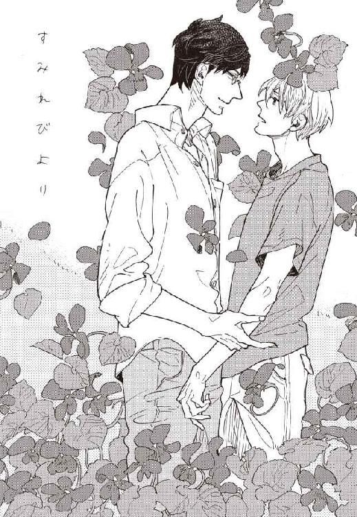
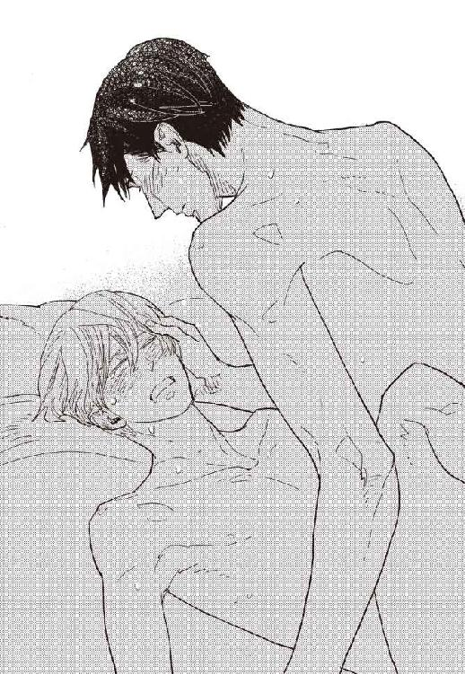

| すみれびより (ディアプラス文庫) | |
| 月村奎 | |

雀が雨樋でさえずる微かな音で、大町芙蓉は目を覚ました。
傍らの目覚まし時計は、セットした時刻の三十分前を指している。
六年半前に祖母の家で暮らすようになってから、芙蓉は毎朝アラームより先に目を覚まし、そして毎朝なんとはない所在なさにとらわれる。
十八歳にしてはやや薄っぺらくて頼りのない身体を布団の上に起こして、芙蓉はしばしぼんやりと部屋の中を眺めた。
古いが清潔な室内には物が少なく、寒々しいほどに片付いている。物に執着がないということもあるが、なによりここは仮住まいだという感覚があって、あまり多くの物を持っていない。
ここに限らず、芙蓉は幼いころからずっと自分の居るべき場所がわからないような心許なさを感じて生きてきた。
物に執着のない芙蓉が唯一大切にしているのは、枕元にいつも置いている植物図鑑だった。
毎朝の習慣で、芙蓉は植物図鑑の表紙にそっと手のひらをのせた。それは、芙蓉の初恋の記憶を封じ込めた宝物だった。
六年間毎日そうして触れているせいで、図鑑の表紙はすっかり手摺れしてカラーイラストがところどころ禿げていた。
そんなセンチメンタルな習慣を持つ一方で、芙蓉にとって恋というのはとても現実感が薄く、自分とは無縁に思えるものだった。
恋などただの幻想に過ぎないと芙蓉が思うようになったのは、まだたった六歳の時だった。
物心ついた頃からケンカばかりを繰り返していた両親が、芙蓉が六歳の時に離婚したのだ。
愛し合う二人が結婚し、やがておとうさんとおかあさんになるのだということは、幼稚園児でも知っている。けれどその愛に永続性がないということを、芙蓉は身近な見本に思い知らされることとなった。
元々豊かな家庭ではなかったが、離婚して父親が去ったのちは更なる貧乏が芙蓉を待っていた。
自分が両親から歓迎されて生まれてきた子供ではないことは薄々気付いていた。それを押し付けられた母親は、時々その鬱憤を芙蓉で晴らした。
『あんたなんか産まなきゃよかった』
そう言われたことが、何度かある。
芙蓉は年齢に似つかず妙に客観的な視点を持った子供だったので、その言葉にダイレクトに傷ついたりはしなかった。自分に非があるわけではなく、母親が自分に当たることでストレスを発散しているというのは、なんとなく理解できた。
小学二年生の国語の授業で、「同じ言葉でも意味の違う言葉があることを知ろう」という単元を勉強したとき、自分が母親にとって不要な子供だということと、自分の名前が芙蓉だという共通点に気付いて、なるほどと冷静に感心したりした。
二人暮らしのぼろアパートには風呂も洗濯機もなく、母親の気分や金銭状況により、何日も銭湯に連れて行ってもらえなかったり、洗濯をしてもらえなかったりもした。最低限の身辺のことでもそれだから、ほかの部分は更に散々だった。
学校では授業の前に『朝読書』の時間があり、みんな家から色々な本を持参してきたが、芙蓉は教科書以外の本など一冊も買ってもらったことがなかった。
やがて母親は頻繁に家に男を出入りさせるようになった。恋人がいるときの母親は機嫌がいいので、それはそれでいいことだと思ったが、母の恋はいつもあまり長続きしなかった。
早い時にはひと月、長くても一年ほどで男が変わる。この世に永遠の愛などないのだと、芙蓉の悟りは更なる確信へと裏打ちされていった。
小学校低学年のうちはさほどのことはなかったが、高学年になるにつれ、薄汚れて極端に貧乏な少年はクラスの中で浮き始めた。授業でペアを作ったり、グループ分けしたりするとき、誰も芙蓉と組みたがらなかった。そんな時、芙蓉はいつも「芙蓉は不要」と心の中で自分を茶化してみたりした。
半分以上が空き部屋のぼろアパートの敷地内は、管理も行き届かず雑草で覆われていた。学校に行く前に、出入りに邪魔な雑草をむしったら、その花弁を服につけたまま登校してしまい、『貧乏人に貧乏草がついてる』とクラスで大ウケした。以来、芙蓉のあだ名は貧乏草になった。
六年生になった時、そんな芙蓉の学校生活に小さな変化が訪れた。孤立していた芙蓉と、率先してペアを組もうという級友が現れたのだ。
西澤浩一郎というそのクラスメイトは、五年生の終わりに東京から引っ越してきた。田舎の地方都市の小学生にとって「東京からの転校生」というだけで話題性は十分だったが、そのルックスも成績も運動神経も、期待を更に凌ぐものがあった。メガネの似合う大人びた転校生は、精神的にも老成しているふうで、くだらないいじめなどには絶対に加わらなかった。照れから何かと男女が敵対しがちな年頃にあって、西澤は女子に親切で、掃除の時にはさりげなく重いバケツやごみ箱などを持ってやったりして、多くの女子の熱い視線を集めていた。
教師の信頼も厚く、六年生になって児童会長に推挙された西澤が、クラスでつまはじきにされている芙蓉に何かと親切にしてくれたのは、当然といえば当然のなりゆきだった。
つまりは同情や正義感からくる親切。そうとわかっていても、不思議と惨めさや不快さは感じなかった。それは多分、西澤があまりにもわかりやすく優等生然としたキャラクターだったせいなのだろう。その凛々しく毅然とした振る舞いにはおもねるような嫌らしさがなく、自然に受け入れてしまうのだ。
体育の授業の準備体操のペアも、校外学習のバスの座席も、理科の実験の班も、常にメガネの児童会長が芙蓉のとなりに陣取った。孤立することにすっかり慣れて、それをなんとも思っていないつもりだったが、「芙蓉は不要」と呟かずに済むのはなんと楽に呼吸ができることなのだろうと、その新発見に驚いた。
運動会のフォークダンスの練習のときにも、女子が誰も芙蓉と組みたがらなかったので、西澤とペアを組んだ。ガリガリに痩せてチビの芙蓉とは対照的に、西澤は体格にも恵まれていたから、なんだか妙に様になった。いままで誰とも繋いだことのない手を西澤がためらいもなくぎゅっと握ってきたとき、喉の奥の方がへんなふうに痛くなって、どうしてか泣きそうになった。
西澤の父親は地元の大学で教鞭をとっているとのことで、西澤はその身なりにも「いいところの子」っぽい雰囲気があった。別段特殊なものを着ているわけではないが、すべてがぱりっとして、そばにいくとなんとなくいい匂いがした。きれいに刈られた清潔な襟足が眩しかった。芙蓉は初めて、自分の薄汚れた服や目にかかるざんばらな前髪を恥ずかしく思った。
春から秋までの半年の間に、西澤からたくさんのやさしさをもらった。校内では他の誰よりも一緒にいることが多かった。それでも、友達という言葉はしっくりと来なかった。西澤はクラスの誰からも好かれていたから、自分が友達面をするのはなんだか思い上がりのように感じられたし、芙蓉の西澤に対する気持ちは、友情と呼ぶにはあまりにも何か生々しかった。
一度だけ、西澤の家に遊びに行ったことがある。
木枯らし一号の吹いた晩秋の寒い日だった。長袖のＴシャツ一枚で震えながら帰宅したら、アパートの鍵がかかっていて、母親が留守だった。そういうことは度々あって、合鍵を持たされていない芙蓉は、いつ帰るとも知れない母をひたすら待つことになる。その日は特に寒かったから、正直途方にくれた。
玄関の前に座って宿題をやった。手がかじかんで上手く字が書けないうえに、だんだん日が暮れて手元がよく見えなくなっていった。心底冷え切った頃、「大町」と声をかけられた。塾の帰りらしい西澤が、怪訝そうに自転車から降り立ったところだった。
家に入れない事情を話すと、西澤は「うちに来てれば？」と言って、着ていたジャンパーを脱いで貸してくれた。そういうのはテレビドラマの中で、大人の男が女の人にする行為だと思っていたから、妙にどきどきした。
大きくてあたたかいジャンパーを羽織らせてもらい、自転車の後ろに立ち乗りして、西澤の家に行った。
他人の家にあがったのは生まれて初めてのことだった。今にして思えばごく普通の戸建て住宅だったのだろうが、その室内のあたたかさと美しさに驚いた。それこそまるでドラマのセットのようなソファや家具があり、上品で笑顔のやさしい母親が、手作りのりんごケーキとココアを出してくれた。
西澤の部屋は、壁一面が書棚になっていた。その壮観に息を呑む芙蓉に、読みたい本があったら朝読書用に貸すけど、と西澤はさりげない口調で言った。
朝読書に持参する本がなくて、いつも図書室から借り出した本を繰り返し読んでいたことを西澤に気付かれていた。そのことが惨めなような、でも少し嬉しいような、不思議な気持ちになった。
父親が学者だというだけあって、書棚には図鑑や百科事典なども多かった。半分以上は開いたこともないと、西澤は失笑していた。
その中で芙蓉の目を引いたのは、雑草ばかりを集めたハンディサイズの植物図鑑だった。背表紙に自分のあだ名である貧乏草の絵があったので、なんとなく手が伸びていた。
貧乏草にはハルジオンという名前があることを知った。しかもあの厄介にはびこる雑草は、実は大正時代に観賞用として輸入された植物なのだという。
貧乏草だけではない。踏みにじられ無造作に引っこ抜かれる道端の雑草が、それぞれちゃんと名前を持っていることを知った。そのことに芙蓉はひどく感じ入った。
その日は植物図鑑とジャンパーを借りて帰宅した。
ジャンパーは翌日学校で返したが、植物図鑑は結局返せずに終わった。
それから間もなく、母親のネグレクトが児童相談所に通告され、大人たちの間で話し合いがもたれた結果、芙蓉は東京で学生下宿を営む母方の祖母の元に引き取られることになった。
空々しい「お別れ会」など開かれるのが嫌で、芙蓉はそのまま学校に顔を出すことなく故郷を去った。
東京へ向かう電車の中で、芙蓉は植物図鑑の入ったリュックを抱えてひっそりと泣いた。
住み慣れた町にも学校にも未練はなかったし、母親との別れもやむを得ないことだろうと思っていた。いくらひどい親でも、慕う気持ちが皆無ではなかったが、一緒にいてもろくなことにならないだろうことは十二歳になっていた芙蓉にはよくわかった。母親の方では別段自分を必要としていないこともちゃんと理解していた。
芙蓉はただ、西澤ともう一生会えないであろうことが悲しかった。
本当は引っ越しのことを西澤にだけは伝えたい、せめて図鑑だけは返したい、と思っていたのだが、顔を見たらとんでもないことを口走ってしまいそうで、結局会いにいけなかった。
自分は、西澤に恋をしていたのだと知った。清潔で精悍で思いやりのあるクラスメイトが好きだったのだ、と。
西澤に手を握られた時、ジャンパーをかけてもらった時、喉の奥から心臓が出てきそうなくらい身体がぎゅっとなったのは、恋をしていたからだった。
同性にそんな思いを抱くのが普通でないことはわかっていたが、結果を求める恋ではないから別にどうでもよかった。
両親があっけなく破局を迎えたように、母親の男関係がいつも長続きしなかったように、人の愛情など儚いものだと知っている。恋なんて、幻想。叶ったとしてもすぐに壊れるもの。
切ない想いを、芙蓉は涙で封じ込めた。
叶いようもない初恋。でも、だからこそ壊れることもない。
宝物は、芙蓉の心の奥に大切に大切にしまわれた。
そして六年半の歳月が流れた。
下宿屋にとって、年度末から年度初めにかけては退去入居の引っ越しや、それに伴う部屋の清掃や襖の張り替えなどで、少しバタバタする時期だ。
芙蓉の祖母、直子が営む「大町館」は最近では少なくなった賄い付きの学生下宿だった。昭和初期の建築であるレトロな建物は学生街のシンボル的存在で、テレビ番組で紹介されたこともある。
昔は二十人ほどの学生を置いていたらしいが、学生の減少と祖母の体力的事情により、今はその半分ほどしかいない。
賄いの手伝いに来ていた女性が一昨年に家庭の事情でやめてしまってからは、直子が一人で切り盛りしていた。
この春高校を卒業した芙蓉は、就職せずに家業の手伝いをする道を選んだ。といっても、ここに越してきた十二の時から家の手伝いをしてきた芙蓉には、すでに慣れた仕事だった。高校時代から台所仕事以外の雑用はほぼすべて芙蓉が担当してきた。
祖母から毎月もらっていたバイト代は、今月から「給料」という名目になった。祖母の心遣いに見合う働きをしたいと、芙蓉は朝から晩まで骨惜しみせず働いた。
身体を動かすのは苦ではなかった。むしろすることがあるということが、所在なさを埋めてくれた。
今日は新しい学生が入居する予定で、芙蓉はその新入生のための部屋を念入りに拭き清めた。前の住人が退去したあとにも掃除をしたが、新しい住人に気持ちよく使ってもらえるように、窓ガラスまでピカピカに磨き上げ、点検してもらうためにいつものように直子に声をかけた。
台所仕事をしていた祖母は、前掛けで手を拭きながらやってきた。
直子は小柄で痩せているが、そのしゃっきりと伸びた背筋のせいか、きりりとした眼差しのせいか、実際よりも大きく見えた。
メガネの奥の目を光らせ、ぐるりと部屋を検分すると、
「まあ、悪くはないね」
そっけなく言って、再びきびきびと台所に戻って行った。
下宿のおばさんというと、笑顔がデフォルトのみんなのお母さん的な雰囲気を想像するが、直子はいかめしくて無愛想だ。
十二で引き取られてから、祖母に愛情を具体的に示すような言葉をかけられたことはなく、勉強でも家の手伝いでも、どれほど頑張っても祖母の反応はいつも「悪くはないね」の一言だけだった。
けれど芙蓉はそんな祖母が嫌いではなかった。芙蓉も愛想がなく口下手なタイプで、感謝の念や慕わしさを言動で表すのが苦手だから、祖母のそっけなさはむしろ気が楽だった。
ほとんど会ったこともなかった孫を引き取るはめになった祖母の真意は芙蓉にはわからないが、少なくともここにきてからは薄汚れた格好で学校に行かされるようなことは一度もなかったし、三食あたたかい食事を与えられた。おかげでずっとちびだった芙蓉の身長も、今では平均程度にまで伸びた。痩せ型なのは相変わらずだが、それは祖母も同様だから遺伝なのだろう。
祖母には、出来る限り恩返しをしたいと思っている。下宿を手伝うことにしたのも、別に後を継ごうなどと厚かましいことを考えたわけではない。いずれ身体がきかなくなれば、祖母はここを手放すかもしれない。それは芙蓉の与り知らないことだ。ただ、下宿を続けている間は、少しでもその手助けをしたいと思った。
掃除用具を片付けると、芙蓉は洗面所に向かい、ずっしりと重い洗濯かごを抱えて庭に出た。大町館では晴天限定・有料で、洗濯も引き受ける。
芙蓉が洗濯物を干している間に、何人かの学生が芙蓉に気さくに挨拶の声をかけて出かけていった。
引っ越してきた時には大人に見えた「大学生のお兄さん」たちは、今は大して芙蓉と歳が変わらない学生たちだ。大してどころか、今日から入居する予定の新入生は、遂に芙蓉と同い年だ。そんなことに六年の月日を思う。
たくさんの洗濯物を干し終えると、芙蓉は狭く細長い庭に茂った植木を見て回る。前日の雨でたわんだ夾竹桃の枝をしばったり、日差しとともに伸びてきた松の新芽を切ったり、チューリップの芽のまわりの雑草をとったりする。
しゃがんで庭仕事をしていると、芙蓉の顔は自然に柔らかくほころんでくる。三月の末、まだ少し空気は冷たいけれど、雨で湿った土からは春の匂いがして、庭のそこここで春の雑草が花を咲かせている。
ムラサキサギゴケ、オオイヌノフグリ、カタバミ、キュウリグサ。カラスノエンドウ、ヘビイチゴ。
可憐な春の雑草の名前は、西澤から借りた植物図鑑で覚えた。図鑑にのっている草花は、芙蓉にとってはすべてが宝物だった。本来は駆除すべき雑草だが、芙蓉にはどうしても取り去ることができなかった。
綺麗好きの祖母は庭の手入れに関してもうるさかったが、そういう小さな雑草を芙蓉が愛おしむことは見逃してくれていた。たまに台所の空きビンにホトケノザやキツネアザミが差してあったりもするから、祖母も野草が嫌いではないのだろう。
春を待ちわびて咲く小さな花々は、いくら眺めても飽きなかった。さっさと次の仕事にとりかからなければと思いながらも、薄紫やピンク、水色や黄色の淡く美しい色彩に見惚れてしまう。
無心に草花を眺めていると、ふと人の気配を感じた。顔をあげると、玄関前に立っている青年と目が合った。スポーツバッグを斜めがけにした大柄な青年は、メガネの奥からもの言いたげな目でじっと芙蓉を見ていた。
その端整なルックスに一瞬心臓が跳ねる。小六の時の初恋相手が、六年経ったらきっとこんなふうに成長しているであろう風貌を青年はしていた。
数秒ぽかんと相手に見惚れたあと、芙蓉は我に返って自分に呆れた。六年経ってもまだ咄嗟にそんな妄想をするほど西澤が好きな自分が不気味で滑稽で笑えてくる。
「新入居の方ですか？」
芙蓉は手についた泥をジーンズで払いながら、青年に近づいた。
「今、祖母を呼んできます」
「......あの、もしかして大町？」
青年がメガネの奥の目を細めて、怪訝そうに問い返してきた。
心臓が、さっきより激しく跳ねた。
声は記憶の中のものよりもかなり低かったが、その口調やイントネーションにははっきりと聞き覚えがあった。
息を飲んで固まる芙蓉に、青年は少し困ったような笑みを浮かべた。
「あ、ごめん、覚えてないか。クラスメイトだったのって半年だけだし」
「......あの」
「俺、西澤だけどわかる？ 西澤浩一郎。あ、その顔だと名前も忘れられてた？」
急に酸素が薄くなったような気がして、その場に倒れるかと思った。
必死で足を踏ん張りながら、芙蓉は六年分の成長を遂げた初恋相手を呆然と見つめた。
「四畳半って、意外と広いな」
畳敷きの部屋をぐるりと眺めて、西澤が楽しげに笑った。
「ここ、角部屋だから広く感じるのかも」
何気なく答えてみせながらもまともに顔を見ることができなくて、芙蓉は窓を閉めるふりをして西澤から離れた。
こんな偶然があっていいものなのだろうか。西澤が東京の大学に進学して、しかもこの大町館にやってくるなんて。
もう二度と会えないと思っていた相手と再会できた喜びと不安で、芙蓉の心臓はこの二十分ほどの間に一年分相当の拍動を刻んでいる。息苦しくて、立っているのもしんどいくらいだ。
祖母と入居の挨拶を交わしながら、西澤が芙蓉との関係を祖母に話したため、なんとなく旧交を温めながら荷ほどきを手伝う流れとなってしまった。
荷ほどきといっても、寝具と段ボール箱四つだけで、手伝うほどの量でもない。手持ち無沙汰なせいで芙蓉は余計に緊張した。
「にしてもホントにびっくりしたよ。まさかここで大町に会えるなんて」
「あ、うん、俺もびっくりした」
ぎくしゃくと答えると、西澤がふっと笑った。
「ホントに俺のこと覚えてる？ 無理に話を合わせてない？」
「覚えてるよ」
「じゃ、証拠をみせてよ」
西澤が冗談めかした口調で言った。
「証拠って......」
「小六の時の俺との思い出。はい、どうぞ」
「ええと、......一緒にフォークダンスを踊った」
忘れるどころか六年前より鮮明なほどの思い出の山のなかから、咄嗟にひとつを口にすると、西澤はメガネの奥の目を軽く見開いた。
「ホントに覚えてたんだ」
「忘れるわけないよ。西澤は目立ったから、誰だって覚えてるよ」
自分の特別な感情を見抜かれないように、誰だって、の部分に力をこめて言う。
「だったらさ、この荷物の宅配便の差出人を見て、気付かなかった？」
「あんまりこういうのチェックしないから」
芙蓉は正直に答えた。
両親との関係がそうであったように、芙蓉はすべての人間とのつきあいに永続性を見いだせずに生きてきた。転校後の学校生活でも、いじめられることこそなかったが、親しい友達は一人も作らなかった。作り方がわからなかった。この家だって、いずれは出て行くことになるのだろうと思っている。そんな芙蓉にとって、下宿人は来ては去って行く存在に過ぎない。今までも、新しい入居者の名前をいちいちチェックしたりしたことはなかった。
「下宿の若旦那がそんなずぼらなことでいいのかよ」
「若旦那じゃないよ。単なる雑用係だから。西澤こそ、なんでこんな古い下宿屋を選んだの？ 金持ちなんだから、もっといいところに住めばいいのに」
それ以上あれこれ突っ込まれる前に、芙蓉の方から質問を返した。
西澤は失笑をもらした。
「全然金持ちなんかじゃないよ。それに俺、こういう昭和レトロな雰囲気ってすごい好きなんだ。東京の大学に行くなら、絶対昔ながらの学生下宿に住みたいって思ってた」
思いの強さを表すように、さっぱりとした口調で言う。
確かにそういう学生は少なからず存在する。だから大町館もそれなりに経営が成り立っているのだ。
西澤はすっと居住まいを正すと、急に真面目な口調で言った。
「今日から四年間、お世話になります」
ふいと六年前の面影が過る。育ちがよく正義感の強い都会的な児童会長。六年経って再び目の前に現れた西澤は、四角ばった優等生っぽさがほどよくこなれて、さらに魅力的な青年になっていた。
今日から西澤とひとつ屋根の下で暮らすのだ。
俄かには信じがたい事実に、芙蓉の心は大きく波立った。
大町館の朝食時間は七時から八時半の間で、各自が好きな時間に食べることになっている。
入居して四日。今朝も西澤は一番に食堂に現れた。
昨日入学式を終えたばかりだから今日はまだのんびりとオリエンテーション程度のはずなのだが、元々早起きなのだろう。いかにも西澤らしい。
チノパンに綿の白いシャツを着た西澤は、今朝も爽やかでかっこいい。おはよう、と声をかけられて挨拶を交わしながら、芙蓉の心拍数は一気に上昇していく。
この四日で、多分一生分の心拍数をカウントしてしまっている。このままでは早死にしてしまうと、芙蓉は暴れまわる心臓をなだめながらしゃもじを手に取った。西澤のためにごはんをよそっていると、直子が青ネギの入った玉子焼きと、切干大根の煮つけを二人分配膳台の上に並べた。一緒に食べろという、無言のアピールだ。
ここに来た十二の時から、祖母の方針で芙蓉は下宿生と一緒に食事をしてきた。それは食事の支度や後片付けの効率を良くするためだと思っていたから、高校を卒業して本格的に仕事を手伝うようになってからはバックヤードで食べるつもりでいたのだが、祖母は定着したスタイルを崩すつもりはないようだった。
西澤は朝から旺盛な食べっぷりを見せた。その向かいに腰をおろした芙蓉は、心臓が肥大化して胃袋まで圧迫してくるようで、食事が喉を通らない。四日経っても、西澤が目の前にいることがまだ信じられずにいた。
西澤は、まるで六年前の続きのように気さくに話しかけてくる。
「おばさんの飯、うまいな」
芙蓉にとっては祖母だが、下宿の女主人は学生からは「おばさん」と呼ばれている。
「和食が多いけど、平気？」
「ああ、和食の方が好きだ。大町も料理するの？」
「俺は全然」
芙蓉の方からは気のきいた話を振れないせいで、二言三言やりとりしては、会話がぶつりと途切れる。きっと、昔と変わらず暗くて面白みのない奴だと思われているに違いない。西澤はそういうことを顔に出す男ではないが、誰だってそう思うはずだ。
六年前に恋を自覚したときには感じなかった後ろめたさが、今こうして本人を前にすると俄かにわき上がってきて、芙蓉を居たたまれない気持ちにした。
心臓のドキドキが空気を震わせて西澤に伝わってしまっているのではないか。迂闊に目など合わせたら疾しい想いが露呈してしまうのではないか。これから四年間はひとつ屋根の下で暮らすのだから、絶対に気持ちに気付かれないようにしなくてはいけない。
「大町、グレープフルーツ食べれるようになったんだな」
西澤に言われて、芙蓉ははっと我に返った。喉を通らない食事を端折って、スマイルカットされたグレープフルーツに嚙みついたところだった。
「え？」
「小学生の頃はくだもの全般苦手だったよな」
そう言われて、俄かに記憶が蘇る。
たまに給食の献立に加わるくだものやデザートは、子供たちに大人気だった。芙蓉はいつもそれを「苦手だから」という理由で西澤にあげていた。苦手なんて本当は嘘だった。家では碌な食事を与えられていなかった芙蓉にとってそれらは貴重な品で、それをあげるのは、いつも親切にしてくれる西澤への最上級の感謝のしるしだった。
そんなものでしか感謝を表せなかった十二の自分を思いだすと、惨めで恥ずかしくて、益々顔をあげられなくなった。
「大町？」
俯いて黙り込んでしまった芙蓉に、西澤が怪訝そうに声をかけてくる。
どうしよう、絶対ヘンに思われている。
パニックに陥りそうになったとき、食堂に下宿人の一人が顔を出した。
「はよーっす」
入ってきたのは四回生の田上だった。
居たたまれない空気を断ち切ってくれたことにホッとして、芙蓉は田上に声をかけた。
「今朝は早いですね」
「うん、今日は面接だから。あー、なんか緊張してきた」
就活スーツに身を包んだ田上が、おどけたように胴震いして見せる。
「じゃあ、しっかりごはん食べていってくださいね。今、用意します。あ、弁当はいつも通りでいいですか？」
「弁当？」
問い返してきたのは田上ではなく西澤だった。
「うん。......あ、もしかして西澤に説明してなかったっけ？」
芙蓉の知り合いということで、下宿の設備や細々とした決まりごとについては芙蓉から伝えるようにと祖母に言われていたのだが、緊張で説明を忘れていたようだった。
「朝晩の賄い以外に、希望者には実費で昼食の弁当も作ってるんだ。っていってもおかずとか弁当用に作ってるわけじゃなくて、あり合わせを詰めただけなんだけど」
「あり合わせって感じじゃないよ。いつも小綺麗ですごくうまい。しかも安くてすげー助かってるんだ」
「おばさんの作るもの、なんでもうまいですもんね」
田上のプレゼンに西澤がしみじみと頷き、ふと芙蓉を振り返った。
「弁当って、お願いしたら俺も頼めるの？」
「もちろん。ちょっと待ってて」
田上の分の朝食を運んだあと、芙蓉は祖母に声をかけた。
「弁当、一個増えても大丈夫？」
祖母は大鍋に夕食用のカレーを仕込みながら、「大丈夫」と短く答えた。
配膳台にはすでにご飯がよそわれたステンレスの弁当箱が五つ並んでいた。いつも大雑把な数の弁当を作り、余ればそれが祖母や芙蓉の昼飯になる。
料理はすべて祖母の担当だが、弁当のおかずを詰めるのは中学生の頃から芙蓉の仕事となっている。朝晩のおかずや常備菜など祖母が作ったおかずの数々を彩りよく弁当箱に詰め込むのはパズルのようで楽しい作業だ。二人分の弁当箱に、立田揚げや肉じゃが、きんぴらごぼうなどを手早く見場よく詰めていく。
「これでいい？」
いつものように祖母に確認すると、一瞥後、
「悪くはないね」
お決まりの返事が返ってきた。
蓋を閉めて、糊のきいた清潔なクロスできゅっと包む。二つ目を包みかけて、芙蓉はふと手を止めた。蓋の隙間から、立田揚げをもうひとつ押し込んで、包み直す。
自分のバカバカしい行動に頰が熱くなる。
六年前と変わらない。給食のささやかなデザートでしか想いを表現できなかった自分は、今も立田揚げひとつ分のえこひいきに想いを封じ込めている。
家を空けられないという意味では下宿経営は年中無休だが、賄いのない日曜日は原則休日となる。
昼近く、芙蓉は一度目の洗濯物を取り込んで、二度目の分を干しにかかった。日曜日は本来洗濯も休みだが、今日のように天気のいい日は自ら進んで引き受けている。休日だからといってとりたててすることもないし、芙蓉はそもそも洗濯が大好きなのだ。
いい匂いに洗い上がった洗濯物をパンパンと広げて干していると、なんとも言えない満足感と充実感を覚える。いずれ祖母が下宿を畳んだら、クリーニング業に職を求めようかと思っているくらいだ。
「大町」
洗剤のＣＭのように見事に干し上がった洗濯物をうっとりと眺めていると、背後から声をかけられた。
振り向くと、コンビニ袋を提げた西澤が立っていた。
「大町って働き者だな。いつも動き回ってる」
「いや、そんなことないし......」
半口あけて洗濯物を眺めているところを見られたきまり悪さに、芙蓉はちょっとどぎまぎしながら答えた。
「それで昼前の仕事は終わり？」
「あ、ええと、取り込んだ洗濯物にアイロンかけて、あ、その前にちょっと庭の掃除を......」
動揺しながらぎくしゃくとしゃがみこんで、パンジーの花がらをつんでみる。
「草むしり、手伝おうか？」
西澤は傍らに身を屈めて、カラスノエンドウに手を伸ばした。
「それはダメ！」
自分でも思いがけないほど大きな声が出た。西澤はびくっと手をとめて、芙蓉を振り返った。
「ごめん、これ、よく道端とかに生えてるから、雑草かと思った」
「いや、あの、うん、カラスノエンドウっていう雑草なんだけど、花の色がきれいで好きだから、花が終わるまでは抜かずに楽しむっていうか......」
しどろもどろに説明しながら、自分の少女趣味が露呈することに顔が熱くなってくる。
西澤は花と芙蓉を何度か見比べて、ふっと笑った。
「そういえば確かにきれいな花だな。カラスノエンドウって、エンドウ豆の仲間かなんか？」
「同じつる植物で、エンドウ豆のミニチュアみたいなさやができるんだよ。......ええと、あ、あった。ほら、ここ」
三センチほどの長さの薄いさやをつまんで見せると、西澤はメガネの奥の切れ長の目を瞬いた。
「うわっ、ホントだ。生意気な可愛さだな。もしかしてこっちの忘れな草のミニチュアみたいな花にも、ちゃんと名前があったりするの？」
「それはキュウリグサだよ」
「小さいキュウリがなるとか？」
真顔で問われて、芙蓉は思わず笑ってしまった。
「そうじゃなくて、キュウリみたいな匂いがするからなんだって」
葉っぱを一枚摘み取って手渡そうとすると、西澤は芙蓉の手ごと摑んで自分の鼻の前に持っていった。
「うーん、確かにキュウリっていえばキュウリっぽい匂いだけど、なんかネーミングが安易すぎないか？」
神妙な顔で匂いを確かめる西澤に、自分の手からドキドキが伝わってしまいそうで居たたまれなくなって、
「安易なネーミングって言えば、」
話を変えるふりでさりげなく手をほどいた。
「この青い花、知ってる？ オオイヌノフグリっていうんだけど」
「花はよく見るけど、名前は初耳だな。......フグリってまさかアレのことじゃないよな？」
「そのまさかなんだ。種の形が犬の睾丸に似てるから」
「ひどいな。こんなかわいい花にそんな適当な理由で名前つけるなんて」
西澤は失笑をもらした。その自然な笑顔が嬉しくて、芙蓉はさらに別の草を指さした。
「適当さで言ったら、これも結構なものだと思う。さっきのがカラスノエンドウで、こっちのちっちゃい方がスズメノエンドウ」
「あー、でかいからカラスで、ちっさいのはスズメか。確かに安易だな」
「それはまだいいんだけど、問題はこっちだよ」
芙蓉はパンジーの脇から伸びている、カラスノエンドウと同種の小ぶりの花を指さした。
「これのネーミングセンスがなかなかすごいんだ」
「これは......カラスよりは小さいし、スズメよりは大きいから、うーん、ハトノエンドウとか？」
「それならいっそ納得がいくんだけど、これ、カスマグサっていうんだ」
西澤は眉根を寄せた。
「いきなり仲間はずれかよ。カスマって誰だ？」
「誰とかじゃなくて、カラスとスズメの間のサイズだから、カスマなんだって」
芙蓉の説明に、西澤は今度は盛大に噴き出した。
「そんな適当さが許されるのか。つけたもん勝ちなんだな、植物の名前って」
西澤の笑い声を聞いていたら芙蓉もおかしくなって、緊張を解いて笑いだした。
ひとしきり笑いあってふと気付くと、西澤が面白そうな表情で芙蓉をじっと見ていた。
俄かに我に返って、芙蓉は笑いを引っ込めた。
「な、なに？ なにかついてる？」
はぜたカタバミの種でもくっついているのだろうかと、慌てて顔や前髪を払う。
「いや、大町がこんなに長くしゃべってくれたのって、初めてだなって思って」
「え？」
「昔も今も、口数少ないし、あんまり話しかけられたくないみたいだし、もしかして嫌われてるのかと思ってたんだけど」
「そんな......」
元々口下手な芙蓉だが、西澤の前に出ると意識しすぎて余計に上手く話せないのだ。それを正反対にとられていたなんて。
「西澤がってわけじゃなくて、俺、人と話すのが得意じゃなくて......。面白いこと言えないし」
「面白いことを話せなんて言わないから、安心しろよ。あ、でも今の雑草の話はかなり面白かったな」
西澤はひょいと立ち上がると、あたりまえのように芙蓉に手を差し出してきた。その仕草に、六年前にジャンパーを貸してくれたときの記憶が重なる。つられてつい手を出すと、ふわっと身体が浮き上がるようにひっぱりあげられた。
「一緒に昼飯食わない？」
西澤はそう言って、コンビニの袋を振った。
「洋風幕の内と生姜焼き弁当、どっちがいい？」
「いや、あの、俺は......」
「おばさん留守だし、どうせ一人で食べるんだろ？」
確かに祖母は今日は朝から外出していて、芙蓉が留守番を引きうけている。
「大町と食おうと思って買ってきたんだ。行こう」
有無を言わさず手を引いて歩き出す。
心臓がまた壊れそうにドクドクいいだす。
大町と食おうと思って、買ってきたんだ。
そう、昔から、西澤は誰に対してもこんなふうにストレートな物言いをする男だった。
それは自分の好意が相手を喜ばせるとわかっている、ひなた側の人間の言い方だった。給食のデザートをあげる時にも、弁当に立田揚げをおまけする時にも、本音を言えずにこそこそする自分とは真逆のタイプだ。
西澤のそういうところが、今も昔も芙蓉を惹きつけてやまない。
廊下に置かれた共用の冷蔵庫から、名前が大書きされた麦茶のペットボトルを摑み取って、西澤は芙蓉を自分の部屋に誘った。
階段を昇りきったところで田上とはち合わせるまで、西澤は無意識の様子で芙蓉の手を引いていた。
「おはよー」
田上はＴシャツにトランクスという格好で、あくび交じりの挨拶を寄こす。平日の就活スーツ姿と休日の寝起き姿に人一倍落差のある男だ。
「芙蓉ちゃん、一緒に朝マックしない？」
「朝マックはとっくに終了してます」
芙蓉は失笑しながら答えた。自然にするりとほどけた指先に、まだ西澤の体温が残っている気がする。
「え、マジ？ じゃあ昼マック」
「すみません、留守番で今日は出れないんです」
「残念。じゃ、西澤つきあう？」
「俺、弁当買ってきちゃったんで」
西澤がコンビニ袋を掲げてみせると、
「振られまくりかよ」
田上はぼやきながら洗面所へとおりていった。
「散らかってるけど、どうぞ」
招き入れられた西澤の部屋は、鴨居に吊るされた洗濯物が春風にはためき、畳の上には鞄や雑誌が無造作に置かれていたが、布団がちゃんと押し入れにしまわれている分、十分きれいと言える。
「どっちにする？」
西澤は畳の上に洋風幕の内と生姜焼き弁当を並べた。
「どっちでも......」
「じゃあ、じゃんけん」
無邪気に言って、西澤は大きな拳をじゃんけんポンと振った。
こんな時に限って、芙蓉はあっさり勝ってしまう。
「好きな方をとって」
「いや、あの、西澤が先に......」
「じゃんけんの意味ないじゃん」
呆れたように言われて、芙蓉はおろおろとなる。どうしよう、西澤にうんざりされてる。煮え切らない奴だって思われてる。
「あ、あの、じゃあ、」
「だったら半分ずつ食べよう。俺、最初にこっちね」
西澤がぱっと生姜焼き弁当を手に取った。
芙蓉はちょっと安堵して、幕の内に手を伸ばした。
「しかし今日はひとつ謎が解けてよかった」
弁当を食べながら、唐突に西澤が言った。
「謎？」
「うん。毎朝、そこの窓から下を見ると、大町が膝をかかえて俯いてるのが見えて、いったい何を落ち込んでるんだろうって思って。一緒に昼飯でも食べながら、訊いてみようと思ってたんだけど、単なる植物観察だったんだな」
みんなの頼れる児童会長だった頃から変わらぬ、西澤らしい気の回し方に感銘を受けつつ、ぼけっと雑草を眺めている間抜けな姿を知らぬ間に観察されていたと知って、芙蓉は思わず頰を赤らめた。
恥ずかしくて、芙蓉は部屋干しの洗濯物を指さして話を逸らしにかかった。
「あ、あのさ、これも最初に説明し忘れてたかな？ 洗濯物、出しておいてくれれば引き受けるから。一応有料だけど、値段はコインランドリーと変わらないよ」
「うん、聞いた。でも、毎朝大量の洗濯物を干してる大町を見てたら、更に増やすのも申し訳ない気がしてさ」
「そんなことないよ、大好きだから」
力強く反論してから、はっとなって慌てて付け加える。
「あの、大好きっていうのは洗濯のことだよ。洗濯物を干すのが、大好きなんだ」
西澤が失笑をもらした。
「そんなに必死な顔で言わなくても、わかってるよ」
「うん、ごめん。それで、だから、西澤も遠慮しないで出してよ。あ、一応全部に名前をつけるのがルールなんだけど、タグにＮとか小さく書いておいてくれればＯＫだから」
「わかった。じゃ、今度から頼むな。......でさ、ちょっと訊きたいんだけど」
「なに？」
「なんか不自然な距離を感じるのは気のせいか？」
さりげなくじりじりと部屋の隅の方に身を寄せていたことにあっさり気付かれて、芙蓉はハンバーグを喉につまらせそうになる。
「え？ そ、そんなことないけど？ ほら、ここ、風が通って気持ちいいし」
実際、四月にしては気温の高い日で、窓からそよぐ風が気持ちよかった。
「ホント？」
芙蓉の言い分を確かめるように、西澤も窓際に身を寄せてきた。距離が縮まって、芙蓉の心臓は落ち着きなく暴れ出す。
人と間近に接するのが、芙蓉は苦手だった。自分が臭うのではないかと、いつも不安になってしまう。それは、洗濯も入浴も満足にさせてもらえなかった、子供時代のトラウマだった。あの頃、台所の流しで身体を拭いたりしていたけれど、それでも自分が薄汚れているという感覚は拭えなかった。体育で西澤と組むたび、その清潔な匂いに胸がときめく半面、自分はきっと薄汚い匂いがするんだろうなと気後れしていた。
実際のところ、芙蓉は体臭が薄い方だし、今は毎日風呂に入っているから臭うはずがないのだが、精神的な傷はなかなか癒えない。
洗濯好きも、多分そこから来ているのだろう。自分のものでも人のものでも、身につけるものをきれいにすると、安堵と満足感に包まれる。
「はい、交換」
きっちり半分まで食べた生姜焼き弁当を、西澤が差し出してくる。
「大町あんまり食べてないじゃん。苦手なものでもあった？」
「そんなことないよ」
ぶんぶんとかぶりを振って、芙蓉は弁当のとりかえっこに応じた。
「苦手なものがあったら、今後の参考に教えておいてよ」
今後という単語に戸惑って視線を送ると、西澤は笑顔で言った。
「特に予定がなかったら、日曜日は一緒に昼飯食おうよ」
「え、あの......」
「迷惑？」
「いや、あの、」
「こんなふうに昔の友達と再会できたのも何かの縁だし。あ、お互い都合の付く日限定っていう気楽なノリで」
さらっと言って、西澤は芙蓉の食べかけのハンバーグを無造作に口に放りこんだ。そのことと「友達」という甘美な響きに、芙蓉の胸はまた波立つ。
大町館には、玄関から入ってすぐにレトロな応接室がある。廊下に面した腰高窓から中が見えるようになっているその広々とした洋間は、下宿人の家族や友達の来訪の折に使われる公共スペースとなっている。女子禁制の大町館だが、談話室までは女子も入れる。
西澤とコンビニ弁当を食べた翌週の日曜日の昼近く、談話室には西澤の大学の友人たちが訪れ、賑やかに盛り上がっていた。男女二人ずつの学生たちは、みんなおしゃれで賢そうに見えた。まだ新学期が始まって二週間も経っていないが、西澤があっという間に友人を作り、学生生活に馴染んでいる様子に、芙蓉は心底感心した。そういう芙蓉は、東京に出てきてから六年かけても、親しい友達の一人もできなかった。
祖母に言われて談話室に麦茶を運んできた芙蓉は、しばし窓ごしに西澤と友人たちの楽しげな様子を眺めていた。
みんなの信頼厚かった児童会長は、大学生になった今も友人たちの中心的存在のようだった。予告もなく突然訪れた彼らに苦笑いしてみせながらも、西澤は常に話の輪の中心にいた。西澤が饒舌というより、みんなが西澤と話したがっているという様子だった。
ぼうっと立っている芙蓉に女子学生の一人が気付いて、さっと立ち上がって麦茶のトレーを受け取りに来た。
「すみませーん、突然お邪魔しちゃって」
セミロングの髪が揺れ、ふわっと甘い香りがした。先月まで同級生だったクラスメイトの女子と同じ年だとわかってはいるが、大学生になったとたん、女の子たちは突然艶やかに変身する。
「ホントだよ。アポなしでいきなり押しかけてくるなよ」
芙蓉が返事をするより先に、西澤が割って入った。端整な顔に、苦笑が浮かんでいる。
「だって西澤くんの下宿、見てみたかったんだもん。ホント、昭和っぽくてオシャレだねぇ。私もこんなとこに住んでみたいな。女子は入居できないんですか？」
最後のセンテンスは芙蓉に振られたものだった。
「すみません、うちは男子限定なので」
「そうかぁ、残念。あの、バイトの方ですか？」
「ここの若旦那だよ」
また芙蓉の代わりに西澤が答える。
「え、そうなの？ こんな若くてかっこいい人が跡取り？ むしろ女子学生限定にした方が人気出るんじゃない？」
あからさまなお世辞にたじろいでいると、西澤が女友達の手からトレーを取って、みんなに麦茶を配った。
「ほら、これ飲んだら外にメシでも食いに行こう。見学して気が済んだだろ」
「若旦那さんも一緒に行きませんか？」
女の子が気さくに芙蓉を誘ってくる。
「いえ、俺は......」
「若旦那は仕事があって忙しいんだよ」
日曜は休みだと知っているくせに西澤が即座にそう言ったのは、友人たちとの集まりに自分を加えたくなかったのだろう。西澤の性格からして、芙蓉のような友人がいることが恥ずかしいとか、そんなことを思っているわけではないのはわかる。芙蓉だってそこまで卑屈ではない。ただ、芙蓉が一緒だと場が白けるくらいのことは思っているかもしれない。
「大町！」
談話室から奥に引き返す途中、西澤が追ってきた。
「ごめんな。日曜は大町と昼飯を食う予定だったのに」
困ったような顔で拝む仕草をする。
芙蓉はかぶりを振った。
「予定がなかったらってことだろ。俺も今日は色々雑用があるから」
「じゃ、来週は空いてる？ 時間があったらどこか行かないか」
罪滅ぼしみたいなことをしてもらういわれはないのに、と思ったが、待っている友人たちの元に西澤をさっさと戻すため、芙蓉は頷いてみせた。
台所へと引き返しながら、芙蓉は小さくため息をついた。
西澤の方から提案してきた日曜ランチだけれど、予定が入るのも西澤の方だ。それは至極当然のことだし、そもそもあの提案だって、そこまで本気のものではなかったのだろう。
玄関の方から聞こえてくる賑やかな笑い声が、芙蓉の背中を冷ややかに撫でた。
ひとつ屋根の下で暮らすということは、こうして西澤の交友関係をつぶさに目にするということだ。四年間かけて、親友や恋人を作って行く様を、指をくわえて見ているということだ。
元々成就するはずもない、成就を願ってもいない恋だ。西澤により親しい相手ができようができまいが、芙蓉には関係のないことだ。
けれど、直接会うことすら叶わない芸能人の結婚にすら、ファンは落胆する。それに近い淋しさや動揺は、芙蓉にだってある。
「どうしたんだい、ぼーっとして」
台所で筍の皮をむいていた祖母が、怪訝そうに訊ねてきた。
「あ、ううん、なんでもない」
「お昼はどうするの？」
午前中に、今日は西澤と食べるかもしれないと伝えてあった。
「うちで食べても大丈夫？」
遠慮がちに訊ねると、祖母は手早く親子丼を作ってくれた。
おふくろの味のプロだけあって、祖母の作る料理はどれもとてもおいしい。ここに来た時から、毎食食べるたびに新鮮に感動する。
すごくおいしい！ どうやったら卵がこんなにふわふわに仕上がるんだろう？
そう無邪気に言いたいのに、言葉はいつも喉の奥でつっかえてしまう。口数の少ない祖母と、それに輪をかけて大人しい芙蓉とは、あまり会話らしい会話をしたことがない。
芙蓉を引き取ったことを祖母がどう思っているのかもよくわからない。
高校卒業後はここを手伝いたいと告げた時にも、祖母は「そうかい」と淡白に答えたきりで、その真意はわからなかった。本当は卒業と同時に独立してほしかったのかもしれないし、外で働いて金を入れてほしいと思っているのかもしれない。恩返しと思ってしていることが、祖母には逆に迷惑かもしれない。
祖母の気持ちはわからないが、芙蓉はこのあまり愛想のない祖母のことが好きだった。やさしい言葉をかけられたことも、抱きしめられたこともないけれど。
ここに来た翌朝、芙蓉は枕元にきれいに畳まれた服に袖を通して驚いた。かぎ裂きができていたチノパンはきれいに繕われ、ボタンを無くして久しいシャツの袖口には、新しいボタンが付けられていた。祖母はそういう人だ。口には出さないけれど、細かいことに心配りをしてくれる人。
昼食を食べて後片付けをしたあとは、ひとしきり裏庭の草取りをした。あまり陽の当たらない裏庭はこの時期花をつけるような植物はなく、厄介なツタやヨモギが主なので、遠慮せずに抜いて行く。
西日がきつくなる頃、洗濯物を取り込んで、縁側でアイロンがけをした。
シャツ、ハンカチ、祖母の前掛け。色々なものにぱりりとアイロンをかけるのは気持ちがいい。自分の心の隅々までぴんとのびる感じがする。
アイロンがけは布帛のもの限定だが、ふと手に取った西澤のＴシャツもアイロン台に乗せて、洗濯表示を確認してみる。綿100％。アイロンは中温。サイズはＸＬ。身につけていたときにはそれほど大きく見えなかったけれど、こうして手にとってみると、芙蓉の服より二回りは大きい。
メリヤス地を伸ばさないように慎重にスチームアイロンをかけると、Ｔシャツは新品のように仕上がった。すっかり楽しくなって、下着にまでアイロンをあててみる。ＴシャツはＸＬだが、ボクサーパンツはＬだった。そんな小さな発見に、なるほどと感心しながら、アイロンを滑らせる。
無心に作業に没頭していると、祖母がやってきた。
「休みの日にそんなことをしなくたっていいよ」
ぶっきらぼうにも聞こえる口調で言う。
「買い物でも遊びでも、休日は好きなことに使いなさい」
「うん。でも、アイロンかけるの、好きだから」
芙蓉がぼそぼそ答えると、祖母は微妙に呆れたような顔になったが、それに関してはもう何も言わず、廊下の奥を指さした。
「お風呂の点火スイッチがとうとう壊れたよ」
前から不具合があった古い風呂釜だが、だましだまし使ってきたのだった。
「ホント？ 俺、見てみようか？」
「無理だよ。スイッチが完全にバカになっちゃってるから。今日は修理屋も休みだから、お銭湯ね」
「わかった」
下宿は元々風呂なしの条件なので、下宿生たちは歩いて五分ほどの銭湯に行っている。
西澤と銭湯ではち合わせるのはなんとなく落ち着かない気がして、早めに行ってしまおうかと考えを巡らせていると、ふと祖母の胡乱げな視線と目があった。
まだ何か用があるのかと目顔で問うと、祖母はアイロン台に顎をしゃくった。
「パンツにアイロンはいらないんじゃないの」
淡々とした指摘に我に返る。西澤のトランクスに熱心にアイロンを当てていた自分が変質者のようで、慌ててアイロンのスイッチを切った。
「そ、そうだよね。ちょっとぼんやりしてて」
「ぼんやりして火事でも起こされちゃかなわないよ」
「うん、ごめん」
芙蓉はアイロンのコンセントを抜き、西澤の洗濯物を手早く畳んだ。
各自の部屋の前に洗濯物を配って、早々と銭湯に行くことにした。
ゆったりとした春の夕暮れの中、銭湯までの短い散歩の最中に、芙蓉は何度も足を止めて道端の草花を眺めて楽しんだ。
ほんの数ミリほどの小さな白い花の前では、芙蓉はとうとうしゃがみこんだ。
これはハコベだろうか。それともウシハコベ？ ミミナグサのようにも見える。
顔を近づけてじっと目を凝らすと、花弁の先が浅く裂けているのが見えた。
「どうした？ 気分でも悪い？」
いきなり声をかけられ、ぎょっとして顔をあげると、西澤が立っていた。
「あ、いや、そうじゃなくて、花を見てただけ......」
「花？ 花なんてないじゃん」
「そこの、その白い小さいやつ」
「え？ うわっ、これ？ 小さいなんてもんじゃないだろ」
西澤は失笑しながら腰を屈め、目をこらした。
「なんだっけ、これ。昔親父に教わったことがあるな。ハコベだっけ？」
「ハコベの仲間だけど、花びらの先が裂けてるから、多分ミミナグサだと思う」
「すごい博識」
「たまたまだよ」
そう、たまたま西澤から借りた雑草図鑑にハコベの仲間の見分け方が載っていたのだ。だから、ハコベとウシハコベとミミナグサとツメクサは完璧に見分けられる自信がある。
「そういう謙虚なところがいかにも大町らしいな」
にこやかに言われて、芙蓉は慌ててかぶりを振った。
「謙虚なわけじゃなくて、ホントに偏った知識だから。雑草はそれなりに知ってるけど、ちゃんとした園芸植物とかは全然わからないよ」
「またまた。じゃ、あれは？」
西澤は冗談めかした様子で傍らの家の庭を指さした。地面から弓のように伸びたたくさんの枝に、無数に真っ白い花が咲いている。まるで雪が降り積もったように美しい。
「春によく見るけど、名前は知らない」
芙蓉が正直に答えると、西澤はメガネの奥の目を見開いた。
「嘘だろ？」
「嘘じゃないよ。ホントに知らないんだ」
「雪柳だよ。俺でも知ってるくらいだから、結構有名だと思うぞ」
「そうなんだ」
雑草図鑑に載っていなかった花のことは知らないのだ。
「変わってるな、大町って」
そう言って笑う西澤は、小脇に風呂道具一式を抱えていた。
「銭湯行くんだろ？ 一緒に行こう」
こともなげに言う。
「帰ってきたら、ちょうど大町が出かけたところだっておばさんに聞いて、追いかけてきたんだ」
芙蓉はこっそり動揺した。
正直、追いかけられたくなかった。しかし今更この場を逃れる口実も見当たらず、目と鼻の先の銭湯まで肩を並べて歩く。
時間が早いせいで、銭湯は空いていた。そのことがまた芙蓉を居たたまれなくさせる。
片想いする相手の前で服を脱ぐはめになるとは、なんの罰ゲームだろう。しかしもじもじしているのも見苦しいので、西澤のペースに合わせてさっさと脱いだ。
一緒に来たからには、当然のように洗い場ではとなりあうことになる。小学校のときも含めて、メガネを外した西澤の顔を初めて見た。メガネも含めての西澤という印象があったから、なんだか慣れないその顔に更に緊張した。
「背中、流すよ」
いきなり肩を摑んでぐいと向きを変えられ、心臓が跳ねる。「流そうか？」という質問形式ではなかったので、断る隙もなかった。
背後から左肩を摑まれ、泡立てたタオルでごしごしこすられる。心臓が口から飛び出して、排水溝に流されていくのではないかと思った。
好きな相手との裸のつきあい。しかし嬉しがる余裕など芙蓉にはなかった。むしろ後ろめたさで縮み上がっていた。こんな場所で心臓をバクバクいわせている自分が疾しくて、薄汚くて、泣きたくなる。
これは拷問だろうか。同性を好きになったことに、神様が罰を下しているのだろうか。
「ここ、どうした？」
右肩を洗っていた西澤が、怪訝そうな声で言った。
「え？」
振り向くと、西澤の顔がすぐ近くにあった。メガネがないせいで寄らないと見づらいのだろう。その距離の近さと、妙に真剣な眼差しに動揺して、芙蓉はすぐに視線を逸らした。
「火傷の痕っぽいけど」
「ああ、それ、大昔のだよ。自分では見えないから、すっかり忘れてた。あの、もういいから」
芙蓉はカランの方に身体を向けて、シャワーで石鹼を流した。
「......お母さんか？」
西澤が低く呟くような声で訊ねてきた。
「え？」
意味がわからず問い返し、西澤のそれ以上は言いづらいといった表情を見て、合点がいった。芙蓉の転校を当時の担任がどう説明したのかは知らないが、芙蓉の家庭環境があまりよくなかったのは、当時の同級生ならみんな知っていたことだ。
「違うよ」
ネグレクトも虐待ではあるが、母親は暴力は振るわなかった。
尚も物問いたげな眼で見つめられて、芙蓉はぼそぼそと言った。
「母親の知り合いが、間違えてタバコを落としたんだ」
本当は泥酔した母親の恋人に故意に押し付けられたのだ。
西澤は眉根を寄せて、何かひとり言のように呟いた。「ごめん」と聞こえて「え？」と問い返すと、西澤は少し黙り込んだあと、口を開いた。
「今はおばさんと二人暮らしみたいだけど、お母さんは？」
「知らない。どこにいるのかわかんないし」
「会ってないのか？」
「全然。あの人は、俺には興味ないから」
ぼそぼそと答えてから、慌てて付け加えた。
「別にひがんだり恨んだりしてるわけじゃないよ」
「......恨んで当然だと思うけど」
「ホントに恨んでないよ。母親だからみんな母性に溢れてるとか、そんなことないと思うんだ。子供が好きになれない母親だっているよ」
マイノリティ同士という意味では、自分たちは似たもの親子かもしれない。
わが子を愛せない母親と、同性に恋心を抱く息子と。
銭湯で西澤に背中を流されて死ぬほどドキドキしている自分に、母親の欠落を責める権利などありはしないのだ。
ふいに脱衣所が賑やかになったと思ったら、小学校高学年と思しき子供たちが大はしゃぎで風呂場になだれ込んできた。少年野球かサッカーの練習帰りの子供たちらしかった。
いきなり騒々しくなって重い話を続ける雰囲気でなくなったことに、芙蓉はほっとした。
子供らと一緒に大きな湯船に浸かり、脱衣所に出ると、芙蓉は電光石火のスピードで服を身につけた。
傍らで西澤が笑いだす。自分の焦った様子が滑稽だったのかと、どぎまぎしたが、笑いの理由はそこではなかった。
「下着にアイロンをかけてもらったのって初めてだ」
メガネをかけた西澤が、皺ひとつないＴシャツと下着を身につけて笑っていた。
「あ、ごめん、ぼーっとしてて......。おばあちゃんにも叱られた」
「ぱりっとしてて気持ちいいよ。サンキュー」
アイロンのきいた下着姿の西澤を見ていたら、小学生の頃の短パン姿を思い出した。あの頃も、いつも西澤はぱりっとしていた。それは単に清潔に整えられた衣服のせいばかりでなく、その心の正しさ、清らかさを映していたのだと思う。
あの頃より更に眩しくなった西澤との偶然の再会を、恨みたくなる。
以前、下宿人の一人が、同窓会で初恋の女子と再会したらあまりに様変わりしていてがっかりしたという話をして、ほかの下宿人から初恋は実らないものだよと笑われていた。
いっそそうならよかったのにと思う。西澤がびっくりするほど性格が悪くなっていたり、信じられないほど巨漢になっていたり、ありえないほど馬面になっていたりしてくれたら、初恋の幻想から醒めることができたかもしれない。
でも六年ぶりに会った西澤は、あまりにも完璧に成長していて、下着姿で無造作に立っていてもかっこいい。
「どうした？ のぼせたか？」
ぼんやり眺めていたら、西澤が眉根を寄せて顔を近づけてきた。
まさか下着姿に見惚れていたとも言えず、
「あ、いや、うん、ちょっと」
もごもごと答えると、西澤はイオン飲料のペットボトルを買ってきてくれた。
親指と中指だけで易々と蓋を外し、「はい」と差し出してくる。
西澤はこうやって人に親切にすることに本当に慣れていると思う。その仕草はいつも自然で美しい。
自分の気持ちを打ち明けさえしなければ、迷惑をかけることも気持ち悪がられることもないはずだ。けれどその純然たる善意の前では、片想いすら西澤への冒瀆のように思えた。
受け取らないのを遠慮ととったのか、西澤は自分でそのペットボトルを一口飲んでみせて、もう一度差し出してきた。
西澤の唇が触れたボトルを受け取る時に手が震えそうになり、どうかそれが西澤に伝わりませんようにと祈った。
どうやったら、この想いを消せるだろう。
どうやったら、西澤の友達に嫉妬を感じずにいられるのだろう。
楽になる方法がわからなくて、芙蓉は途方にくれた。
わかることはただ一つ、初恋は実らない。花すら咲かない。
胸に茂るこの厄介なだけの雑草は、自分の手で引き抜いてしまうほかないのだ。
雑草の生命力はとても強い。抜いても抜いても、また生えてくる。
芙蓉の胸にある西澤への想いも同じだった。いくら引っこ抜いても、西澤という太陽が毎日目に入るところにいるのだから、あっという間にまた茂ってくる。
律儀な西澤は、翌週の日曜日に本当に芙蓉を「外に飯を食いに行こう」と誘ってきた。これ以上胸の中に無駄な草が茂ると困るから、また仕事を理由に断ろうかと思ったが、今日は天気の急変に注意という天気予報だったので洗濯もしていないし、掃除もすでに終えている。なにより、西澤と一緒に過ごせる誘惑に勝てなかった。結局、祖母にひとこと言い置いて、西澤と外に出た。
日曜日の学生街はいつもより人気が少なく、閉じている飲食店も多かった。迷う余地もなく、看板の出ていた洋食屋に入った。
向かい合ってオムライスを食べながら、芙蓉はずっと緊張していた。
相変わらず面白いことも言えず、西澤が振ってくれる話に要領を得ない返事をするのが精いっぱいだった。芙蓉にはそれすらときめくひとときだが、懐かしさと博愛精神からこうして声をかけてくれる西澤の方は、これだけ盛り上がらないとさすがにもう二度と誘う気にはならないのではないかと暗い気持ちで考えた。
動悸が激しすぎてオムライスを飲み込むのにさえ苦労しながら、自分に限らず、初恋が実らないというのはこういうことなのかもしれないと思う。好きすぎる相手と一緒にいるのは、幸福すぎて、緊張しすぎて、身が持たない感じがする。
気付かれてはいけない恋心がどこかから漏れ出ているのではと不安になって、一刻も早く逃げ帰りたいような、それでいて少しでも長く一緒にいたいような、矛盾する気持ちに翻弄されながら食事を終え、外に出ると、ぽつぽつと雨が降り出していた。
「降ってきたな。戻った方がいいかな」
空を見上げて西澤が呟く。
本当に昼飯を食べるだけで終わることに、安堵と落胆が入り混じる。
西澤に対して邪な気持ちなど持っていなかったら。もっと要領よく楽しい会話ができたら。そうしたら四年という期間限定で、普通の友達づきあいができたのだろうか。
帰り道の半ばで、雨脚は一気に激しくなった。
「こっち」
西澤は芙蓉の手を引っ張って、歩道橋の階段下の三角の隙間に駆け込んだ。上から下から威勢のいい雨音が響き、歩道橋の下にもしぶきが跳ね上がってくる。薄暗くなった空で雷光がひらめき、地響きのような雷鳴が轟いた。
「今年初めてだな、雷」
階段下にしゃがみこんだ西澤が、ふと路面に目を凝らす。
「すごい。コンクリートから花が咲いてる」
芙蓉も傍らにしゃがみこむ。西澤が指差したのは、歩道の割れ目に咲く小さなすみれだった。
「こういうところにすみれが咲くのはどうしてかって話、小学校の国語の教科書に載ってたよね」
芙蓉が言うと、西澤は首を傾げた。
「そうか？ 記憶にないなぁ」
「低学年の頃だから、西澤はまだ東京の小学校に通ってたんだよね。教科書が違ったのかな」
「どんな話？」
「すみれの種には、エライオソームっていう白いかたまりがついてるんだけど、それがアリの大好物なんだって。で、アリが種を巣穴に運んで、エライオソームだけを食べて、種を巣の外に捨てるんだ。ほら、ここの隙間にアリの巣がある」
「へえ。アリに種まきを手伝わせるんだ。賢いやつだな」
「ほかにも賢いところがたくさんあるんだよ。ほら、花の根元が後ろの方に膨らんでるだろ？ この奥の蜜を吸える昆虫は限られてるから、効率よく受粉を手伝ってもらえるんだ。色んな虫に吸うだけ吸われて違う花のところに行かれちゃったら意味ないから」
「賢い上に強かだな」
蜜の話は教科書ではなく西澤に借りた植物図鑑から得た知識だ。そこに載っていたのはごく簡単な説明だったが、それから興味を持ってあれこれ調べ、すみれの神秘的な生命力に感動した。誰かに話したいとずっと思っていたが、人づきあいの希薄な芙蓉はそんなどうでもいいような話を聞かせる相手がいなかった。
西澤が興味深げに耳を傾けてくれるものだから、芙蓉は更に一生懸命説明した。
「それだけじゃないよ。もっとすごいのは、閉鎖花なんだ」
「閉鎖花？」
「うん。閉じたまま自家受粉できる。花を咲かせずに種を作る能力を持ってるんだ。花も蜜も作らないから省エネで、ほかの植物に日光を遮られて光合成を阻まれても、ほんの少しの栄養で結実できるんだって」
「マジで？ そんなふうに自己完結できるんだったら、そもそも花なんか咲かせる必要ないんじゃないのか」
「でも、ほかの個体と受粉して遺伝子を交換した方が、強い個体ができるんだって。それに、人間に対する生存戦略だって言う人もいる。花が咲かなかったらむしりとられて終わりだけど、この可憐な花のせいで、雑草のくくりから逃れて人間に大切にされてるって」
「こんな小さい花に、そんないろんな仕組みが備わってるなんて驚きだな」
「すみれは競争力が弱いから、生き残りのために必死なんだよ」
可憐な紫の花にそっと指先で触れながら、芙蓉は言った。
傍らで西澤がふっと笑った。
「今日でいちばん喋ってくれたのがすみれの話っていうのが、大町らしいな」
芙蓉は俄かに我に返った。
やはり西澤も食事中に話が弾まないことに気詰まりを感じていたのだと悟り、また一方で退屈な話を延々してしまったという恥ずかしさを感じて、顔が熱くなってくる。
「......ごめん」
「え？ なんで？」
「つまんないことをベラベラ喋っちゃって」
西澤はメガネの奥の目を丸くした。
「つまんないどころか、すごく面白かった。この前も言ったけど、大町の雑草話、俺は大好きだよ。もっと聞かせてよ。すみれの秘密ってほかにはないのか？」
「秘密っていうか、春と夏では葉っぱの形状が全然違ってきて......」
促されて話し始めてみたものの、先程までのように無心には喋れず、言葉尻が曖昧になる。
「どう違うの？」
「夏の方が大きいんだ」
理由も形状も、もはや得意げに説明する気にはなれなかった。
雨に包まれた三角の狭い空間に二人きりでいることが、急にたまらなく息苦しくなってくる。
西澤はできた人間だから適当に話を合わせてくれているけど、絶対つまんない雑草オタクだって思われてる。絶対絶対思われてる。
「もうちょっとそっちに寄ってもいい？」
西澤の低い声が歩道橋に反響してドキッとする。
「え？」
「ここ、結構撥ねがあがって濡れてきた」
「あ、ごめん、気付かなくて」
芙蓉は慌てて反対側へ尻をずらした。
「そっちに行ったら今度は大町が濡れるだろう」
西澤の手が伸びてきて、芙蓉を元の位置へ戻した。
肩を抱くように引き寄せた手は、そのまま離れなかった。
芙蓉の心臓は壊れそうにバクバクいいだす。
何をみっともなくうわずってるんだ。こんなの、西澤にしてみればありきたりなスキンシップなのに。
芙蓉は一度も部活動に参加したことがなかったけれど、運動部の生徒たちはよくこんなふうに気安く肩を組んだり抱き合ったりしていた。
普通にしていなければ、西澤に変に思われる。わかっているのに、自分ではコントロールがつかない。耳や頰が燃えるように熱かった。ドキドキという拍動があまりにも大きすぎて、身体全体が小刻みに振動する。触れ合った身体からそれが西澤に伝わってしまっているのではないかと、気が気でなかった。
案の定、芙蓉の様子を不審に思ってか、西澤が傍らから顔を覗き込んできた。
肩を抱かれたまま、そんなふうに首をひねって視線を合わせられると、まるでキスでもされるかのようだ。そんなことをふと思ってしまった芙蓉は、自分の的外れで恥ずかしい想像に動転して、西澤の顔がまともに見られず、思わずぎゅっと目を閉じてしまい、更に動揺する。
バカバカバカ！ これじゃまるでホントにキスを待ち受けてるみたいじゃないか。
慌てて目を開こうとした途端、柔らかなものが唇に触れた。
激しい雨の音がふっと遠のく。
一瞬、何が起こったのかわからなかった。
西澤にキスされているのだと気付いたのは、メガネのフレームがこめかみをかすめた時だった。
そっと触れるだけのキスを落として、西澤の唇は離れていった。
目を開けると西澤は、少し困ったような表情で芙蓉を見ていた。
頭の中がごちゃごちゃに混乱して、うまくものが考えられなかった。何か言わなければと開いた口からは、今の状況とまったく関係ない言葉が滑り出す。
「閉鎖花は......閉鎖花を持つ植物は、すみれ以外にもあって、身近なところだと、ホトケノザもそうだし、カタクリなんかも、」
「大町」
西澤の声が、まるで催眠術を解く呪文のように響いた。
意識の外へ遠のいていた雨音が、一気に頭の中へとなだれ込んでくる。
我に返ったとたん、すうっと血の気が引いた。
芙蓉は勢いよく立ち上がった。階段下に強か頭を打ち付けたが、そんなことはどうでもよかった。
「大町！」
西澤の声を振り切って、芙蓉は雨の中へと駆け出した。
どうしよう。どうしよう。どうしよう。
取り返しのつかないことをしてしまった。
どうして目などつぶったりしたのだろう。
あんなシチュエーションで目をつぶったりしたから、西澤は誤解したのだ。芙蓉がキスされたがっている、と。心やさしい西澤は引っ込みがつかなくなって、芙蓉に恥をかかせまいと、応じるふりをしてくれたに違いない。
とうとう恋心が露見してしまった。もう普通になんかできない。単なる幼馴染のふりなんて。友達のふりなんて。
ずぶ濡れになって帰宅した芙蓉にタオルを渡してくれながら、祖母は怪訝そうな顔をした。
「止むまで待ってたらよかったのに。西澤くんはどうしたの？」
「......なんか用事があるって言ってた」
濡れた頭を拭くふりで祖母から顔を隠して、自分の部屋へと逃げ込んだ。
胸が痛い。比喩でもなんでもなく、心臓のあたりがずきんずきんとひどく痛んだ。
西澤にバレてしまった。西澤を汚してしまった。
西澤と、キスした。
人生最初で、多分最後のキスの相手が西澤であったことは、神様からのギフトなのか、罰なのか......。
自己嫌悪と切なさでどうしていいのかわからず、芙蓉はタオルをかぶったまま膝を抱えた。
雨があがってしばらくしてから、西澤が帰宅したのが窓ごしに見えた。
やがて足音が近づいてきて、部屋の扉をノックされた。応じずにいると、足音はまた遠のいていった。
唇に残ったキスの感触はずっと消えず、芙蓉の心をざわつかせ続けた。
西澤の目を見られないまま、一週間が過ぎた。ほとんど口もきいていない。
ひとつ屋根の下でまったく会わないというわけにはいかないけれど、極力はち合わせないように気を遣い、朝晩の食事時には、田上やほかの下宿人との会話に気を取られているふりで、なるべく西澤の方を見ないようにした。
もっとも芙蓉がそんなふうに自意識過剰に逃げ回るまでもなく、西澤も芙蓉と距離を置いているようだった。
状況に流されてあんなことをしたものの、さすがに博愛精神が行きすぎたと思っているのだろう。
思い出さないようにしようとするのに、あの時のキスのことが一日に何回も何十回も頭をかすめる。
雨の音。
すみれの花。
思いのほか柔らかかった西澤の唇。
記憶は毎回、キスの一瞬前にまで巻き戻る。
西澤に見つめられて、目などつぶった滑稽で気持ちの悪い自分。
フラッシュバックする回想の中では、芙蓉は自分のその間抜けな顔を、西澤になって見下ろしている。
こいつ、何考えてるんだよ、気持ち悪い。
そう思いながらも、元来の人の好さから相手に恥をかかせることができずに困惑する西澤。
思い出すたびに、頭を搔きむしりたくなる。
絶対に知られたくなかった気持ちが、あっけなく露見したあの瞬間。
一番好きな相手の前で、一番みっともない顔を見せた。
大切な初恋の思い出に、消えない疵がついてしまった。
日曜日、芙蓉はいつものように洗濯物を干し、庭の手入れをした。オオイヌノフグリもカラスノエンドウも花期のピークを過ぎ、たくさんの種が付き始めていた。それらの雑草を、芙蓉はひとおもいに抜いていった。まだ可憐な花が残っている株も、構わず引き抜いて行く。
胸の中に茂った西澤への想いを根絶やしにするような必死さで。
どんな花が咲こうが、雑草は雑草だ。カタバミも、ハハコグサも、片っ端からみんな引き抜いた。
それでも、すみれだけはむしれなかった。勝手に生えてくるという意味ではすみれも野草・雑草のくくりなのだろうが、この可憐な花を西澤と眺めたことを思うと、どうしても手が出せない。
「それ、抜いちゃってよかったの？」
ふいに背後から声をかけられて、飛び上がりそうになった。
はためく洗濯物の間に、西澤が立っていた。
それ、と指差したのは、カラスノエンドウのひと山だった。
「......うん、もう花期を過ぎたから」
一週間ぶりの会話に、また胸がざわざわとなる。
西澤に気持ちを知られているのだと思うと、もう普通に顔を見ることもできなかった。
「昼飯、今日は何にする？ 日曜は休みの店が多いみたいだし、コンビニにしておこうか」
しかし西澤はまるで何事もなかったように、日曜の昼は一緒にという約束を続行するようなことを言い出した。
どういうつもりだろう。一週間考えて、やはり友達のいない気の毒な旧友には慈悲の手をという優等生的結論に達したのだろうか。
「......俺、今日は用事があるから、ごめん」
今日に限らずもう永遠に無理だ。自分の劣情を知られている相手と二人きりで食事なんて。
「草取りだったら俺も手伝うよ。今日はカラスもスズメもカスマも取っちゃっていいの？」
傍らにしゃがんで、西澤は「あ」と小さく声をあげた。
「すみれ、ここにもたくさん咲いてるんだな。気付かなかった」
そう言われて、感傷的にすみれを保護していた自分が急に恥ずかしくなって、芙蓉が無造作にむしろうとすると、
「ストップ！ それは抜くなよ」
いつかとは反対に、西澤が制止の声をあげた。
思わず顔をあげてしまう。
西澤はやや気まずげに頭を搔いた。
「いや、だってさ、この間の話を聞いたら、すみれの必死さに感動したっていうか。こんなに一生懸命咲いてるのに、抜いたら可哀想だよ」
いつも通りのやさしい西澤の前でどんな態度を取ったらいいのかわからず、芙蓉は俯いたまま黙り込んでいた。
「すみれって、なんとなく大町に似てるな」
気詰まりな沈黙を埋めるように、西澤がぼそっと言った。
花にたとえられたのは、これで二度目だ。一度目は貧乏草だったから、グレードアップといえるのか。
「......かもね。虚弱そうに見えて、案外図太いところとか」
芙蓉は投げやりに言った。
親から育児放棄されて、ろくに食事を与えられなくても病気もせずに育ったし、友達も恋人もおらず将来の夢もなくても、死にもせずにこうやって生きている。
「なんだよ、それ。全然違うよ。この花の形のことを言ってるんだ。毅然と胸を張ってるような、でもぼんやり俯いてるような、このたたずまいが大町に似てるなって」
指先ですみれの花を撫でながらそう言って、西澤はふっとひとつため息をついた。
「あのさ、この間のことだけど、あんなことをするつもりはなかったんだ」
少し途方にくれたような声で言う。
そんなこと、言われなくてもわかってる。するつもりのないことをさせたのは芙蓉だ。
「......うん、わかってる」
「虫のいい話だけど、あれ、なかったことにしてくれないかな？ ほら、なんかこの一週間、大町と普通に話もできない感じだしさ、そういうの嫌だなと思って」
あんな気持ちの悪いこと、思い出したくもないのだろう。
なかったことにできるなら、芙蓉にとっても願ってもいないことだ。
「......うん」
コニシキソウをちまちまむしりながら、芙蓉は小さく頷いた。
「よかった。じゃあ、今まで通り普通に友達。な？」
「うん」
「昼飯、行く？」
「いや、今日はまだ仕事があるから」
笑顔ってこんな感じだっけ？
芙蓉は口角をあげてさらりと答えながら土のついた手をパンパンと叩いて、うその用事のためにいそいそと建物の中へと引き返す。
頭も、気持ちも、混乱していた。
なかったことにしてもらえるなら、それにこしたことはないはずなのに、どうしてこんなに胸が張り裂けそうなんだろう。
今まで通り普通にと、西澤は言うけれど、普通というのがどういうことなのかが芙蓉にはわからなかった。そもそも、西澤の前で普通でいられたことなどないというのに。
「あ、芙蓉ちゃん、さぬきうどん好き？」
玄関を入ってすぐ、談話室の奥の給湯器の前で、田上に声をかけられた。
「実家から大量に送ってきたんだけど、よかったら一緒にどう？」
「あ、いえ......」
「遠慮しなくていいよ。熱湯でほぐすだけのレトルトだから、すぐできるし。俺の部屋で一緒に食おうよ。ちょっとこれ持ってて」
いきなりどんぶりを渡されて面食らっていると、背後から大きな手がのびてきてどんぶりを奪い取り、それを田上に突き返した。
「すみません、大町は俺と昼飯食う約束してるんで」
「あ、そうなの？」
妙にきっぱりとした西澤の声に、田上が気圧されたように目をぱちぱちさせる。
西澤は芙蓉の手を摑むと、ぐいぐいと歩き出した。
芙蓉には何がなんだかわけがわからなかった。ただ、びっくりしたせいで、今までなんとかねじ伏せていた感情の蓋が外れ、ぐるぐるしたものが胸の奥からこみ上げてきた。
西澤は芙蓉を二階の自分の部屋まで引っ張って行くと手を離し、振り向いて何か憤ろしげに言おうとしたが、芙蓉の様子を見て目を見開いて固まった。
「......ごめん、俺、乱暴で怖がらせたか？」
芙蓉は溢れ出る涙と戦うのに必死で、返事ができなかった。
「ごめん、悪かったよ。俺とは昼飯食えないのに、田上さんとは食うのかよとか思ったら、なんかカッとしちゃって。だいたい、なんであの人は大町のことを名前呼びするんだよとか......」
西澤が何か喋っているのはわかったが、突如溢れ出した涙にパニックに陥ってその言葉の意味もわからず、芙蓉は肩を震わせながらかぶりを振った。
「......悪くない。西澤は全然悪くなくて、でも、俺、この間のこと、なかったことになんかできない......」
抑えの利かない感情がこぼれ出す。
あのキスのことは、どうやっても芙蓉には忘れることはできない。勘違いから起きたハプニングだとわかっているけれど、初恋相手にもらった一生に一度のキスなのだ。消えてなくなりたい居たたまれなさや辛さも含めて、良くも悪くも一生忘れられないキスだ。
でも、西澤にとってはなかったことにしたい、してしまえる、出来事なのだ。そう思ったらたまらなく悲しかった。
身勝手なのはわかっている。最初から叶うはずも叶えるつもりもなかった恋なのだから、そんなことで悲しむのが筋違いだということもわかっている。
それでも涙は勝手に溢れてくるのだ。
「ごめん、そうだよな、そんなやったもん勝ちみたいな言い逃れはずるいよな。訂正させてくれ。ええと、なかったことにするのは、なかったことにしてくれ」
芙蓉の涙に動揺してか、西澤はいつにない狼狽ぶりで、言っていることも西澤とは思えないわけのわからなさだった。
「俺はただ、この先も友達として......」
身振り手振りで何か続けようとした西澤は、結局口をパクパクしただけで何も言えずにため息をついて頭をかきむしった。
「往生際悪いな、俺。今さら友達とか空々しいこと言って」
そうだ。友達なんて空々しい。西澤と芙蓉が友達だったことなど一度もない。西澤はもちまえの面倒見のよさで、浮いていた芙蓉に手を差し伸べてくれただけ。再会後も、そんな関係を延長していただけだった。
「どこから話せばいいかな。ええと、そう、テレビ。偶然、テレビで見たんだ」
西澤の支離滅裂さはまだ続いていた。
「......テレビ？」
芙蓉はしゃくりあげながら小さく問い返した。
「うん。中学三年の時だった。情報番組で大町館が紹介されて、画面の端に大町がチラッと映ったんだ。それで、大町の居場所を知った。それからずっと、ここに来ることを考えてたよ」
西澤の言うことが、芙蓉にはさっきからまるで理解できない。
「違う、そこじゃないな。もっと遡らないと......」
西澤は少し考え込むようにしたあと、じっと芙蓉の目を見て言った。
「小六のとき、大町のことを児童相談所に通告したのは、うちの母親なんだ」
「......え？」
「最初は、家庭に問題を抱えているクラスメイトに俺がしてあげられることはなんだろうって、俺が母親に相談をもちかけたんだ。で、それからしばらくして大町がうちに来た時、大町の様子を見て、母親が、大町のためにきちんとしたところに相談した方がいいって」
西澤は重い口調でぼそぼそと喋った。
「最初は反対した。そんなところに相談したら、大町は家から離されてもう会えなくなるかもしれないんだから。でも、友達の命がかかっていることだって諭されて」
西澤はぎゅっと唇を嚙んだ。
「俺は学校じゃ児童会長なんかやらされてもちあげられてたけど、所詮十二のガキで、大町のためにできることなんて、何もなかった。ネグレクトには薄々気付いてたけど、あんな、煙草の火を押し付けられるような虐待までされてたなんて、知りもしないで......」
ふと銭湯でのことを思い出した。西澤が「ごめん」と小さく呟いた、あれはそういう意味だったのか。
西澤の手がためらいがちにのびてきて、芙蓉の頰の涙をそっと拭った。
「大町が転校したって聞かされたとき、めちゃめちゃ悲しかった。行き先もわかんなくて、絶望的な気持ちになった。幸せにしてるといいなって、ずっと祈ってたんだ。だから、中三の時、たまたまテレビで大町を見つけて、すごく興奮した」
西澤の瞳の強い光を、芙蓉は不思議な気持ちで見つめ返した。
「でも、ここに来た日、すごい偶然だなって顔で驚いてたじゃん」
「半分は演技だよ。いきなり『会いたくて来た』なんて言ったら、大町がビビると思って」
西澤は照れたように笑った。
「だけど驚いたのも本当だよ。大町があの頃の可憐な雰囲気のままだったから」
眉尻が、困ったように少しだけ下がる。
「六年越しの想いに免じてこの間のことを許してくれっていうのは、虫が良すぎる話だってわかってる。俺だってあそこであんなことする気はなかったんだ。......いや、なかったっていうのは嘘だな。いつだってそういう気持ちは持ってたけど、意識して抑えてて、でもあの時は抑えが利かなくなって......」
さっきから、西澤は何を言っているのだろう。
芙蓉は呆然と西澤を見つめながら言った。
「......何言ってるんだよ。あれは俺のせいなのに。俺がもの欲しげに目なんか瞑ったから、同情でしてくれたことだろ」
「え？」
今度は西澤が怪訝な顔になった。
「同情ってなに？ 俺は大町のことが好きでたまんなくて、我慢できなかったから、キスしたんだ」
先程からの意味不明の展開の上に、さらに意味不明な結論をきっぱりと告げられ、芙蓉は混乱しながら後ずさった。四畳半の部屋に後退できるスペースはさしてなく、すぐに背中が押し入れの襖にぶつかった。
これは夢？ それとも俺の耳がおかしい？
身体が小さくふるえ、手のひらに汗がにじみ出した。
「......そんなこと、ありえない。俺みたいな薄汚い貧乏草を好きになるなんて、絶対ありえない」
「大町のことを薄汚いなんて思ったことは一度もないよ。あの学校に転校してすぐから、大町のことが気になって仕方なかった。儚げなのにどこか超然としてて、手足が細くて目が大きくて、大町はホントにさっきのすみれの花みたいだった。こんなきれいな生き物をいじめてるやつらはバカだって思った。大町の魅力に気付いてないバカばっかりだって」
あの品行方正で育ちのいい児童会長が、かつての旧友をバカ呼ばわりするのを、芙蓉は信じられない気持ちで見つめた。
「......嘘だよ、そんなの。だって、西澤はかっこよくて、頭がよくて、やさしくて、クラスの女子はみんな西澤のことが好きで、俺なんかとは正反対で......、好きだったのは俺の方だよ」
ずっと胸の奥に隠し続けてきた本音を芙蓉は初めて漏らした。
六年前の淡く切ない初恋を思い出して、芙蓉の目からはまた涙が溢れ出した。芙蓉は交差した両腕で顔を覆って、ずるずるとその場にしゃがみこんだ。
「俺と手を繋いでくれたのは、西澤だけだった。理科の実験も、修学旅行のバスの席も、西澤が一緒だった。西澤の思い出は、俺の、一生で一番大事な宝物なんだ」
「......ホントに？」
感極まった声で呟き、西澤が屈んで芙蓉の肩に手をのばしてくる。芙蓉は壊れそうな心臓を守るように膝を抱えて、その手から逃れた。
「......会いたくなかった」
芙蓉の呟きに「え？」と返した西澤の声はショックのためか一気にトーンダウンしていた。
「思い出だけ大切にしていたかった。思い出は、安心で、安全で、触れないけど、傷つくこともなくて......」
怖い。
西澤が、勘違いしそうなことを言うから。俺のことが好きでキスした、みたいなことを言うから。
西澤の手が、そっと芙蓉の手を摑んだ。
「俺は思い出だけじゃいやだ。生身の大町と話したいし、触りたいし、キスしたいし、一緒にいたい」
こんな夢みたいなこと、絶対現実じゃない。
けれど手を引かれて転がり込んだ西澤の胸はがっしりとしてあたたかかった。これは夢じゃない。本当のこと。
芙蓉は西澤の肩口に額をつけて、小さくしゃくりあげた。
「......ホントは、会いたかった。死ぬほど会いたかった」
「大町」
西澤の手が、愛おしむように芙蓉の背を撫でた。
「雑草を見るたびに、西澤のことを思い出した」
「......雑草？」
怪訝そうに問い返される。
「西澤の家に寄らせてもらったとき、雑草の図鑑を借りたんだ」
「ああ、何か貸した記憶はあるんだけど、あの時、俺、舞いあがってたから、何の本だったかまでは覚えてなかった」
「本当は返さなきゃいけないのに、転校のどさくさにまぎれて持ってきちゃって、毎日、毎日、そればっか眺めて、西澤のことを思い出してた。カスマグサも、すみれのエライオソームのことも、全部あの図鑑で知ったんだ」
「......そうだったのか」
「再会したあと、今度こそ返さなくちゃって何度も思ったんだけど、使いこみすぎてすごい年季が入っちゃって......西澤に見せたら俺の気持ちがバレちゃうんじゃないかって怖くて、後ろめたくて、渡せなかった」
言い終わるや否や、西澤にぎゅっときつく抱きしめられた。
心臓が、潰れそうになる。記憶にある限り、身内も含めて誰かにこんなふうにハグされるのは、生まれて初めてのことだった。
「......大町、震えてる」
耳元で西澤が囁く。
「だって、こんなの、嘘みたいで、信じられなくて......。初恋は叶わないはずなのに」
「そんなの、迷信だよ」
きっぱり断言する西澤の胸を、芙蓉は弱々しく押し返して身体を離そうとした。
「迷信なんかじゃない。俺、西澤と、れ、恋愛するなんて、絶対無理だ。ドキドキし過ぎて、心臓が壊れて、きっと死ぬ」
「そんなかわいいことを言われたら、俺の方が死ぬよ」
息がかかるほど間近から西澤に顔を覗き込まれる。
そのまま唇が近づいてくる。今度は勘違いしようのない体勢だったので、芙蓉はぎゅっと目を閉じた。
触れるだけのやさしいキスに、芙蓉の胸はきゅうっと甘くよじれた。
「......なんで、俺なんか......。西澤はいくらだって相手を選べるし、この間遊びに来た友達の中にも、きれいな子がいたのに......」
この期に及んで自分が西澤の腕の中にいることがまだ信じられなくて、呆然と呟く。
「それを言うなら、大町だって俺より田上さんの方がいいとか思ってない？」
「......なんで田上さん？」
「だっていつも仲良さそうだし、さっきだって俺とのランチは断ったくせに、田上さんとメシ食おうとしてたし」
「してないよ」
「それに、田上さんは来年社会人だろう？ 学生の俺よりずっと頼りがいがあるし」
「そんな......」
「好きな子のためになにも出来なかった十二の時のこと、結構トラウマになってるんだよな。こうやって、大町のところに辿りつけたけど、今だって脛かじりの学生であることに変わりはないし」
「そんなことない。小六のとき、西澤は俺を救ってくれたよ。今も、今だって、俺には西澤だけだよ」
「だったら友達にきれいな子が、とか言うなよ。俺だって大町だけだ。大町に会いたくてここにきたんだから。すみれの受粉専属の昆虫と同じで、俺は大町の蜜しか吸わない」
かき口説くようにそう言ってから、西澤はふっと笑った。
「なんだろう。俺、そういうキャラじゃないのに、大町を見ると花になぞらえてバカなこと言ったりして。恋をすると人は詩人になるって、こういうこと？」
それなら俺だって、エライオソームのついたすみれの種になりたい。西澤の好きな成分をくっつけて、西澤の巣穴に運んで食べてもらえるように。
そう思ったけれど、西澤のようにうまく自分を茶化せる自信がないので、口には出さなかった。
西澤は芙蓉を腕の中に囲ったまま、離そうとしない。
「なあ、今度その植物図鑑見せてよ」
「......うん。手摺れしちゃって申し訳ないけど、ちゃんと返す」
「いや、大町が持っててよ。俺はただ、それを見ながらいつもみたいに花の名前を教えてほしいんだ。雑草の話をするときの大町が好きだから」
西澤の腕の中にいると、ドキドキして、落ち着かなくて、でも胸の中に花が咲くようにふわふわして、身体中が熱くなる。
これが、恋というものだろうか。
恋なんて幻想に過ぎないと思っていたけれど、触れればこんなにもあたたかいものなのか。
ただ幸福なばかりではない、心許ないようなこの不安定な感覚も含めて恋と呼ぶのならば、どんな花が咲くのか育ててみたい気がすると、芙蓉は思った。
今年は例年よりも梅雨入りが早かった。
芙蓉は梅雨が嫌いではない。絶え間ない雨音と、一日中夕方のように薄暗いせいとで、ぼうっと眠くなってくるが、そのアンニュイな感じは心地よくもあった。
人間がぼんやりするのとは裏腹に、植物たちは驚くほどいきいきとしてくる。夾竹桃は貪婪なほどに茂って暴れ、あじさいは嬉しそうに葉っぱをしゃきりとさせ、青紫の美しい花を咲かせる。
湿気でべたべたする廊下を念入りに雑巾がけしながら、気付けば庭の緑に目を奪われている。
雨が止んだら、そろそろツユクサをむしらなくてはいけない。ツユクサは可憐な青色の花を咲かせる芙蓉の好きな雑草のひとつだが、一般的にはたちの悪い害草に分類されている。横に這って節から根を出し、どんどん広がっていくから、残念だけれど適当なところで除草しなくては。
「何見てるの？」
不意に声をかけられて、芙蓉は顔をあげた。いつの間に帰ってきたのか、西澤が笑顔で芙蓉を見下ろしていた。
「おかえり」
「ただいま。なにかあるの？」
西澤は腰をかがめて、視線の高さを芙蓉と合わせて庭に向ける。
「ツユクサ」
芙蓉が答えると、西澤は一瞬目を丸くしたあと笑い出した。
「大町は本当に植物が好きだよね。目を輝かせて凝視してるから、子猫でもいるのかと思った」
「だって、すごくきれいだから」
「どれ？」
「あの辺に茂ってるやつ」
「あの青い小さい花？」
「うん。朝顔と同じで、朝開いて午後にはあんなふうにしぼんじゃうんだ。あの青色はアントシアニン系の色素で、簡単に色落ちするから、染め物の下絵を描くのに使われたりしたらしいよ」
「相変わらず博識だな」
西澤に関心したように言われて、頰が赤らむのを感じる。
「西澤に借りた植物図鑑に書いてあったんだ」
はにかむ芙蓉の顔を、西澤はすくいあげるように覗き込んできた。
「大町は緑の精みたいだね」
西澤はこうやってよく芙蓉を植物にたとえる。まるで美しいものでも見るような目でそんなことを言われると、分不相応な扱いにそわそわと落ち着かなくなってしまう。
西澤の顔が近づいてきて、芙蓉はきゅっと目を閉じた。
甘くやさしく、唇が重なる。
こんなふうに人目を盗んでかわす口づけはもう十回を超えたけれど、いつまでたっても慣れることがない。
「震えてる」
芙蓉の手に触れて、西澤が指摘する。
「き......緊張して......」
「もう何度もキスしてるのに？ そろそろ慣れてもいい頃じゃないかな」
息がかかる距離で笑われて、芙蓉はおどおどと視線を泳がせ、か細い声で呟いた。
「西澤はわかってないから......」
「え？」
「......俺が、この状況をどれだけ夢みたいに思ってるか。慣れるなんてありえない」
メガネ越しの目が、軽く見開かれる。
「それはこっちの台詞だよ。俺がどれだけ大町のことが好きか、知ってる？」
微笑んだ形の西澤の唇が、再び芙蓉をついばみにくる。触れるか触れないかの瞬間、玄関から賑やかな人の気配がした。芙蓉はぎこちなく西澤から身体を離した。
一緒に帰宅した数名の学生たちが、短い挨拶の声とともに廊下を通り過ぎていく。一番うしろにいた田上だけ足を止め、いつものように人懐こく芙蓉に声をかけてきた。
「よ、芙蓉ちゃん。こんな雨の日に洗濯頼んじゃってごめんな」
廊下に張った洗濯ロープには、いつもより少ないとはいえ、ずらりと洗濯物がはためいている。洗濯のサービスは原則として晴れの日限定だが、こう雨が続いては原則などと言っていられない。
「ワイシャツ、あとでアイロンかけておきますね」
「世話かけるね、芙蓉ちゃん。俺がいつまでも内定もらえないばっかりに」
「ワイシャツはクリーニングに出した方がいいんじゃないですか」
西澤が横から言うと、田上は人差し指を立ててチチチと振ってみせた。
「ゲン担ぎなんだ。前に芙蓉ちゃんにアイロンかけてもらった日、二次面接に合格したから。いつもありがとな」
「いいえ」
「今度お礼に何かおごらせてよ」
「とんでもない。洗濯物は皆さんにちゃんと代金を頂いていますし」
「気持ちの問題だよ。今度の日曜とかどう？」
一瞬逡巡したのち、芙蓉は口を開いた。
「すみません、日曜は西澤と約束があるので」
こんな言い方をしたら、西澤の重荷になりはしないかと、ちょっと不安になる。日曜は双方予定がない限り一緒に過ごすという暗黙の了解があるが、今度の日曜日に具体的になにかをする約束をしているわけではない。
「そっか。二人、仲いいよな。小学校時代の親友だっけ？」
親友なんておこがましすぎて、答えあぐねていると、
「そうです」
西澤がきっぱり答えた。
「いいね、幼馴染。あ、そうだ、西澤、ちょっとプリンタ借りてもいい？ 俺の、昨日から調子悪くてさ」
「いいですよ」
「助かる！ 着替えたら部屋行くな」
「わかりました」
田上について歩き出した西澤は、数歩行ったところで足を止め、芙蓉を振り返った。その顔に芙蓉の大好きなやさしい笑みが浮かぶ。
「日曜日の件、ありがとう」
「え？」
「俺を優先してくれて、すごく嬉しい」
まるで僥倖みたいに言われて、芙蓉はただただ動揺する。
芙蓉は不要のはずだったのに。大好きな人からこうも大切にしてもらえるなんて、まったく信じられないことだった。
自分の人生に、こんな夢のようなことが起こるなんて。幸せすぎて、足元がおぼつかない。いっそこれは不幸の前兆ではないかとすら思ってしまう。
だが、それでもかまわないと思う。この先、とてつもない不幸が訪れたとしても、今のこの幸せの記憶だけで、一生自分を支えていける。
生まれて初めて知る幸せの手触りは、芙蓉には持て余すほどだった。
生乾きのシャツ類にアイロンをかけたり、下駄箱の蓋の修理をしたりと細々した仕事をこなしたあと、芙蓉は夕飯の支度を手伝うため台所を覗いた。
ジャガイモの皮むきをしていた直子が、ちらりと顔をあげる。
「手伝うよ」
「一休みおし」
「今日は雨で庭の手入れもできないから、体力ありあまってるんだ」
芙蓉は祖母の隣で、ピーラーを使ってじゃがいもの皮をむいた。
祖母と芙蓉を入れて、食事の支度は十二人分。食べ盛りの大学生十人分の食事の支度は、七十を過ぎた祖母には結構な重労働だろう。もともと愛想の乏しい直子は、楽しいでも辛いでもなく、日々黙々と炊事をこなしているが、血管の浮いた節くれだった手で大きな鍋を振るのはいかにも大変そうで、最近は芙蓉もできる限り台所仕事を手伝うようにしている。
料理はまだ不慣れだが、自分が手伝った料理が西澤の口に入るのだと思うと、なんだかとても楽しい気分になる。そんな恋愛ボケした自分の思考が、くすぐったくも幸せだった。
となりで黙々と包丁を動かす直子は、芙蓉の想いなど知る由もないだろう。
西澤とのことを、祖母に話すつもりはなかった。嫌悪や反対を恐れてではない。祖母に余計な心労をかけたくなかった。身近な人に本当のことを打ち明けて認めて欲しいという気持ちは、芙蓉にだってまったくないわけではないが、それが自己満足に過ぎないこともわかっている。
自然の摂理に従えば、自分よりもずっと早くこの世を去るであろう祖母に、不要な厄介ごとを背負わせたくはなかった。
祖母とこうして作業をするひとときが芙蓉は好きだ。傍から見たら、極端に口数の少ない二人の様子はつまらなそうに見えるかもしれないが、あまり感情を露わにしない無口な祖母に、芙蓉は同じ遺伝子を感じてほっとする。無理に自分を取り繕ったり話題を振ったりしなくていいという安心感がある。
祖母も同じ気持ちでいてくれればいいなと思いながら、芙蓉は心をこめてじゃがいもの下ごしらえをした。
「ごめんな。あいつら、毎回予告なしにやってくるんだから」
談話室の前で、西澤は申し訳なさそうな顔で芙蓉の手から麦茶のトレーを受け取った。
日曜日、西澤の部屋でテイクアウトのハンバーガーを食べながらゲームをしようとしていたところに、大学の友人が訪ねてきた。今回は男子一人と女子が四人。
「すぐに帰ると思うから、俺の部屋で先に食べてて」
「気にしないで。もし出かけるようなら、遠慮しないで行って来てよ」
芙蓉は笑顔で西澤に小さく手を振ってみせた。
廊下に面した談話室の窓は開け放たれて、女の子たちの明るい笑い声が響いてくる。一人の女の子が西澤の手からトレーを受け取り、西澤が何か言うと、別の女の子が笑いながら西澤の肩を叩いた。ベタベタと嫌な感じではなく、気の置けない仲間同士の、気持ちのいいスキンシップといった雰囲気だった。
言われたとおりに西澤の部屋に戻ったものの、ハンバーガーに手を付ける気にはならなかった。
畳の上に膝を抱えて座り、ぼんやりと窓の外を眺める。今日も雨降りで、庭の緑がぼんやりと煙って見えた。
芙蓉自身は学校生活にいい思い出がないが、西澤と友人たちを見ていると、大学生活は楽しそうだなと思う。
育ちがよくて、賢そうな大学生たち。
折に触れ、芙蓉は西澤が自分とは違う世界に属する人間だということを再認識する。西澤の横には、本当はあんな女の子たちこそがお似合いなのだ。
別にひがみや嫉妬ではなく、純粋に西澤に好意を寄せる者として、そう思う。自分と西澤は、同性だという部分はもとより、ヒエラルキーから考えてもちぐはぐな組み合わせだ、と。
芙蓉にとって、西澤は憧れてやまない存在だったけれど、自分に西澤に好かれる価値があるとはいまだに思えずにいる。
「談話室、賑やかだな」
不意に声をかけられて、芙蓉はどきりとして振り返った。開けっ放しの戸口の前に弁当屋の袋を下げた田上が立っていた。もう一方の手には和菓子屋の紙袋があり、田上はそれを芙蓉にかざしてみせた。
「和菓子、好き？」
「え？」
「おばさんに、この前スーツのボタンをつけてもらったお礼に買ってきたんだけど、奥を覗いたら留守みたいだから」
「今日は知り合いと日帰り温泉に行ってて、帰りは遅くなるみたいです」
「そうなんだ。それ、賞味期限が今日中だから、一緒に食べちゃおうか」
田上はまるで自分の部屋のようなくつろぎようで畳に足を投げ出し、和菓子の包みを開いた。白い箱の中には、あじさいや蓮の花を象った色とりどりの上生菓子が四つ並んでいた。
季節感のある繊細な作りに、芙蓉は目を瞠った。
「すごい。きれいですね」
「芙蓉ちゃんは、この水色のイメージかな」
田上は机の上のハンバーガーの包みに視線を向けながら、あじさいの形の菓子を芙蓉の手のひらにのせてくれた。
「先約を放り出して、西澤は何をやってるんだか」
「大学の友達が、ここを見たいからって急に訪ねてきたみたいで」
「まあ、こういうレトロな下宿って希少だもんな。でも、女子の目当てはそこじゃなくて西澤じゃね？ あいつもどっちかっていうとレトロ系な物件だけど、じわじわモテそうなタイプだよな」
「そうですね。小学校時代から、すごく人気ありました」
「だろ？ 憎たらしい男だよな」
主不在の部屋で、田上は弁当を食べ始め、芙蓉も勧められるまま、練り切り生地に黒文字の先を滑り込ませた。色とりどりの生地が幾重にも層になって、食べてしまうのがもったいないような美しさだ。
「雨と畳と和菓子って、芙蓉ちゃんにぴったりだな」
コロッケを頰張りながら、田上が磊落に笑う。
「......じめっとした感じがですか？」
「いやいや、楚々として控えめな感じが」
そう言って田上は、ちょっと考え込むように空を見る顔をした。
「芙蓉ちゃんと西澤が親友って、なんとなく意外な取り合わせだよね。同じクラスにいても全然違うグループに属してそうなタイプだけど」
「ですよね」
率直な田上の感想に、芙蓉も思わず同意してしまう。傍から見ても、自分たちはちぐはぐな取り合わせに見えるのだ。
「西澤は誰にでもやさしくて親切だから、俺みたいなのとも仲良くしてくれるんです」
「そうかな」
「え？」
「いや、親切でいいやつだなとは思うけど、誰にでもやさしいってのはちょっと違わないかな。あいつ、時々感じ悪いよ？」
意外なコメントに、芙蓉は目を丸くした。
「まさか」
「いや、ガチで。俺、なんか嫌われるようなことしたかなって、マジで思うことあるもん」
「そんなことないですよ。この間だって、プリンタを借りてたじゃないですか」
「うん、そういうことに関しては、ホント親切なやつなんだよな。でも、たまに含みありげな視線を感じるっていうか......」
不意に田上の携帯の着メロが鳴り出し、会話が中断する。「ちょっとごめん」と拝む仕草をして、田上は甘えたような声で通話に応じた。仲睦まじげなやりとりを数分かわして、田上はちょっときまり悪げな笑顔で携帯を畳に放る。
「カノジョだった」
訊いてもいないのに、苦笑いで喋りだす。
「向こうはとっくに内定もらってるから、口うるさいのなんのって」
ぼやく口調ながら、どこか楽しそうだった。
ここで暮らして六年半。下宿生たちに弟のようにかまってもらうことはよくあったけれど、中でも田上は特に気さくに芙蓉に接してくれる。彼女もきっと、田上のこういう人柄に好感を持っているのだろうなと、微笑ましく思った。
とりとめのないお喋りをしているうちに、西澤が戻ってきた。自分の部屋でくつろぐ田上を見て、眉をひそめる。
「田上さん、人の部屋で何してるんですか」
「芙蓉ちゃんとランチ」
空になった弁当容器をレジ袋に押し込んで、田上は立ち上がった。
「じゃあね、芙蓉ちゃん」
「お菓子、ごちそうさまでした」
田上の背中を見送って、芙蓉は視線を西澤に戻した。
「友達は？」
「カラオケに行くって」
「西澤も行けばよかったのに。みんながっかりしたんじゃないかな」
「あいつらはこの建物が見たいだけだから」
そんなはずはない。目当てはむしろ西澤の方だろうという話を、今しがた田上としたばかりだ。
芙蓉の表情をどうとったのか、西澤はちょっと芝居がかって肩を竦めた。
「でも、あいつらと行けばよかったなんて、そうさらっと言われると傷つくな。俺は大町と過ごしたかったのに」
「......俺だって」
「本当かな」
からかうように笑って、西澤は芙蓉の前で腰をかがめた。メガネの似合う端整な顔が、すぐ目の前に近づいてくる。
耳の奥で一気に拍動が早まる音がして、芙蓉はぎゅっと目を閉じた。
ちょんとやさしく唇が触れて離れた瞬間、開けたままだった戸口で人の気配がした。
「悪い、携帯忘れた」
あっけらかんと言って、田上が部屋に入ってきた。鼻歌を歌いながら畳の上に落ちていた携帯を拾い上げる。
何事もなかったように出て行きかけたところで、くるりとこちらを振り返り、いたずらっぽい笑みを浮かべる。
「まさかだけど、今、キスしてた？」
芙蓉は息を呑んだ。心臓が激しく暴れて胸郭を突き破りそうになる。
中腰の西澤が戸口に背を向け、芙蓉はその陰になっていたから、実際に唇が重なるところまでは見えていなかったはずだが、体勢から見て何をしていたかは容易に想像できるだろう。
西澤は顔色ひとつ変えずに芙蓉を見下ろしていた。
どうしよう。
西澤のまっすぐな性格を考えれば、きっとあっさり認めて、なにひとつ恥じることなどないという態度に出るに決まっている。自分はともかく、西澤が好奇の目で見られるような状況はなんとしてでも避けたかった。
「あの......」
何かうまい言い訳はないかと必死で考えながら口を開きかけたとき、西澤の手がポンと肩に置かれた。
なにも言わなくていいというようにごくかすかにかぶりを振ってみせてから、西澤は立ち上がって、田上の方を振り返った。
手のひらに汗が滲みだす。どうしよう、秘密の関係が白日のもとにさらけ出されてしまう。
「田上さん」
低く通る西澤の声に、芙蓉は動揺して視線を泳がせた。
「キスだなんて突拍子もない誤解はやめてもらえますか」
しかし西澤が落ち着いた調子で語りだしたのは、想像していたような言葉ではなかった。
「熱っぽいっていうから、額で熱を測ってただけです」
ベタな言い訳ではあったが、あくまで勘違いだと言い張ろうという西澤の意思が感じられた。
「そうなの？」
目顔で問われて、芙蓉も動揺しながらも頷いてみせた。
「でもさ、野郎同士、デコで熱測るっていうのも、あんましなくね？」
田上のツッコミに、西澤は真顔で返す。
「田上さん世代はそうかもしれないけど、俺ら世代はこれが普通です」
「世代分けするほど、歳、変わんないじゃん」
「十代と二十代じゃ全然違いますよ。なんなら田上さんも測ってあげましょうか？」
ずいと西澤が間合いを詰めると、田上は冗談っぽい悲鳴をあげて、飛び退いた。
「バカ、やめろって」
田上は笑いながら逃げ去って行った。
西澤はまだ固まっている芙蓉を振り返り、ちょっと困ったような笑みを浮かべた。
「ごめんな。俺が迂闊だった」
芙蓉は無言のままふるふるとかぶりを振った。動揺が尾を引いて、すぐには声が出なかった。
西澤が堂々とカミングアウトすると思い込むなんて、自分は無意識にどんな自惚れを抱いていたのかと、顔が赤らむ。
いや、そうじゃない。別に自惚れていたわけじゃない。西澤の性格からしたら、そう言うのではないかと想像していただけのことだ。
あれこれ自分に言い訳しながら、どこかでショックを受けていることも否めなかった。自分とのキスを取り繕った西澤。男同士の関係を人に知られるのは、いくら西澤でもきまり悪いと思ったのだろう。
そんなの当然のことだ。傷つくなんて、やっぱり自分はとんだ自惚れ野郎だったのだと、恥ずかしくなる。
だが一方では、西澤が周囲の目も気にしないほど自分に入れ込んでいるわけではないとわかって、どこかずるい安堵を感じてもいた。
理性や建前や計算を西澤がちゃんと持っていてくれれば、芙蓉は西澤の人生をめちゃめちゃにしてしまわずに済む。
キスどまりの関係なら、いつでも引き返せる。
離れていた間に西澤の中で美化されたであろう芙蓉との関係や、ドラマチックな再会で盛り上がった気持ちは、きっといつか熱が引くように冷めるのだろう。
寂しさはあるが、いっそ刹那的なものだと思う方が、幸せ慣れしていない芙蓉には安心だった。
今だけなら、この幸せを享受する自分にうしろめたさを抱かずに済む。
永遠じゃない。自分にひととき降り注ぐ、思いがけない幸運。
そう思えば、西澤と過ごせる時間は、より輝いて感じられた。
梅雨から夏にかけて、直子は弁当用に、梅干しを入れたご飯を別炊きにする。白飯に梅干しを散らすより、炊き込んでしまった方が酸味が飛んで食べやすく、防腐効果も高くなるらしい。
おかずも生ものや汁気の多いものは避け、細かな配慮がされている。
無口な直子の細やかな気配りに感心しながら、芙蓉は今日頼まれている四人分の弁当箱に、おかずをバランスよく詰めていく。
以前は、時々西澤の分だけちょっとしたおまけを入れたりしていたが、最近はやめている。
万が一、そんな依怙贔屓が露呈したら、自分との関係を周囲に知られたくないと思っている西澤が不快な思いをすることになる。
先日の一件以来、芙蓉は西澤に迷惑をかけないように細心の注意を払っていた。
西澤と田上、そしてほかの二人の学生に弁当を渡すときにも、西澤にだけ特別な笑顔を向けないように、うっかり指が触れたりしないように気をつけ、そして自分のそういう配慮を西澤に悟られないようにさらに気をつけた。
次の日曜日には、西澤の誘いで水族館に行った。
二人で乗る電車、肩を並べて歩く濡れた歩道、水族館のアクリルガラスに映る自分たち。なにもかもがきらきらして、楽しく、夢のようだった。
限られた時間だと思えば、ほんの一瞬さえも忘れたくなくて、二人で歩いた歩道の脇に咲いていたがくあじさいの花の色や、地下鉄の壁に貼られていたテレビドラマのポスターなど、すべて細部まで脳内に焼き付けて永久保存しておきたくなる。
そうして夢のような時間を堪能しながら、芙蓉は西澤と歩くときの距離感に気をつけた。周囲から不自然に見えないように。
適度な間合い。友人として許容範囲の親密さ。
二人の関係を誰かに見抜かれたら、その瞬間に終わってしまう夢。そう思うと、夢心地の反面、一挙手一投足に神経質になってしまう。
「どっちがいい？」
水族館のショップのベンチで、トイレに行った西澤をぼんやり待っていた芙蓉は、そう言って差し出された西澤の手の中のソフトクリームに驚いて顔をあげた。
チョコレートとバニラ。笑顔でそんなふうに差し出されると、デートかなにかみたいでドキドキしてしまう。実際、周囲を通りかかった数名が、こちらをちらちら見ていた。
まわりから変なふうに思われたら困る。芙蓉がではなくて、西澤の名誉のために。
「じゃ、チョコ」
どっちが好きというより、怪しまれるような状況から早く脱したくて、自分の近くにあったチョコレートの方に手を伸ばす。焦ったせいで西澤の手の上から摑んでしまい、動揺して手を引いた拍子に、ソフトクリームは床に落ちてひしゃげた。
「わっ、ごめん！」
「大丈夫？」
西澤はバニラを芙蓉の手に持たせ、床の上のソフトクリームを手際よく片付けた。
「案外おっちょこちょいだね」
「ホント、ごめん」
「いや。ドジっ子な大町もかわいい」
そう言って笑う西澤に面食らう。こんなところで、そんな発言。
西澤という人間がわからなくなる。田上にキスを見られたときには、あんなに必死でごまかしていたのに。
「バニラ、半分こしようか」
こんな場所で、どうしてそんなことができるのか。
「......西澤、食べて。俺、あんまりお腹すいてないから」
芙蓉は動揺しながら、ソフトクリームを西澤に返した。手が触れないように慎重に気をつけながら。
西澤は芙蓉のとなりに座り、顔を覗き込んできた。
「具合でも悪い？」
「全然！」
「本当？」
「ホント！ すごく楽しい」
一生懸命笑んでみせると、西澤もつられるように微笑み、コーンから垂れそうになっているソフトクリームをぺろりと舐めた。
その口元に、なんとなく目がいってしまう。
最近、キスもご無沙汰だ。田上に見られてから、さすがに西澤も迂闊にしかけてこなくなったし、芙蓉もそういうシチュエーションになるのを避けている。
「今日だけじゃないよね」
西澤のよく意味のわからない一言に、芙蓉はその唇に目を奪われたまま「え？」と問い返した。
「このところ、ずっと元気がないよな」
西澤の指摘にドキリとして、芙蓉は視線を唇から目に戻した。メガネ越しの穏やかな瞳が、探るようにこちらを見ている。
「なにかあった？」
「なんにも」
実際、元気がないという自覚はまるでなかった。限られた時間だけ許された関係なら、その時間を大切にしようと、自分では前向きに考えているつもりだった。
「まあこんな気候だと、誰でも鬱々としちゃうけどな」
「でも、梅雨って嫌いじゃないんだ」
せっかく西澤がフォローしてくれようとしたのだから、季節のせいにしておけばよかったのに、思うより先にそんなふうに答えていた。
西澤は一瞬目を丸くしたあと、ふっと笑った。
「それって大町らしいな。なんといっても緑の精だし。植物と一緒に雨を楽しんでそうだな」
緑の精とは前にも言われた。しかも茶化しではなく本気でそう形容しているらしいところが、理解に苦しむ。
男同士の関係を人に知られたくないと思っているくせに、人から怪しまれそうなそんな表現。
西澤のことが、本当にわからなくなる。一体何を考えて、こうして頻繁に自分を誘ってくれるのか。自分との関係を本心ではどう思っているのか。
でも、それを本人に訊ねるなんて、芙蓉にはとてもできなかった。口数が少ないうえに、もともと人づきあいが希薄で、なにかを話し合ったり、誰かに相談ごとを持ちかけたりという経験がない。祖母の直子とすら、改まった会話をしたことがなかった。
核心に触れるようなやりとりが怖くて、芙蓉は手元のパンフレットを熟読するそぶりで視線を伏せた。
「そんなに水族館が好きだなんて、知らなかった」
「すごく楽しい。いくら見てても飽きなくて」
「じゃ、来週は別の水族館に行ってみようか」
芙蓉はぱっと顔をあげて西澤を見た。
「ホント？」
来週も一緒に出掛けられるのだと思うと、自然と嬉しさがこみあげてくる。
「ああ。......本当に好きなんだな、水族館」
芙蓉の喜びの意味を勘違いしたまま、西澤が苦笑いする。
好きなのは水族館じゃなくて西澤なんだ。
そんなふうにさらっと言えたら、どんなにか楽しいだろう。
こんな人目の多い場所で言えるはずもない台詞を飲み込んで、芙蓉は再びパンフレットに視線を落とした。
帰宅する頃には雨はあがっていたが、玄関前の夾竹桃が風にあおられてバタバタと大量の滴をこぼした。不意打ちを食らった芙蓉はシャツの後ろ首から入り込んだ冷たい滴に驚き、悲鳴をあげた。
「大丈夫？」
気遣う西澤の声にかぶさるように、
「どうした芙蓉ちゃん、西澤に襲われたか？」
玄関先で郵便物を改めていた田上が、茶化し声をあげた。
「違います！」
西澤が反応するより早く、芙蓉はきっぱりと否定した。また変な誤解をされて西澤が嫌な思いをしたら悲しい。
芙蓉の過剰反応に西澤は一瞬驚いた顔になったが、すぐにポケットからハンカチを取り出し、芙蓉の首筋を拭いてくれようとする。
芙蓉は咄嗟にその手を払いのけた。
「......大町？」
こちらのやりとりを、田上が面白そうに見守っている。
「あ、ごめん、ありがとう。あの、ちょっと夾竹桃の枝を切ってくるから、どうせまた濡れるし」
言い訳がしどろもどろになるのを、無理矢理作った笑顔で取り繕う。
「手伝おうか？」
「大丈夫」
きっぱり断ると、西澤は微妙な間を置いてから頷いて、自分の部屋へと引きあげていった。
その背を見送りながら、芙蓉は今の一連の自分の態度は感じ悪くはなかっただろうかと焦る。田上の手前、幼馴染の友人以上の関係に見られたくなくて西澤の親切を無下にしてしまったけれど、別の意味で嫌な気持ちにさせていたらどうしよう。
「ねえ、芙蓉ちゃん」
田上がのどかに声をかけてきた。
「はい？」
田上はいたずらっぽい顔のまま、声をワントーン低めた。
「この間、やっぱしてたよね、キス？」
まさか今、このタイミングでこの話を蒸し返されるとは思っていなかったので、芙蓉はあからさまに動揺した。
「......っ、してないです」
「いいじゃん、誤魔化さなくても」
田上はますますからかう顔になって続ける。
「知ってるよ、芙蓉ちゃんが西澤のお弁当だけおまけしてたの」
芙蓉の心臓は大きく跳ね上がった。
悪いことはこうしてばれてしまうものなのだ。
こういうとき、うまく取り繕うようなスキルを、芙蓉は持ち合わせていない。沈黙すれば疑惑を肯定してしまうことになるとわかっていながら、言葉が出てこなかった。
「あーあ、そんなに赤くなっちゃって」
苦笑いで冷やかしてくる田上に、もうダメだと観念して、芙蓉はその場にすとんと腰を落とした。長年磨きこまれた飴色の床に手をついて、震える声で懇願した。
「どうか......お願いですから、秘密にしておいてください」
「ちょっ、芙蓉ちゃん？」
田上が焦った声で芙蓉の前に身をかがめる。
「西澤に不愉快な思いをさせたくないんです！ お願いします、誰にも言わないでください！」
「落ち着いてよ。ごめん、俺、微笑ましいなって思ってからかっただけで、そんな悪辣な意図ないから」
外出のため玄関に出てきた下宿生が、異様な光景に声をかけてくる。
「田上さん、なに芙蓉ちゃんのこといじめてるんですか」
「いじめてないって。俺たち、超仲良しだよな？ ほらほら、芙蓉ちゃん、とりあえず俺の部屋でお茶でもどうよ」
田上に引き起こされ、そのまま強引に部屋まで引っ張っていかれた。
田上は後ろ手にドアを閉めると、ふーっと息を吐いた。
「やべー。西澤に見られたら殺されるとこだった」
芙蓉の顔を見て、田上はさらに焦った顔になる。
「泣くなよ」
「......泣いてないです」
実際泣いてはいなかったが、泣きそうに追い詰められた気分なのは確かだった。
「まあほら、とりあえず落ち着こうよ」
うすべったい座布団を芙蓉に勧めて、田上は畳にあぐらをかいた。
「あのさ、さっきの発言が気になるんだけど」
「......さっき？」
「西澤に不愉快な思いをさせたくないってやつ。自分の立場じゃなくて、そっちなわけ？」
真正面からじっと見つめられて、芙蓉は視線を泳がせた。
「俺は......別に失うものもないし。でも、西澤は違うから」
「どう違うの？」
「......前に田上さんも、意外な取り合わせだって言ってたでしょう。西澤は立派な家庭に生まれて、頭もいいし、人柄もいいし、友達もたくさんいて、俺みたいなのとは全然違うんです」
「俺みたいなのって......」
田上は苦笑いを浮かべ、ちょっと考える顔をしてから言った。
「二人の馴れ初めってどんなの？」
「え......」
「口止め料に、教えてよ」
軽い脅迫のようにも聞こえるひとことだったが、田上の顔には邪気のない笑みが浮かんでいる。どちらかと言えば芙蓉が喋りやすいように誘導してくれているという感じだった。
芙蓉はぼそぼそと口を開いた。
「小五の終わりに、西澤が俺のクラスに転校してきたんです」
「おー、ドラマチックな出会いだな」
「俺は当時、クラスで浮いてて、仲のいい友達もいなかったんですけど、西澤は転校してきてすぐに児童会長に推薦されるくらい人望があって」
「あいつ似合いそうだよな。長の付く役職」
「西澤は誰にでもやさしくて、つまはじきにされてた俺にも、いつも親切にしてくれました」
「まさに白馬の王子だな。そりゃ、惚れるわ」
茶化し口調で合いの手を入れながらも、田上はちょっと真面目な顔で芙蓉を見た。
「だけど芙蓉ちゃんがハブられてたって意外だな。男からも女からもかわいがられそうなイメージなのに」
「まさか」
「まあ、二次性徴期前のガキには、芙蓉ちゃんみたいな憂いのある美人の魅力がまだわかんなかったのかもな」
「......誰も寄り付きたくないような、薄汚い子供だったってだけです」
芙蓉は自虐的に呟いた。
「でも、西澤は芙蓉ちゃんの魅力にいち早く気付いたんだろ？」
「誰にでも親切だったっていうだけです」
「またまたぁ。芙蓉ちゃんのこと、特別だって思ったから、今つきあってるわけでしょ？ 小学校時代からずっと続いてんの？」
「いえ、小六で俺がこっちに転校して、今年の春まで音信不通でした」
「じゃ、たまたまここで再会したの？ すげーな、運命じゃん！」
「それは......西澤が、俺がいるって知って、この下宿を選んでくれて......」
「うっわー。あいつ、クールなインテリメガネ面して、パッションあるな！」
田上の冷やかしにおろおろしながらも、心のどこかで嬉しく思っている自分がいた。
誘導されて言わされる体をとりながらも、こんなふうに西澤との関係を誰かに話せることにわくわくしているのも事実だった。六年越しで実った初恋が夢ではないことを、こうして第三者に語ることでしみじみと実感していた。
「そこまでの熱意で追いかけてきたんだったら、西澤は別にまわりにばれても気にしないんじゃないの？ 芙蓉ちゃんがそんなに必死にならなくてもさ」
正直、芙蓉もそう思っていた。西澤は自分が正しいと思えば、周囲の目など気にしない強さを持っている、と。
「......さっきも言いましたけど、西澤は俺とは立場が違うので」
「んー」
田上はちょっと考え込む顔をして、芙蓉の内心を探るように目を細めた。
「もしかして、この間のアレ？」
「え？」
「俺が二人のキスを茶化したら、西澤がめっちゃマジになってはぐらかしてたじゃん？ あれでメガネ王子の思いがけない腹黒さを知ってどん引......」
「西澤は腹黒くなんかありません！」
むきになって言う芙蓉に、田上は苦笑した。
「やっぱ、あれを気にしてたんだ」
焦ったせいで、図らずも田上の推測を肯定してしまうことになる。
「......誰だって、同性とつきあってるなんて、周囲に知られたくないことですから」
「芙蓉ちゃんも？」
「俺は......西澤の迷惑になるようなことは、避けたいです」
「健気だね」
田上は相変わらずどこか茶化すような態度だ。
「どうしてあんなに必死に誤魔化したのか、西澤に理由を訊いた？」
芙蓉は無言でかぶりを振った。そんなこと、訊けるわけがないし、訊くまでもなく理由など明らかだ。
「初々しい初恋って感じだなぁ。言いたいことも言えなくて、一人で心を痛めてさ。あいつに咄嗟に世間体を気にするような態度とられて、ちょっと冷めたんじゃない？」
「そんなことないです」
芙蓉はきっぱりと答えた。
「本当に？」
「なにもかも完璧だって思ってた西澤も、やっぱり普通に周囲の目とか気にするんだと思ったら、すごく生身の人間だなって思えて、そういうところも、やっぱり好きだなって」
「うわー。あばたもえくぼの用例として、国語辞典に載せたい答えだな」
どこまでもおちょくってくるようでいて、田上の口調はあたたかくてやさしかった。
「あのさ、西澤は世間体を気にしてああいう態度をとったわけじゃない気がするな」
そう言って、田上は笑いをかみ殺すような表情になる。
「実は俺、前にも二人がキスしてるとこ、見ちゃったことあるんだよな」
「えっ？」
芙蓉はぎょっとして声を裏返した。
「この間と同じように、西澤からグイグイって感じだった。マジで世間体を気にしてるなら、もうちょい周囲の目に気を遣うだろ？ あのグイグイ感からいって、西澤は世間バレなんか全然気にしてないんじゃないかな」
一度ならずキスを目撃されていたことに動揺しながら、田上が言うことが本当なら、どうしてあんなふうに西澤は誤魔化したのだろうかと考え、一つの可能性に思い至る。
「俺のせいだ......」
「芙蓉ちゃん？」
「俺が、すごく物欲しげに見えたんだと思います」
「は？」
「キ......キスして欲しそうな顔してて、西澤はやさしいから、嫌って言えなかったんだと思います」
初めてキスしてもらったときのことを思い出しながら、芙蓉は言った。
田上は一瞬ポカンとしたあと、盛大に噴き出した。
「どんだけ魔性設定なの、芙蓉ちゃん。それとも悪いことは全部自分のせいっていう、超自虐思考？」
「そんな......」
「芙蓉ちゃんは臆病なんだね。西澤の気持ちを信じきれてないんだろ？」
「そんなことないです」
「でも、西澤が芙蓉ちゃんとの関係を人に知られることを恥じてるとか、思ってるんでしょ？」
芙蓉は田上の言葉を頭の中で咀嚼しながら考える。西澤を信じていないわけではない。西澤に好きだと言ってもらえる価値が自分にあることを信じられずにいるのだ。
「恋愛は駆け引きだよ。押してダメなら引いてみろってね。その逆もまたしかり」
ポンポンと肩を叩いてそんなアドバイスをくれる田上に、芙蓉は困り笑いを浮かべてみせた。
「芙蓉ちゃんの秘密は、神に誓って厳守するよ。何かあったら、いつでも相談にのるからね」
面白がるようないつもの顔で、田上はさらにバシバシと芙蓉の肩を叩いた。
田上から、アドバイスともつかない激励をもらったものの、西澤のことがただただ好きな芙蓉は、駆け引きなど一切するつもりもなかった。そもそも、恋愛の駆け引きというのがどういうものなのか、芙蓉には見当もつかない。
ただ、押してダメなら引いてみろという言葉は、なんとなく頭の中に残って、あまり自分の気持ちを前面に押し出しては、西澤の負担になるのではないかと、今まで以上に気をつけるようになった。
人目のあるところで、西澤を物欲しげな目で見たりしないように、距離感を詰めすぎないように。
意識しすぎて、西澤との空気がぎこちなくなる瞬間もあって、西澤から怪訝そうな目を向けられることもあったが、そのことについて言及されることはなく、つかず離れずの距離感で、日々を過ごしていた。
一方、図らずも打ち明け話をすることになったせいで、田上との関係は今まで以上に打ち解けたものになっていた。
約束通り、田上は芙蓉と西澤のことを一切口外せず、秘密を守ってくれている。折につけ、あの人懐こくからかうような顔で寄って来て、芙蓉の頭を撫でながら「その後どう？」とか「うまくいってるか？」などと、声をかけてくれる。
今まで相談相手を持ったことがなかった芙蓉は、思いがけず打ち明け話ができる相手を得たことを、戸惑いながらも嬉しく思った。
いかにも梅雨らしいお天気が続く中、雨のあいまに庭仕事をするのは、芙蓉の楽しみだった。湿った土の匂いをかぎながら、雨のおかげで一気に茂ったオヒシバやカモガヤを抜き、グリーンカーテン用の朝顔のつるを丁寧にネットに絡ませ、雨の重みで垂れ下がったのうぜんかずらやあじさいの枝を固定する。
裏庭のあじさいは、誰に鑑賞されることもなく、手毬形の花をいくつも咲かせていた。
玄関に生けるために、芙蓉はそのみずみずしい手毬に鋏を入れた。
ちょうど帰宅した西澤が、その鋏の音に気付いたらしく、門扉から裏庭を覗き込んできた。
「あじさい？ そんなところにも咲いてたんだね」
「おかえり。雨を吸って枝がたわんでるから、切って中に生けようかと思って」
西澤は門扉を回り込んでそばまでやってきた。
「今年の梅雨は雨が多いから、あじさいは嬉しそうだね」
芙蓉の手元を覗き込んで、西澤はやさしく微笑む。
白いシャツが西澤ほど似合う人っていないよなと、思わず見惚れてしまう。襟元のしゃきっとしたシャツの清潔感が、メガネの似合う聡明そうな顔を余計に格好良く見せる。
ふと西澤と目が合って、芙蓉はドキリとなった。
いけない、迂闊に見惚れたりして、また物欲しげに思われたら困る。慌てて視線を逸らすと、妙にぎこちない空気が漂った。
「あじさいの花言葉って知ってる？」
その空気を払拭しようとしてくれたのだろう。西澤が話題を振ってくれた。
「知らない」
「俺も今日初めて知ったんだけど、『移り気』とか『浮気』なんだって」
「それは......なんだかあじさいがかわいそう」
「多分、色が変化するところからきてるんだろうけど、勝手にそんな花言葉をつけられて、あじさいもいい迷惑だよな」
一緒になって笑いながら、つい考えてしまう。西澤と花言葉の話をしたのは、きっと女の子だろう。
時々ここに遊びに来るような、知的できれいな女の子たちが、大学にはたくさんいるのだ。人目をはばかることなく、西澤と肩を並べて歩ける女の子たち。
「大町、最近田上さんと仲いいよな」
唐突に話が飛んで、芙蓉は無意識の物思いから引き戻された。
「そ、そうかな」
「よく一緒にひそひそ話してるだろ？ なんの話してるのかなと思って」
芙蓉は思わず固まった。田上に対してあんなに頑なにキスを否定していた西澤は、すでに二人の関係が田上にばれていることを知ったら、さぞや嫌な気持ちになるだろう。
西澤を不愉快な気持ちにさせたくなかった。
......いや、それはきれいごとかもしれない。本当は、西澤が嫌な気持ちになるのを見て、自分が傷つくのが一番怖いのだ。
「大町？」
黙り込む芙蓉の顔を、西澤がすくいあげるように覗き込んでくる。急に近づいた距離に驚いている間に、西澤の唇が意図を持って近づいてくる。
芙蓉は激しく動揺し、混乱した。
人目の少ない裏庭とはいえ、さっき西澤がしたように誰がいつ覗き込んでこないとも限らない。
また誰かに見られでもしたら嫌な思いをするのは西澤なのに、どうしてまた迂闊にこんなところで？
もしかして、自分はまた、物欲しげな顔で西澤を誘っていたのだろうか。
自分ではまったく意識していないけれど、もしかしたら性的に奔放だった母の遺伝で、知らない間に西澤をそそのかしているのだろうか。
芙蓉は咄嗟に手にしていたあじさいを二人の間に割り込ませた。
「あ、あの、これ、よかったら西澤の部屋に飾って」
「え......」
西澤は押し付けられたあじさいの花を見て、怪訝そうに眉をよせた。
「また降ってきそうだから、洗濯物を取り込んでくるね」
とってつけたような言い訳をして、芙蓉は西澤の前から逃げ出した。
物干し台の前で大きく息をついて、芙蓉は自分の行動に混乱する。一体何をやっているんだろう。急に逃げ出したりして、変に思われたに違いない。
西澤のことが好きすぎて、胸がひりひりと痛んだ。
西澤を穢したくない。自分のせいで後ろ指さされるようなことは絶対に避けたい。
でも、あの唇に触れられたかったと思ってしまう。抱きすくめられて、壊されたい。怖いことや悲しいことが起こる前に、幸せなまま消えてしまいたい。
恋愛感情がこんなに厄介なものだなんて知らなかった。
記憶の中の片思いを愛でていたときは、ただただ甘く幸福なだけだったのに。生身の西澤との恋は、今まで一人で、淋しいけれど平穏に生きてきた芙蓉の心を、激しくかき乱す。
幸せを得るということは、同時に失う怖さを知るということなのだと実感して、芙蓉はひりひりする胸をぎゅっと押さえて、ため息をもらした。
ポツリと頰に雨粒が落ちてきて我に返り、慌てて洗濯物に手を伸ばす。
ピンチハンガーを縁側に入れようとしたところで、玄関から中に入ってきた西澤と目が合った。
さっき芙蓉が押し付けたあじさいの枝を手にしたまま、西澤は一瞬足を止める。なにか言いかけたように見えたが、すぐに視線を逸らし、縁側の廊下を通り過ぎていった。
雨脚が激しくなってきて、芙蓉は慌てて残りの洗濯物を取り込みに戻る。
普段の西澤なら「手伝おうか？」と声をかけてきそうなシチュエーションだったが、さすがにさっきの一件で気を悪くしてしまったのだろう。
ダメな自分に腹が立つ。嫌な思いをさせたくないと言いながら、一番嫌な思いをさせているのは自分ではないかという、この矛盾。
気まずさは夕食まで尾を引いた。
祖母が取り決めた慣例で、芙蓉は下宿生と一緒に食事をすることになっているが、いつも示し合せるともなく同じ時間にとなり合わせで座る西澤が、姿をみせなかった。芙蓉が食べ終わる頃にようやくやってきたと思ったら、芙蓉の右隣の席が空いているにも関わらず、離れた席に座った。
些細なことですれ違っていってしまうことが、芙蓉を不安な気持ちにした。自分の方から謝らなければと思う。だが、何をどう謝ればいいのだろう。
さっきはキスを拒んでごめんね？ そんな謝罪はひどく傲慢に思えた。もしかしたら西澤はキスしようとしたわけではないかもしれない。だとしたらなおさら、さっきの自分の態度はあまりにもひどかった。
いっそ、田上にばれているということを話してしまおうか。でも、それで西澤が別れるって言い出したらどうしよう。
うじうじと臆病で、そのくせ欲張りな自分が嫌になる。今だけの関係でいいなんてきれいごとで自分を宥めながら、本当はずっと西澤のそばにいられたらいいのにと願う身の程知らずの自分。
下宿の夕食時間は原則七時から八時と決まっているが、おかずは日付が変わるまでは取り置かれ、セルフサービスで好きな時間に食べられる。
その日、最後の学生が食事を終えたのは十時過ぎで、芙蓉はいつものように台所の後片付けをして、炊飯器に翌朝の分の米をセットした。直子の負担が少しでも軽くなるように、直子でなくてもこと足りる部分は、なるべく芙蓉が担当するようにしていた。
台所から出ると、銭湯から帰ってきた田上がいつものように明るく声をかけてきた。
「芙蓉ちゃん、遅くまでお疲れさん」
「おかえりなさい。雨、大丈夫でしたか？」
「今は小止みだけど、西澤とかあとから行ったやつらは降られちゃうかもな」
西澤の名前に、なんとなくどきりとしてしまう。
そんな芙蓉の顔色の変化に気が付いたのか、肩にかけたタオルの端で濡れ髪を拭きながら田上が寄ってきた。
「西澤とケンカでもした？ 夕飯のとき、妙に不自然な空気だったけど」
「いえ......」
「俺と芙蓉ちゃんの仲で、隠しごとはなしだろ？ 俺も昨日、また最終面接で落ちたこと報告したじゃん。彼女にも内緒にしてるのに」
田上は人をくつろがせるのが本当にうまいなと思う。
芙蓉はちょっと考えて、ぼそっと言った。
「西澤にちょっと感じ悪い態度をとっちゃって、うんざりされたみたいです」
「西澤は芙蓉ちゃんがどんな態度とっても、うんざりなんかしないと思うけどな」
「......色々間違えたんだと思います。この前、田上さんが『押してダメなら引いてみろ』って駆け引きをアドバイスしてくれたのに、うまくいかなくて......」
田上は目を丸くした。
「え？ ちょっと待って。それ、言葉のあやっていうか、別に芙蓉ちゃんにそうしろっていう意味じゃなかったんだけど。ごめん、そんなに真面目に受け取ると思わなかったし、俺の言い方が悪かったな」
「え......」
「どっちかっつーと、芙蓉ちゃんの場合『逆もしかり』の方だよ。引いてダメなら押してみろ」
芙蓉は混乱して視線を泳がせた。
「押すっていっても......多分迷惑なだけだと思うし」
「好きな子に押してこられて迷惑な男なんていないって。むしろ芙蓉ちゃんは控えめすぎ」
「そんなことないです」
泳ぐ視線の先に、玄関に駆け込んできた西澤の姿があった。銭湯帰りに雨に降られたようで、タオルでＴシャツの肩を拭いている。
芙蓉の視線の先を追った田上は意味深げな笑みを浮かべ、急に親しげに芙蓉の肩を抱き寄せ、壁際へと誘導した。
「ゆっくり相談にのるから、俺の部屋においでよ」
「こんな時間にお邪魔ですし」
「ぜーんぜん。ゲームでもしながら喋ろうよ」
ことさらに身体をくっつけて、耳元で囁いてくる田上を怪訝に思いながら、近づいてくる西澤の気配を背後に感じた。
夕方に縁側で素通りされたように、また「ただいま」も言わずにスルーされるに違いないと悲しく思っていると、肩にずしっと手をかけられた。そのままマジックテープでもはがすように、田上からばりっと引きはがされる。
驚いて振り返ると、西澤はメガネ越しの剣呑な視線を田上に向けていた。
「大町にあんまりベタベタ触らないでもらえますか」
芙蓉は驚いて西澤を二度見した。田上は挑発的な顔で西澤を睨み返している。
「なんでおまえにそんなこと言われなきゃなんないわけ？」
まさかこんなところでもめごと勃発かとうろたえる芙蓉の頭上で、西澤がきっぱりと言った。
「大町は俺のものだからです」
芙蓉は一瞬息がとまりそうになった。
西澤はいったい何を考えているのだろう。あんなに田上に関係がばれるのを嫌がっていたくせに。
銭湯から戻ってきた二人連れの下宿生が、ただならぬ空気を察して興味深げな視線を向けてくる。
芙蓉は慌てて西澤の肘を摑んだ。
「こんなところで騒いでたら、変に思われるから......」
「俺は誰にどう思われても気にしない」
きっぱり返されて、芙蓉はさらに戸惑う。
「でも、この間、田上さんに見られたときは......」
もごもご言いよどむうちに、田上が野次馬を追い散らしていた。
「田上さんは別だ」
「え？」
西澤は不機嫌そうにメガネのテンプルを直した。
「田上さんは大町にベタベタしすぎだと思う」
「そ、それはだって、四年もここにいるから、それなりに仲良くしてもらってるだけで......」
「それなりの範疇を超えてるだろ。やたらくっついたり、肩を抱いたり」
西澤が心底腹立たしげに言うので、芙蓉は驚いた。
「このうえ大町が同性と恋愛できるって知ったら、変な気を起こさないとも限らないだろ？ だからこの間キスを見られたとき、ごまかしたんだよ」
「そんな......」
まさかそんな理由だったなんてと、芙蓉はただただ啞然とした。
二人のやりとりを聞いていた田上が、茶化すように口を挟んでくる。
「全然ごまかせてなかったけどな」
西澤は田上に向き直った。
「そうみたいですね。ばれているなら、正攻法でいきます。大町は俺のもので、未来永劫誰一人割り込む余地はありません。だから俺に許可なくベタベタ触らないでください」
真顔で淡々と言い放たれる言葉を脳内で咀嚼するうちに、芙蓉はどんどん顔が熱くなっていくのを感じた。
田上が思わずという感じで噴き出した。
「優等生の嫉妬って、愉快だよね」
笑いながら芙蓉の方に視線を向ける。
「案外単純な手に引っかかってくれたよな。あとは頑張れ」
そう言われて、このところやたらと自分に構いつけてきた田上の意図に初めて気付く。
田上は西澤に歩み寄るとその肩を拳で軽く突いた。
「そんなに大事なら、芙蓉ちゃんを不安がらせるな。おまえが変なごまかしかたをするから、芙蓉ちゃんは男同士の関係をおまえが恥じてるって思い込んで、相当気に病んでたぞ」
西澤はメガネの奥の目を見開いて、芙蓉を見た。思いがけず事実を暴露され、芙蓉は気まずくて視線を逸らした。
「言わなくてもわかるとか、頭のいいやつほど思いがちなんだよ。さっきみたいな恥ずかしいことは、俺じゃなくて芙蓉ちゃんに言ってやれよ」
西澤は不服そうに口を真一文字に結んでいたが、反論はしなかった。
田上が鼻歌交じりに立ち去ったあと、西澤はきまり悪げに髪をかき上げた。
「ごめん。そんな誤解をさせてたなんて思わなかった」
「全然！ だって人に知られたくないって思うのは当然のことだし」
西澤は心外だという顔をした。
「俺はそんなこと一度も思ったことはない。大町とつきあっていることを誰にだって言えるよ。田上さんの前でごまかしたのは、さっき言った通りの理由だ」
西澤の言葉は、すとんと胸に落ちた。
言われてみれば確かにそうだ。水族館に行ったときも、今日裏庭でキスを仕掛けてきたときも、西澤は芙蓉が戸惑うほどためらいがなく、堂々としていた。
「大町、もう仕事は終わり？」
「うん」
「じゃ、俺の部屋でちょっと話そう」
促され、西澤の部屋へと向かう。
デスクの上のペットボトルに、芙蓉が押し付けたあじさいが生けてあった。花の重さでバランスが危なっかしく見える。
「ペットボトルじゃ不安定だね。花瓶、取ってくるよ」
「あとでいいよ」
廊下に出ようとしたら、腕を摑んで引き戻された。芙蓉越しにドアを閉め、鍵をかける。
腕をとられたまま、間近に向き合う。西澤からは石鹼とシャンプーのいい匂いがして、心臓がどきどきした。
「俺の方が、大町に避けられてるんだと思ってた」
「え？」
「最近、キスしようとしてもことごとくかわされるし、並んで歩いてるときも、俺が距離を詰めると微妙に離れるし」
西澤のためにと思ってとっていた行動が、逆に不信感を与えていたらしい。
「そのくせ、田上さんにはべたべた触らせてるから、面白くなかった」
驚いて固まっていると、西澤はちょっと居心地の悪そうな表情になった。
「つまんない男で、幻滅した？」
芙蓉はふるふるとかぶりを振った。
「まさか。めちゃくちゃ感激した。西澤が俺なんかのことで嫉妬してくれるなんて」
「なんかってなんだよ。するだろ、普通。......田上さんになにかされてないだろうな？」
「さ、されるわけないよ。田上さんは別に俺のこと、そんなふうに思ってないし」
「どうだか」
「本当だって。田上さんにはちゃんと彼女がいるし」
「え？」
西澤は心底驚いた顔になった。
「彼女、いるの？」
「うん」
「じゃ、大町に対するあのベタベタぶりはなんなんだ」
「普通にフレンドリーな性格なんだと思う。あと、俺もさっき気付いたんだけど、最近のスキンシップ過多は、なんていうか、演技だったっぽい」
西澤は眉根を寄せた。
「......もしかして、俺を挑発するための？」
「挑発っていうか......田上さんに色々ばれちゃって、俺が不安みたいなこと言ったから、わざと試すような言動をとってたのかも」
西澤はちょっと困ったような顔をした。
「俺は、大町とつきあっていることを隠したがってる姑息な男だって思われてたんだな」
「そうじゃなくて......」
芙蓉は前に田上が言っていたことを思い出す。
『西澤は、世間体を気にしてああいう態度をとったわけじゃない気がするな』
意味ありげな含み笑いでそう言った田上は、多分最初から西澤の意図をわかっていて、その種明かしをするために、わざと西澤の前で芙蓉に絡んでみせたのだろう。
「田上さんは西澤の考えてることがちゃんとわかってたみたい」
「案外食えない人だよな、田上さんは」
苦笑いして、西澤は芙蓉を見つめた。
「田上さんは、ってことは、大町にはやっぱり誤解されてたんだな」
「そんな、あの、......ごめん」
口ごもった挙句、しゅんと謝ると、西澤は笑ってかぶりを振った。
「大町が謝ることじゃないよ。田上さんに言われた通り、俺がもっといろんなことをちゃんと言葉にすればよかった。なんか大町とつきあえることに舞い上がっちゃって、かっこつけてたのかも」
「......西澤は素のままで十分かっこいいのに」
「まさか。俺は相当みっともない男だよ？ 大町が田上さんとイチャイチャしてるのが面白くなかったり、キスを避けられてへこんだり、『浮気』なんていう花言葉の花を押し付けて逃げ出されてガーンとなったり」
「あ、あれは、全然そんなつもりじゃなくて......」
「うん、わかってる。恋する男のバカな妄想だから気にしないで」
摑んだ手を引かれ、西澤の腕の中に抱き込まれた。心臓のどきどきが息苦しいほど大きくなった。
「自分で言うのもなんだけど、俺は割となんでもそつなくこなせる方だと思ってた。勉強でも運動でも人づきあいでも、あまり苦労した覚えがない」
「知ってる」
「でも、大町のこととなると、とたんに不器用になる。小学生の頃も今も、全然進歩がない」
「そんなこと......」
「大町とつきあってることをうしろめたく思ってるなんて誤解されて、大町にがっかりされて振られたりしたら、目も当てられなかったな」
「まさか。西澤も普通の生身の人間なんだなって、親近感がわいたくらいで......」
西澤は腕の中の芙蓉の顔を覗き込んで、複雑そうな顔で笑った。
「そうだよ。俺は普通の生身の、情けない男なんだ。つまんないことで嫉妬もするし、大町に振られたら、きっとみっともなく足に縋り付いて、どうか考え直してくれって懇願するよ」
ありえない状況を想像して、芙蓉は思わず小さな笑いをこぼした。
「笑ったな」
「だって、そんなこと、絶対ないよ。逆ならすごくありそうだけど」
「俺の気持ちを見くびってるだろ」
西澤は首を少し傾げて、芙蓉の唇を奪ってきた。
「......ふ......っ」
いつもより少し荒々しいキスに、芙蓉は西澤のＴシャツをぎゅうっと指で摑んだ。
求められる幸福に甘酸っぱく切ない感情が胸を満たし、泣く前みたいに喉の奥が熱くなった。
長い長いキスで、芙蓉の身体は芯を失い、危なっかしく西澤の腕に体重を預けてしまう。
西澤は芙蓉を抱き留めたまま畳に膝をつき、名残惜しげに唇を離しながら言った。
「もっと触ってもいい？」
メガネ越しの情熱的な瞳に、頭の中がくらくらする。ひどく喉がかわいているような気がして、芙蓉はごくっと唾を飲み込んだ。
「......じゃ、あの、風呂に入ってくるから......」
「だーめ」
西澤はその理知的で完璧なルックスとは不似合いな駄々っ子のような口調で言って、芙蓉を畳の上に押し倒した。
「ずっと触って確かめたかった。大町は俺のものだって。好きだったって言ってもらったけど、いつまでたっても野生の鳥みたいな距離感で、不安だった。......こういうこと、俺とするのは嫌か？」
「ひゃ......っ！」
首筋を唇で吸われたら背筋がビクンとしなり、自分でもびっくりするような声が出てしまって慌てて両手で口を押さえた。
西澤が焦ったように身体を起こした。
「ごめん、痛かった？」
「ち、違う......あの......」
芙蓉は羞恥で頰を染めながら、西澤から顔を逸らし、毛羽立った畳を見つめた。
西澤が、言いづらいであろう気持ちも含めて芙蓉への想いを言葉にしてくれたことが、とても嬉しかった。だから自分もちゃんと、隠さずに伝えたいと思った。
「......好きな人に、触りたいって思ってもらえて、すごく嬉しい。生まれてきてよかったって、今、めちゃくちゃ思ってる」
声が変なふうに上擦って震えた。
「大町」
西澤がメガネの奥の目を見開いた。芙蓉の不器用な気持ちを、その生い立ちをつぶさに知っている男は理解してくれたようだった。やがてその顔に、さざ波のように笑みが広がった。
「俺も、大町が生まれてきてくれてよかった。俺のこと、好きになってくれてよかった」
抱きしめられてまた口づけられ、芙蓉は幸福に身を竦めながら、西澤の背中にそっと両手を回した。
芙蓉の唇を存分にむさぼったあと、西澤の唇は顎先に滑り、そこから顔の輪郭をたどるようにして首筋へと降りていく。
まだ湿っている西澤の髪から清潔なシャンプーの香りがして、官能を高められる一方で、落ち着かない気持ちにもなってくる。
「......やっぱり風呂に入ってきてもいい？」
芙蓉は小さな声で懇願した。
「まだ言ってる」
「西澤、すごくいい匂いがするのに、俺だけこんなじゃやだ」
「大町だっていい匂いだよ」
首筋に鼻先を埋めて、西澤がやさしい声で言う。メガネのテンプルが耳の横にひやっと触れて、ぞくぞくした。
「ごぼうとみかんの、おいしそうな匂いがする」
夕食にごぼうのかき揚げと甘夏の牛乳かんを作ったのを思い出して、顔が熱くなる。食材の匂いは、指先や髪に残りやすい。
芙蓉は身をよじって西澤の下から身を起こそうと試みた。
「ちょっと待って、やっぱり、」
「待てないよ」
「だって、ごぼうとみかんの匂いで、西澤が萎えたら困る」
「逆の心配をした方がいいよ」
西澤は笑って取り合わず、芙蓉の肩を畳に押し戻した。
シャツの中をさまよっていた西澤の指が、胸元で凝った突起を見つけ出し、爪の先でひっかけるようにいじってくる。
「ん......っ」
むずむずするような感覚に、芙蓉は唇を嚙んだ。
「全部触りたい。全部俺のものだって、確かめたい」
いつもより熱を帯びた目で見つめられ、芙蓉はその言葉と視線だけで、身体の内側から何かのスイッチを押されたような感覚になった。
「あ、あ......ん......」
小さな胸の突起や鎖骨や肋骨、脇腹やへそなど、普段は何も感じないか、せいぜいくすぐったいだけの場所が、ひどく敏感になって、西澤に触られるたびにあやしい感覚が生まれる。
やがて西澤の手が、芙蓉のチノパンの前立てにかかった。
身体のいろんな場所に触れられているうちに、そこに熱が集まり始めているのを感じていて、あばかれるのがひどく恥ずかしかった。
無意識に手で隠そうとすると、その手を取られて西澤のハーフパンツの下腹部に導かれた。
「......っ」
布地の上からでもわかる昂ぶりに、くらりとする。
「......西澤、すごい」
「うん。なんか脳味噌がからっぽになりそう」
照れ隠しのように言って笑う。
小学生のころから知っている、あの非の打ち所のない理知的な優等生のイメージと、その下半身の反応のギャップに、一気に体温が三度くらいあがったような気がした。
自分だけが知っている西澤だと思うと、羞恥より興奮がまさった。
西澤の手の中で、芙蓉の昂ぶりはあっという間に張りつめ、潤んだ。
「......ん、あっ......っ」
壁の薄い部屋で、芙蓉は必死で声をかみ殺す。喘ぎ声をこらえればこらえるほど、身体の中で渦巻く快楽は風船のように膨れ上がり、それをどう逃せばいいのかわからなくなって、芙蓉は踵で畳をこすった。
やがて限界まで膨れ上がったものは、芙蓉をパニックに陥れる。
「だめっ、それ以上すると、あ、あ......っ」
「......大町、すごく色っぽい」
「ふぁ、あ......んっ......」
叫びそうになる唇を口づけで封じられ、濡れそぼった下半身に繊細で大胆な刺激を加えられると、芙蓉の身体は魚のようにしなり、こらえきれずに頂点を極めた。
好きな男の手で解放される羞恥と快楽に、目の前がチカチカした。
「大町、すごくかわいい」
息も絶え絶えの芙蓉のものを、なおもぬるぬると愛おしげにいじりながら、西澤がメガネ越しの官能的な瞳で覗き込んでくる。
「これ、口できれいにしてもいい？」
酸欠に陥っている頭では、一瞬西澤が何を言っているのか理解できなかった。
「口で......？」
呟きながらその意味を考え、理解したとたん、芙蓉は跳ねるように飛び起きた。
「やっ！ だめ！ 絶対だめ！」
真っ赤になって、頭が飛んでいく勢いで首を振ると、西澤は笑い出した。
「わかった。今日は我慢する」
今日ってなに？ 我慢って？ 様々混乱する芙蓉の下半身を、西澤がティッシュペーパーで清めてくれようとする。
「じ、自分で、自分でするからっ」
声が裏返り、手のひらにじわじわと汗が滲みだす。今になって、さらなる羞恥の波が芙蓉を襲う。
西澤はそんな芙蓉をちょっと困ったような笑みで見てから、不意に立ち上がった。
「ごめん、ちょっと待ってて」
そう言って、前のめりに歩いて部屋を出て行った。
部屋に一人になったとたん、芙蓉は大急ぎで自分の後始末をして乱れた服を直した。
ほっと息をつき、それからふと、西澤はどこに行ったのだろうかと不安になる。
手を洗いに行ったのだろうか。芙蓉が身じまいを整えるのを待ちかねるほど大慌てで手を洗いたかったのかと思ったら、自分の痴態が急にいたたまれなく恥ずかしいものに思えた。
今のうちにここから立ち去っておいた方がいいのだろうかと思ったが、腰が抜けて力が入らない。
畳にぺったり座って、一人煩悶するうちに、西澤が戻ってきた。
「大丈夫？」
気づかわしげに訊ねられ、芙蓉は申し訳なさでぱんぱんになりながら、おずおずと言った。
「こっちこそ、ごめん。やっぱり俺、ちゃんと風呂に入っておけばよかった」
「は？」
西澤がひどく怪訝そうな顔をする。
「あ、ううん、風呂に入ったって、汚いものは汚いけど......」
「大町、なに言ってるの？」
「西澤が手を洗いに行ってる間に、部屋に戻ろうと思ったんだけど、腰が抜けて......」
「大丈夫？ ......ていうかごめん、なにか誤解させたみたいだな」
西澤は珍しく視線を泳がせ、メガネを手で直しながら言った。
「手を洗いに行ったわけじゃないよ。限界だったから、トイレで抜いてきたんだ」
「え......？」
「大町があんまり色っぽくてかわいいから、我慢できなくなっちゃって」
芙蓉は自分が赤くなっているのか青くなっているのかもはやわからず、混乱しながら口走る。
「あの、俺、てっきり汚いもの触っちゃったから、手を洗いに行ったのかと......」
「まさか！ こっそり舐めちゃったくらいなのに」
「............!?」
いくらそういった方面に疎い芙蓉でも、さすがに「なにを？」と聞き返す勇気もなく、焼けこげそうな顔を俯けて、口をぱくぱくさせた。
「あ、あの、ごめんなさい、俺ばっか気持ちよくなっちゃって......。トイレとかじゃなくて、俺がすればよかったのに......」
「大町にされたら瞬殺だったから、俺のプライド的にヤバかったし......ってここで暴露したら同じことだけど。ああ......、どこまでもかっこ悪いな、俺」
そう言って、西澤は芙蓉をやさしく抱きしめてくれた。
「こんな男だけど、呆れないで」
芙蓉はその胸の中で、しんしんと幸せに包まれながら呟いた。
「......西澤は世界一かっこいいよ」
衝動のままに何をされたって、芙蓉は受け入れたのに。いっぱいいっぱいの未熟な芙蓉を気遣って、そそくさとトイレに向かう西澤は、やっぱり昔と全然変わらない完璧な男だと思う。
「本当にそう思ってくれてる？」
「うん」
「じゃ、次は口でさせてね」
からかいともつかない西澤の言葉に、芙蓉は五秒ほど固まってから、ごく小さく頷いてみせたのだった。
縁側のネットに這わせた朝顔が、今朝は二十一輪咲いた。
早起きして朝顔の花を数えるのが、毎夏芙蓉の楽しみだった。
長引いた梅雨の分を取り戻すように、八月の日差しは朝から強烈に降り注ぎ、芙蓉の首筋をあぶる。
朝顔と日日草に水やりをして、少し草むしりをするだけで、額を汗が伝った。
「芙蓉ちゃん、おっはー」
田上が縁側からあくび交じりに挨拶してきた。
「おはようございます。早いですね」
「うん。今日からプールのバイトなんだ。初日からぶっ倒れそう」
そう言いながらも、月初に念願の内定が出た田上の表情は明るい。
芙蓉は庭仕事を切り上げ、朝食の準備を手伝うために縁側にあがった。
「その後、西澤とはどうよ」
一緒に食堂に向かいながら、田上が冷やかすように肩をぶつけてくる。
「おかげさまで......」
はにかみながら語尾を濁す芙蓉に、田上は「ごっつぁんでーす」とふざけ、ふと声をひそめた。
「そういえば、二人のこと、おばさんは知ってるの？」
芙蓉は思わず足を止めた。
「いえ、祖母には......」
「まあ、普通はそうだよな。あ、全然マイナスな含みがあるわけじゃないよ？ おばさんの前でこういう軽い冷やかし調のことを言っても平気かなって、ちょっと訊いておきたかっただけ」
「別にうしろめたさで隠しているわけじゃないんです。俺が楽になるためだけに話すのはどうかなって思っちゃって」
「偉いな、芙蓉ちゃんは」
田上は笑って、ちょっと思い出す顔をした。
「俺さ、この前実家に帰ったとき、おかんからいきなり、実はジャニーズのなんとかくんのファンで、ファンクラブにも入ってるってカミングアウトされて、正直面食らったんだよな」
「若いですね、お母さん」
「まあ気持ちだけでも若いのはいいことだけどさ、俺より若い男に入れ込んでるって聞かされてもさ。いや、全然反対とか不満とかじゃないんだよ？ でも『あんたに言ってスッキリしたわ』って言われて、そんなの黙って一人でこそこそ楽しんどいてよって、正直思っちゃった」
言ってから、田上はちょっと気まずそうな顔になった。
「ごめん、なんかたとえ話が不適切だったな。だから芙蓉ちゃんも黙っとけって話じゃないからな？」
「大丈夫です。それにその話、すごくよくわかります」
「マジでマイナスな意味じゃないから。身内だからなんかもぞもぞするってだけの話。でもさ、芙蓉ちゃんの場合、本当のことを言っても、おばさんは普通に祝福してくれそうな気がするな」
「そうですね。別に目くじら立てて反対したりはしないと思うんです。親子よりは距離もあって客観的になれると思うし」
直子と暮らして約七年。世間一般でよくあるような溺愛系の祖母でないぶん、かえって居心地よく過ごしてきた。
だが、芙蓉の言葉に田上は目を丸くした。
「距離とか客観とかじゃなく、おばさんは芙蓉ちゃんのことすげえ大事にしてるからこそ、認めてくれると思うんだ」
もちろん、直子の存在にはいつも感謝と恩を感じている。だが、寡黙な直子の愛情を、他人の田上が確信を持って力説するのがちょっと不思議に思えた。
芙蓉のきょとんとした顔を見て、田上はいたずらっぽく笑った。
「大町館に来た日に、おばさんに最初に言われたこと、今でもはっきり覚えてる。下宿の規則の説明より前に、孫の芙蓉と仲良くしてやってね、って」
「......え？」
「あれ、知らなかった？」
「ええ」
「内気で友達が少ないのが心配だって。身内が言うのもなんだけど、やさしくていい子なのよって。もちろん俺だけじゃなくて、毎年新しい学生が来るたびに言ってるよ？」
驚きで足を止めたまま、芙蓉はここに来てからの日々を思い起こした。
確かに、学生たちはみんな芙蓉に親切で、なにかと気にかけてくれた。その裏に直子のそんな配慮があったなんて、思ってもいなかった。
「言っておくけど、俺はおばさんに言われるまでもなく、芙蓉ちゃんとは仲良くする気満々だったよ。すんげえかわいい子だなって思ってたし」
「誰がかわいいんですか？」
背後から不意に低い声がして、田上が「ひっ」と飛び退いた。
西澤が、メガネの奥の目を光らせて立っていた。
「朝から脅かすなよ。おまえは芙蓉ちゃんのストーカーか？」
「田上さんこそ、油断も隙もない人ですね」
「俺は弟的な意味でかわいいって言っただけだよ。誰もおまえからとったりしねえよ」
「あたりまえです」
西澤は平然と言い放った。田上に関係がばれてから、その言動には一切迷いがなくなっている。
夏休みの早朝ということもあって、食堂はまだ三人だけだった。芙蓉は台所できびきびと立ち働く直子から、二人分のおかずの皿を受け取り、味噌汁とごはんと一緒にテーブルに運んだ。
「焼きなすの冷たいやつって、超うまいよな」
田上はだしに浸ったなすを幸せそうに頰張りながら、壁のカレンダーに視線を向けた。
「来週はもうお盆か。西澤は帰省するんだろ？」
「ええ。田上さんは？」
「俺はバイトがあるから残るわ」
大町館は年末年始とお盆の一週間は賄いが休みになり、閉館ということになっているが、田上のように残留する学生も数名はいる。
いつものように祖母から一緒に朝食をとるように促された芙蓉は、自分とは無縁の帰省話を聞くともなしに聞きながら、自分の分のトレーをテーブルにおろした。
西澤は横目で芙蓉を見て、穏やかな口調で言った。
「大町も一緒に帰らないか？」
思いがけない誘いに、芙蓉は椅子を引く手を止めて固まった。
向かいの席の田上がニヤニヤする。
「おいおい、もしかしてご両親に芙蓉ちゃんを紹介的な？」
「うちの親はすでに大町とは面識がありますから」
「いや、そういう意味じゃねえだろ」
二人のやりとりの横で、芙蓉は困惑する。
まさか帰省に誘われるなんて、想像もしていなかった。一緒にと言ってもらえたことは、とても嬉しい。でも行き先が問題だ。西澤との思い出以外、いい記憶がまるでない故郷。
なにより西澤の両親と顔を合わせるのはうしろめたかった。今でもはっきり覚えている。西澤の家のあたたかなリビング。笑顔のやさしい母親が振る舞ってくれた、手作りのりんごケーキ。
大切に育てた息子が自分のような人間とつきあっていると知ったら、両親はどれほどショックを受けるだろう。
「大町？」
椅子の背を持ったまま立ちすくんでいる芙蓉を、西澤が怪訝そうに覗き込んできた。
「あ......えと、せっかくだけど、家族水入らずのところにお邪魔するのもなんだし」
西澤は笑ってかぶりを振った。
「今、親父はイギリスに単身赴任中なんだ。母親もお盆休みはそっちに行くことになっていて、留守中の猫の世話を頼まれてるんだ。顔を合わせるのは、最初の日だけだよ」
「うわー、家族の留守に実家に連れ込もうだなんて、西澤くんのエッチー」
声を裏返して茶化す田上を、西澤がメガネ越しにねめつけた。
「ちょっと黙っててもらえませんか」
「はいはい、すみません。俺のことは環境音とでも思って、どうぞ話を進めてください」
田上のニヤニヤ笑いに、西澤はため息をついた。
なんとなく会話がとまったところに、直子が卵焼きの載った皿を持ってきた。まだ湯気のあがる卵焼きに、田上が目を輝かせる。
「おばさんの厚焼き玉子、絶品ですよね！」
「ありがとう」
口の端に小さな笑みを刻んで立ち去ろうとした直子を、西澤が呼び止めた。
「おばさん、お盆休みの帰省に、大町を誘ってもいいですか？」
まさかいきなり直子の許可を取り付けようとするとは思わなかったので、芙蓉はさらに慌てる。
「いや、俺は下宿の手伝いもあるし......」
直子は振り返って芙蓉を見た。
「お盆は仕事はお休みだよ」
「でも......」
「行っておいで」
あっさり背中を押されて面食らう。
「若いのに、ここにこもりきりはよくないよ。せっかくお友達が誘ってくれてるんだから、ぐずぐず言わずに行っておいで」
言うだけ言うと、祖母はさっさと台所に引っ込んでしまった。
「おばさんの許可ももらったし、決まりだな」
西澤はすっきりした顔で笑う。
「楽しい夏休みになるといいね」
田上は卵焼きを頰張りながら、芙蓉と西澤を交互に見て冷やかし顔で微笑んだ。
学生たちの帰省時期はまちまちだが、お盆前になると大町館は閑散としてしまう。
西澤との帰省を明日に控えた晩、芙蓉は居間で物思いにふけりながらアイロンかけをしていた。
網戸から入ってくる風は生ぬるく、蚊取り線香が煙たいにおいを漂わせている。
卓袱台で帳簿をつけていた直子が、ふとメガネをずらしてこちらを見た。
「明日はそれを着ていくのかい」
念入りにアイロンをあてていたマドラスチェックのシャツに視線を向けてくる。
「うん。西澤のお母さんに会うから、Ｔシャツより襟のあるものの方がいいかなって。どう？」
胸にあててみせると、直子は表情を変えずに頷いた。
「悪くはないね」
直子の「悪くない」は合格という意味だ。芙蓉はシャツがしわにならないように、丁寧に畳んだ。
直子はメガネをはずして立ち上がり、茶簞笥の中から薄い箱を取り出した。
「これ、西澤くんのお母さんに渡しておくれ」
老舗和菓子店の包みだった。いつの間に用意してくれたのだろう。
「......ありがとう」
芙蓉はそっと受け取って、シャツの横に並べた。
「声に張りがないね。どうかしたの？」
再びメガネに手を伸ばしながら、直子が訊ねてきた。
芙蓉はアイロンをかける手を止めた。
明日からの旅を手放しで喜べずにいる気持ちを、打ち明けてもいいのだろうか。
西澤との関係は伝えていないから、西澤家を訪ねることへの不安やうしろめたさは話せない。
もう一つの方の理由を、芙蓉はためらいながら口にした。
「正直、行くかどうかまだ迷ってるんだ。あの町に、あまりいい思い出がないから」
そういえば、祖母にこういう話をするのは初めてだなと思う。もちろん芙蓉が母のもとで不遇な生活を送っていたことを直子はわかっているし、だからこそ引き取られてきたのだが、その当時のことを芙蓉は話したがらなかったし、直子は根掘り葉掘り訊ねてくるような性格ではなかった。
初めて芙蓉が口にした思いに、直子は帳簿に落としていた視線をあげた。
何か考えるような間合いのあと、ぼそりと言う。
「お母さんを恨んでる？」
今度は芙蓉が考え込む。記憶の中の母の姿は、今はもうおぼろげだった。
「......恨むとか、そういうんじゃないんだ」
もしかしたら、恨んだり蔑んだりできた方が、ずっと楽だったのではないかと思う。芙蓉の中にあるのは、顧みられなかった子供時代のいたたまれない淋しさだった。
「産まなきゃよかったって、何度か言われたことがある。最近はそんなことすっかり忘れてたけど、あそこに帰ったら、あのときの気持ちをまた思い出しそうな気がして」
言ってしまってから、すぐに後悔した。こんな重たい話、祖母だって返答に困るに違いない。
しばらく沈黙が続いた。直子は再びメガネをはずし、そのテンプルを手の中で閉じたり開いたりした。
「私も、あんたのお母さんに、同じ台詞を言ったことがある」
「え？」
「おまえなんか産まなきゃよかった、って」
思いがけない話に驚いて、芙蓉は目を見開いた。直子は目じりにしわを寄せ、どこか疲れたように笑った。
「本気で言ったわけじゃないよ。売り言葉に買い言葉でね」
遠い目をして直子は続ける。
「昔はここの下宿も学生が多くて、一人で切り盛りするのは大変だった」
祖父は、まだ母が小さい頃に亡くなったと聞いている。今よりも活気のあった下宿で、休む間もなく黙々と働く直子の姿を、芙蓉は容易に思い浮かべることができた。
「忙しくてあまり手をかけてやれなかったせいなのか、あんたのお母さんはどんどん悪い方に行って、度々学校から呼び出されてね。ついカッとなって、そう言ったことがある。......今でも後悔してるよ」
芙蓉は、自分がここに引き取られる前に、母と祖母が一度だけ顔を合わせたときのことを思い出す。
第三者が立ち合っていたせいもあったのだろうが、話し合いは事務的に行われ、祖母は母を責めるようなことは一言も言わなかった。それは、自分の子育てに対するうしろめたさゆえだったのだろうか。
持って生まれた気質と、生まれ育った環境とは、人格形成にどれくらいの比率で影響を及ぼすのだろうか。
少なくとも芙蓉は、母が荒れた主原因が直子だとは思わない。それは芙蓉についても同じことだった。同じ環境で育っても、人によってきっと状況への反応も成長の仕方も違う。
そして「産まなきゃよかった」という言葉のニュアンスも、母と直子とでは違っていたと思う。直子は本当に売り言葉に買い言葉だったに違いない。一方母は、本気で言っていた気がする。
黙り込む芙蓉に、直子はぼそりと言った。
「私は口下手で、どうもうまいこと言えなくてね」
芙蓉もまったくその通りだから、共感をこめて小さく頷いた。
あまり表情を変えないまま、直子は視線を芙蓉に向けてきた。
「あんたには、いつも感謝しているよ」
「え？」
思いがけない言葉をもらって、芙蓉は戸惑う。
感謝しているのは芙蓉の方だ。祖母には世話ばかりかけてきた。いきなり孫を引き取ることになって、さぞや面食らっただろうに。
何も言えずにいる芙蓉に、直子は一つ一つ言葉を探すように言った。
「まさか孫と暮らせる日が来るなんて、思いもしなかった。あんたが生まれてきてくれて、本当によかった」
喉の奥に熱い塊がこみあげてきて、芙蓉はそれをこらえるのに、一生懸命肩に力を入れた。
「......ありがとう。あの、俺、風呂に入ってくるね」
「ああ。行っておいで」
芙蓉はアイロンのコンセントを抜いて、居間を出た。前のめりにどんどん歩いて、西澤の部屋のドアをノックする。
開いたドアから西澤の顔が見えたとたん、涙が一気に溢れだして、芙蓉は西澤の胸に縋り付いて泣きじゃくった。
「大町!? どうしたの？」
「......っ、西澤、おばあちゃんに、俺と仲良くしてやってって頼まれた？」
「え？」
「四月に、ここに来たとき」
「ああ、うん、そういえば最初の日に。同い年だし、仲良くしてねって......」
田上が言っていた通りだった。
自分の知らないところで手配されていた、寡黙な祖母の愛情を思うと、胸がひりひりして、いくらでも涙が出てきた。
西澤は芙蓉の背中を撫でながら、慌てた様子で付け加えた。
「まさかとは思うけど、俺がおばさんに言われて大町と仲良くしてるとか、そんな見当違いな誤解をしてないよな？ 俺は最初から大町に会うためにここにきたってわかってるだろ？」
どうやら芙蓉の涙の意味を、勘違いしたらしい。
「そうじゃなくて、おばあちゃんが......」
涙でとぎれとぎれになりながら、芙蓉は祖母とのやりとりを話した。
祖母の前では泣けなかった。祖母の支えになれるしっかりした男でなければという気負いと、身内の照れのようなものが入り混じって。
その感情をこんなふうに解き放てる場所があることを、このうえもなく幸せに感じた。
「あのね、この間も言ったけど、俺、本当に、生まれてきてよかった」
万感の思いを込めて言うと、西澤はぎゅっと強く抱きしめてくれた。
「うん。俺も大町が生まれてきてくれて本当によかったって、いつも思ってるよ」
突然の涙にも、同じ会話の繰り返しにも、西澤はただただあたたかく応じてくれる。
存在を肯定してくれる人がいることは、多分、人生で一番幸せなことだ。
「大町、明日一緒に帰ってくれる？」
少し不安げな声で西澤が訊ねてくる。
「......うん」
「よかった！ 大町に見せたいものがあるんだ」
「......なに？」
ようやく落ち着いてきた涙を拭いながら、ちょっときまり悪く顔をあげると、西澤はいつになく少年っぽい顔で「秘密」と笑って、唇を重ねてきた。
涙のせいでキスは少ししょっぱかったけれど、胸の中は甘くやさしい気持ちで満たされた。
七年前、西澤に借りた植物図鑑が入ったリュックを抱えて泣きながら揺られた車両に、西澤と肩を並べて談笑しながら乗っているのが不思議だった。
故郷の駅舎は新しくなっていたが、駅前は記憶よりもさびれて見えた。
「郊外にショッピングモールができて、街中は閑散としちゃったんだ」
シャッターの閉まった古い商店街を目で示して、西澤は肩を竦めた。
まだ昼前だったが八月の日差しは強烈で、芙蓉は歩道の照り返しに目をすがめた。
「タクシー使う？」
そんな芙蓉の顔を見て、西澤がタクシー乗り場を指さす。
「......西澤が平気なら、ちょっと歩きたい」
「もちろんいいよ」
肩を並べて、カンカン照りの歩道を歩いた。道行く人は少なく、元気なのはアスファルトの割れ目から伸びた雑草ばかりだ。
ああ、こんな町だったなと思う。風と、匂いと。恐れていたほど嫌な思い出がよぎったりしないのは、となりを歩く西澤の存在ゆえだろうか。
今も昔も白いシャツが似合う、芙蓉の永遠の憧れの存在。西澤の発する明るいオーラが、負の記憶をはね飛ばしてくれる。
生まれ育ったアパートがあった場所で、芙蓉は足を止めた。西澤の家に向かうには遠回りのルートだったのに、無意識に足が動いていた。西澤も当然のように、芙蓉と肩を並べてついてきてくれた。
アパートはすでになく、そこは駐車場になっていた。砂利で固められた地面のいたるところに雑草が茂り、白い花を揺らしている。
「きれいだね」
西澤がその花に目をとめて言った。芙蓉は思わず笑ってしまった。
「西澤はやっぱり変わってる」
「え、なんで？」
「それ、貧乏草だよ」
芙蓉が教えると、西澤はメガネの奥の目をしばたたかせた。
「貧乏草って、これのことなんだ」
小学生時代の芙蓉のあだ名が『貧乏草』だったことは、西澤も知っているはずだ。
「失礼な名前だよな。こんなにきれいなのに。俺は大好きだよ」
真顔で言われ、花の話なのになんだかどきどきしてしまう。
「正確には、貧乏草っていうのはこれとよく似たハルジオンの方で、春先に咲くんだ。これはヒメジョオンで、ハルジオンより花期が遅いんだよ。花の形で見分けるのは結構難しいけど、茎に特徴があって、中が空洞なのがハルジオンで、空洞がないのがヒメジョオンなんだ」
気まずいときの常で、つい雑草の説明でお茶を濁す。
西澤は感心したように頷いた。
「大町、雑草のことは本当に詳しいね」
「いや、こんなことしか知らないんだけど......」
「大町の植物話聞くの、すごく楽しい」
シャツと同じ真っ白の歯を見せて笑う西澤がとても眩しくて、また胸がどきどきした。
「......アパート、取り壊されてたんだね」
「うん。大町が引っ越した一年後くらいだったかな。......お母さんとは、連絡は？」
遠慮がちな西澤の問いに、芙蓉はかぶりを振ってみせた。
「音信不通。どこで何をしてるのか、知らない」
無機質な駐車場を、芙蓉はじっと眺めた。アパートの入り口はあのあたりだっただろうか。締め出されて座り込んでいて、西澤に助けられたっけ。
西澤はそれ以上なにも言わない。傷つけまいと言葉を飲み込んでいる気配が伝わってきた。
「あのね、この前ニュースで見たんだけど、望まない妊娠をした母親って、子供に愛情を持てないケースが多いんだって」
首筋を焼く日差しの下で、芙蓉はじっとヒメジョオンの花を見つめながら言った。
「自分の子供を愛せないって、どんな気分なのかな。自分を苦しめる邪魔な存在としか思えないって」
「......愛せないから虐待していいってものじゃないだろ」
「もちろん。俺の母親は、世間から見たらひどい人なんだと思う。......でも、俺を好きになれなかったのは、お母さんのせいじゃないと思うんだ」
芙蓉は自分の胸の中の声に耳を傾ける。ここに戻ってきたら、思い出したくもない記憶がどんどんよみがえってくると思っていたのに、心は不思議と凪いでいた。
「いまさら会いたい気持ちもないけど、逆に恨む気持ちも全然わいてこないんだ。どこかで気楽に生きていてくれたらいいなって思う」
芙蓉はヒメジョオンから視線を逸らして西澤を振り返った。
「ありがとう」
「え？ どうしたの、急に」
「......なんか急に、ありがとうって言いたくなったから」
西澤が会いに来てくれたから。芙蓉の存在を肯定してくれたから。芙蓉は不要じゃないと、今は思える。
芙蓉の気持ちが通じたのか、西澤は小さく微笑んだ。
「日差しで焼けこげる前に、行こうか」
促されて、芙蓉は再び通りを歩き出した。
西澤の実家は、うっそうとした夏の緑に包まれていた。男手がないせいか、庭木や下草が随分と伸びていた。
門の傍らに、薄紙でこしらえたような白い大きな花がたくさん咲いていた。夏の風にたわんで揺れる白い花と黄緑色の葉がとても優雅で美しく、実家訪問の緊張が一瞬やわらいだ。
「きれいだね」
思わず呟くと、西澤の顔がぱっと明るくなった。
「だろ？ それ、大町に見せたかったんだ」
「え？」
どういう意味かと問い返そうとしたとき、玄関のドアが開いて、西澤の母親が顔を出した。
記憶とほとんど変わらない、やさしく品のいい佇まいだった。芙蓉の姿に目を丸くして、花が咲くように微笑んだ。
「大町くんね。元気そうでよかったわ」
思わずといった仕草で両手で芙蓉の手を握りしめてくる。
昔、体育の授業で西澤が手を繋いでくれたときの感触を思い出す、さらりと乾いた、やさしい手だった。
「本当に元気そうでよかった」
握った手をゆすりながら、万感の思いがこもった声で、同じ言葉を繰り返す。
遠い昔に一度会ったきりの息子の友人を、本気で心配してくれていた様子が伝わってきて、芙蓉は胸が熱くなった。
「ありがとうございます。あの、これ、よかったら召し上がってください」
もう片方の手に提げていた祖母に託された手土産を、不器用に差し出す。
「まあまあ、ありがとうございます。どうぞあがって。お昼にしましょう」
「飛行機の時間、大丈夫？」
西澤が腕時計に視線を落とす。
「まだ大丈夫よ。帰ってくるなり邪魔者扱いしないで」
母親は笑って二人を中へと促した。
緑の茂った庭とは対照的に、家の中は以前と同じように居心地よくぴかぴかに磨き上げられていた。
赤い首輪をつけた真っ白な猫が、音もなく奥から現れ、西澤の脚にすり寄ってくる。
「ただいま、リン」
慣れた仕草で猫を抱き上げる西澤の声は、いつもより甘い。
「リン、大町だよ」
顔を近づけられて、ちょっとドキドキする。動物を飼ったことがないので、接し方がわからない。
「おとなしい子だから、大丈夫だよ。嚙んだり引っかいたりしないから」
西澤に言われて、おそるおそる手を伸ばす。背中を撫でると、猫はうっとりと目を閉じて喉を鳴らした。
「かわいい」
「うん、かわいいね」
猫ではなく芙蓉を見ながら、西澤が言うので、なんとなく頰が熱くなった。
そんな二人を微笑ましげに見て、母親はキッチンへと向かった。
かつて手作りのケーキをごちそうになったリビングダイニングで、母親は夏野菜のたっぷり入ったカレーと、よく冷えたシロップ漬けのフルーツをふるまってくれた。
エアコンのほどよく効いた部屋で食べるカレーはとてもおいしかった。
窓の外の木々が時々風に揺れて、室内に光と影が踊る。ノスタルジックで美しい眺めだった。
「庭木が伸び放題で、ひどいでしょう」
芙蓉の視線の先を追って、母親が笑った。
「庭仕事は大好きなんだけど、なにかのアレルギーで肌がかぶれるようになっちゃって、最近は人を頼んでるの。でも、いつも来てくれるおじさんが、腰を傷めてしまってね」
芙蓉はおずおずと提案した。
「もしよかったら、僕が下草だけでもむしりますけど」
「まあ、いいのよ、そんなこと。浩一郎と一緒に、留守番がてらリンの世話をしてもらうだけでありがたいんだから」
「やらせてください。大好きなんです、庭仕事」
「でも......」
「手を付けない方がいい枝や場所があったら、それだけ教えていただければ」
母親は、どうしたものかと伺うように西澤に視線を送る。西澤は芙蓉を横目で見て、笑った。
「大町が植物大好きなのは本当だよ。留守の間に、楽しみがてら二人できれいにしておくから」
「じゃあ、お言葉に甘えようかしら」
「嬉しいです、素敵な庭を手入れさせてもらえて」
元々庭仕事好きだというだけあって、今はやや茂りすぎているものの、趣味の良さを感じさせる庭だった。早く外に出て、草花を眺めたいなと思いながら、ここに来たときに一番に目に留まったひときわ美しい白い花に、また視線を吸い寄せられる。
「あの白い大きな花、きれいですね」
「私も気に入ってるの。あれは浩一郎が植えたのよ。中一の時だったかしら？」
芙蓉はちょっと驚いて西澤を見た。植物には不案内なようだった西澤が、自ら庭木を植えたというのは、なんとも不思議に感じられた。
「そろそろ出かけなくていいの？」
西澤は苦笑いで話を逸らした。
「本当に私を追い出したくてたまらないみたいね」
母親は芝居がかって口を尖らせてみせ、芙蓉の手土産の菓子折りに手を伸ばした。
「お茶を淹れて、お持たせを頂きましょうよ」
「僕はもう、おなかいっぱいです。カレー、とてもおいしかったです」
芙蓉がはにかみながらお礼を言うと、「俺も」と西澤が同調した。
「あら、そう？」
母親はいたずらっぽい笑顔で、菓子折りを胸に抱えた。
「じゃあ、これ、お父さんへのお土産にいただいていってもいいかしら。あの人の大好物なのよ」
「ぜひどうぞ」
「ありがとう」
母親は部屋の隅に置いてあった黄緑色の小ぶりのスーツケースを開いて、菓子折りを大事そうにしまった。その表情は、ひどく楽しそうだった。
「俺の帰省より、親父に会いに行くことの方が嬉しそうだね」
西澤がからかうと、母親は笑顔で「当然よ」と即答した。
「息子はいずれ私のもとを去っていくけれど、旦那様は永久に私のものですから」
「はいはい」
「でも、あなたも元気そうでよかったわ」
「とってつけたような気遣い、ありがとう」
軽妙な親子のやりとりに、芙蓉は思わず笑ってしまった。
昼食の片付けのあと、西澤の運転する車で母親を駅まで送った。西澤が免許を持っているなんて思いもしなかったので驚いた。ハンドルを握る西澤の顔が、いつもより大人っぽく見えた。
車から降りて見送る西澤に、
「戸締まりとリンをよろしくね」
母親は軽やかに言い、それから視線を芙蓉に向けた。
「来てくださって早々、留守にしてごめんなさいね」
「いいえ。こちらこそ、お留守にお邪魔してすみません」
「自分の実家だと思って、くつろいでね。浩一郎のこと、どうぞよろしくね」
一瞬、なんと答えていいのかわからなかった。なんとか「はい」と絞り出すと、母親は笑顔でさっそうと改札を抜けていった。
「行こう」
西澤が日差しに目を眇め、エンジンをかけたままの車へと促す。
助手席に乗り込みながら、芙蓉は西澤の母親の言葉を反芻する。
もしかして母親は、西澤と芙蓉の関係に気付いているのだろうか。それともごくありきたりな社交辞令の挨拶？
「どうかした？」
ぼんやりしている芙蓉の顔を、西澤がシートベルトをかけながら覗き込んできた。
西澤なら真相を知っているのだろうか。もしかしたら、西澤が母親に話したのかもしれない。西澤の性格を考えれば、大いにあり得る話だ。
訊いてみようかと思ったが、すぐに思い直した。どちらにしてもいたたまれないし、申し訳ない気持ちに変わりはない。でも、知ったところで自分の気持ちを変えられるわけではないのだ。西澤が好きで、ずっとその傍らにいたいと願う気持ちが、芙蓉の想いのすべてだった。
「西澤が車の運転をするなんて知らなかったから、びっくりした」
「ああ。春休みに免許を取ったんだ。安全運転を心がけてるから、心配しなくても大丈夫だよ」
西澤の運転に不安などなかった。その人柄通り、的確できびきびとした安心な乗り心地だった。
田舎の古い市街は一方通行の狭い通りが多く、往路とは違う道を通った。小学校の校門の前で、赤信号にひっかかる。
「懐かしいな......」
無意識のうちに芙蓉の唇から呟きが漏れていた。西澤は一瞬芙蓉に視線を向け、信号が変わると学校の塀沿いに左折して、車を停めた。
西澤が車から降りたので、芙蓉も倣った。
塀越しに眺める学校は、的当てが鮮やかに塗り直されていることを除いて、昔とほとんど変わっていなかった。
「大町と初めて会った場所だな」
西澤が呟く。
そう。ここで初めて、西澤に会った。クラスで浮いていた芙蓉に手を差し伸べてくれた、都会からきた大人びた転校生。
雲の切れ間から美しい青空がのぞいた瞬間のようなあの当時の気持ちを思い出して、芙蓉はふっと微笑んだ。
「不思議だな」
「ん？」
「この町に戻ってくるの、怖かったんだ。西澤のこと以外にいい思い出がなにもないから。きっとあの頃の気持ちを思い出して、どんよりするって思ってた。でも、さっき学校が目に飛び込んできたとき、ただ懐かしいっていう気持ちだけだった」
横顔に西澤の視線を感じながら、芙蓉は校庭をぐるりと眺めた。
「俺のこの町での思い出は、いつの間にか西澤のことばっかりになってる。体育の準備体操も、フォークダンスの練習も、遠足のバスの席も、いつも西澤がペアを組んでくれたよね」
「よく覚えてるな」
「西澤のことは、全部覚えてるよ。木枯らし一号が吹いた寒い日に、西澤が貸してくれたジャンパーの胸に、25って数字の入ったエンブレムがついてたこととか」
久しぶりの帰郷が及ぼす作用か、植物以外のことでいつになく饒舌になっている自分に気付いて、芙蓉は急に気恥ずかしくなって口を噤んだ。
西澤はメガネの奥の目を丸くして、それからちょっと照れたように笑った。
「ありがとう。......そうやって改めて聞くと、俺はストーカーばりの執念で大町に張り付いてたんだな」
「そんな」
「本当だよ。大町に夢中だった。今もだけど」
さらっと言われて、日差しにあぶられる襟足よりも、顔の方が熱くなった。
「西澤、そんなに賢くてかっこいいのに、趣味は変だよね」
「なにいってるんだよ。俺はめちゃくちゃ趣味がいいって自負してる」
「西澤くん？」
突然背後から飛んできた高い声に、芙蓉と西澤ははじかれたように振り返った。
ノースリーブの涼しげなワンピースを着た女の子が、「やっぱりそうだ」と西澤に手を振りながら近づいてきた。
「西澤くん、東京の大学だったよね？ 帰省中？」
「ああ。日野さんは地元だっけ」
「そう。これから美里と映画に行くんだ」
「美里って木原さんだっけ？ 彼女も元気？」
「元気元気。相変わらずパワフルだよ」
同級生と思しき女の子との会話の邪魔にならないように、芙蓉はそっと車の陰に身体をずらした。そんな芙蓉を女の子の視線が追いかけてきた。その目が、軽く見開かれる。
「もしかして大町くん？」
名前を呼ばれて芙蓉も思わず目を丸くする。
「......うん」
「うわー、懐かしい！ 何年振り？ 元気？ 大町くんも帰省？」
矢継ぎ早に質問を投げかけられて、たじたじとなる。
「いや、西澤の家に遊びに......」
「へえ。二人は今でも仲良しなんだね」
ニコニコ言って、自分を指さす。
「私のこと、覚えてる？ 小五のとき、同じクラスだった日野安祐美」
フルネームを聞いて、ようやくおぼろげな記憶がよみがえる。
「......副委員長だった日野さん？」
「そうそう！ 当時はこう前髪を分けて、赤いフレームのメガネをかけてたの」
ぱつんと切りそろえた前髪を片手で持ち上げ、もう一方の手でＯＫマークを作って目に当ててみせる。
覚えている。背が高くて、体格のいい女の子だった。芙蓉にからかいの言葉を浴びせてこない、数少ないクラスメイトの一人だった。
当時のイメージとはうってかわって、今の安祐美はほっそりと華奢で、目線も芙蓉より随分低い。
「雰囲気が違うから、わからなかった」
「よく言われるわ。私、小六で身長止まっちゃったから、当時のイメージないでしょ」
「なんていうか......すごくきれいになってて、びっくりした」
安祐美は一瞬固まり、それから頰を染めて微笑んだ。
「わー、ありがとう！ 嬉しいから、私も秘密を暴露しちゃおうかな。あのね、私、小五のとき、大町くんのことが好きだったんだ」
「......え？」
今度は芙蓉が固まった。たちの悪いからかいだろうか。貧乏草呼ばわりされていた自分を好きだった女子などいるはずがないのに。
「ごめん、いまさら言われても迷惑よね」
芙蓉の表情を見て、安祐美が困ったように顔の前で両手を振った。
「迷惑なんて、まさか。びっくりしただけだよ。あの頃、俺、クラス中から避けられてて、好かれる要素なんて皆無だったし」
「そんなことないだろ」
西澤が即座にきっぱり言った。安祐美は、ちょっときまり悪そうに微笑んだ。
「大町くんが転校しちゃってから、ずっと後悔してたんだ。自分に勇気がなかったこと」
言葉を探すように、安祐美は校庭に視線を巡らせた。
「独特の雰囲気があってかっこいいなって、話してみたいなって、憧れてたの。でも、迂闊に近づいたり、ほかの子に気持ちを知られたりしたら、からかわれるんじゃないかって思っちゃって......」
からかうという言葉でオブラートに包んだのは、安祐美の心遣いだろう。いじめのターゲットを庇ったり仲良くしたりすれば、今度は自分が標的になりかねないという恐れは、きっと誰もが持っている。
「そうこうするうちに西澤くんが転校してきて、あっという間に大町くんと仲良くなっちゃって、ほっとしたような悔しいような複雑な気分だったな。大町くんが一人じゃなくなったのはよかったけど、フォークダンスは私が一緒に踊りたかったのにって思ったり」
「気づかずに横取りしちゃって、悪かったな」
西澤が苦笑いで言う。
「そうだよー。まあ意気地なしの私が悪かったんだけど」
いかにも残念そうに言ってくれる安祐美に、芙蓉はぽつりと言った。
「ありがとう」
「え？ やだ、そんな。お礼を言われるようなことじゃなくて、私が勝手に好きだったってだけだし」
「そうじゃなくて、あの頃、日野さんは一度も俺をからかったり仲間外れにしたりしなかったから。俺が毎日学校に行けたのは、そういう中立の人たちがいてくれたからだと思う」
当時はそんなふうに意識的に考えていたわけではなかった。だが今思えば、西澤が転校してくるまでの期間は、自分でも気づかないままそういう存在に救われていたのだろう。
安祐美が目を瞠る。その瞳にはうっすらと涙の膜が張っていた。
「......うそ、そんなふうに思ってくれてたの？ 私、大町くんの中では絶対いじめっ子の一人にカウントされてると思ってた。黙認だって同罪だもん」
「そんなことないよ。日野さんが一切そういうのに加わってなかったの、はっきり覚えてるよ」
安祐美は目を潤ませ、ぎゅっと拳を握りしめた。
「......ちゃんと言えばよかった。みんなにも、大町くんにも。あの頃、思っていたことをちゃんと言えばよかったな」
自分より小さな肩を震わせる元同級生に、芙蓉はもう一度お礼を言って、ぱりりとアイロンのかかったハンカチを差し出した。
学校は七年前と全然変わっていなかったけれど、元同級生の女の子は羽化して別人のようになっていた。
流れた年月と、当時の自分には見えていなかった景色のことを思う。
自分はいじめっ子にカウントされていると思っていた、と安祐美は言う。芙蓉は芙蓉で、自分はクラス中から、ごみのような存在と目されているとずっと思っていた。
だが、そんな自分を気にかけてくれていた人が一人ならずいたのだと思うと、景色はまた違って見えた。
「やだ、ごめんね。こんなところで突然告白したり、泣いたり、どうかしてるよね、私」
安祐美は泣き笑いで芙蓉を見上げる。
「こんなふうに再会できるなんて、運命感じてもいいのかな。今、もう一回コクっちゃおうかな」
いたたまれなさを冗談に持っていこうとする安祐美に、西澤が笑って言った。
「残念だけど、大町はもうつきあってる相手がいるから」
「えー、運命感じて損した！」
「損はないだろ」
「ふふ。ねえ、どんな人？ 西澤くんも知ってる子？」
「うん、割とよく知ってる」
「かわいい？」
「んー、お世辞にもかわいいとは言えないかな。大町のことが好きすぎて、ちょっとストーカーっぽい感じのやつ」
「なにそれ怖い！ 大丈夫なの、大町くん!?」
詰め寄られて、芙蓉はぶんぶんかぶりを振った。
「うそだよ。西澤はふざけてるだけだから」
「もう！ 真顔で冗談言わないでよね」
泣いたり笑ったり忙しく表情を変えたあと、安祐美はハッと時計に目を落とした。
「大変、もう行かなきゃ」
「木原さんによろしくね」
「うん。大町くん、会えてすごく嬉しかったわ。彼女と仲良くね！」
安祐美は名残惜しげに何度も振り返りながら、駅の方へと角を曲がって行った。
「戻ろうか」
西澤に促されて、車に戻る。
勢いよく吹きだしたエアコンの風が前髪を躍らせる。芙蓉はもう見えない安祐美の姿を目で追った。
「日野さんのこと、驚いた？」
車を発進させながら、西澤が訊ねてくる。
「うん、すごく」
「俺は小学生の頃から、なんとなく気づいてたよ」
「え？」
「大町のことずっと見てたから、そのへんのアンテナは敏感だった」
そう言って、西澤は自嘲的に笑った。
「あの頃、俺が気付いてたそういうことを、もっと上手に大町に伝えられてたら、もう少しなにかが変わっていたかもしれないのに。本当に何もできない子供だったな、俺は」
芙蓉は大きくかぶりを振った。
「そんなことないよ。西澤はずっと俺の太陽だったし、今だってそうだよ」
いい思い出が一つ二つ増えたところで、それが思い出で終わっていたら、切ないだけだったと思う。
今、となりに西澤がいてくれるから、思い出の明度があがるのだ。
「ありがとう」
お礼を言いたいのは芙蓉の方なのに、西澤ははにかんだように笑ってそう言った。
家に帰り着き、西澤が車を車庫に入れるのを先に降りて待っていた芙蓉は、ふと門の横の花に目を留めた。
真っ白だと思っていた花が、気のせいか薄ピンクに色づいているような気がする。光の加減だろうか。それとも白いと思った記憶の方が間違っているのか。
「つめたいものでも飲む？」
西澤が声をかけてきて、芙蓉の関心はそちらに逸れた。
「その前に、ちょっと庭をいじってもいい？」
「日差しがきついけど大丈夫？」
「ぜんぜん」
芙蓉のわくわくした顔を見て、西澤はふっと笑い、車庫の横の物置きから二人分の軍手と麦わら帽子をとってきた。
カヤツリグサやドクダミ、ギシギシなどのわかりやすい雑草を、二人で手際よく抜いていく。湿った土と緑の匂いはすぐに芙蓉を恍惚とさせた。
西澤と一緒に緑に埋もれているだけで、このうえもなく楽しく幸せだった。
時々麦茶を飲んで休憩しながら、チチクサの汁で石に絵を描いたり、オオバコ相撲をしたり、カヤツリグサで蚊帳を作ってみたり、他愛もない遊びに興じた。
庭の隅から作業を進め、テラスの前の芝生のところに来たとき、芙蓉は芝生の間から伸びるたくさんのピンクの螺旋に気付いた。
「すごい！ ネジバナがたくさん咲いてるね」
「ああ、それ、ネジバナっていうのか」
「俺もおばあちゃんも、大好きな花なんだ。こんなに小さいけど、ラン科の植物なんだよ」
「本当だ。よく見ると、小さい花がひとつひとつちゃんと蘭っぽい形をしてるんだな」
西澤はメガネがくっつくほど顔をつけて小さな花弁を観察し、ちょっときまり悪そうな顔になった。
「よく見たことなかったから、ただの雑草だと思って、いつも芝刈り機で刈ってたよ。こんなにきれいな花だったんだな」
「螺旋状にねじれて咲いてるところが神秘的だよね。これ、右巻きと左巻きがあるんだよ。だいたい同じくらいの比率で存在するんだって」
「面白いな」
「芝生とか土手とかにこんなふうに無造作に生えてるけど、栽培しようとすると結構難しいらしいよ。ラン科の植物を発芽させるにはラン菌の助けが必要で......」
じっとこちらを見つめる西澤の視線に気づいて、芙蓉はふと言葉を切った。
「ごめん。俺、またどうでもいいことペラペラ喋ってる」
「どうでもよくなんかないよ。いつも言ってるけど、大町が植物の話をするのを聞くのはすごく楽しい。もっと聞かせてよ」
改めてそう言われるとなんだか気恥ずかしくなって、芙蓉は西澤の顔から視線を逸らした。
いつの間にか、夏の長い日が傾きかけている。夕日に照らされ、門扉の脇の花が濃いピンク色に見えた。
錯覚だろうかと目をすがめて見ていると、西澤が怪訝そうに芙蓉の視線の先を追った。
「どうしたの？」
「あの花、午前中は白かったような気がするんだけど......」
芙蓉の呟きに、西澤の顔がぱっと輝いた。
「気づいた？ 時間の経過で色が変わるんだ」
西澤に手を引かれて、芙蓉は件の木に近づいた。夕日のせいなどではなく、八重咲きの柔らかそうな花弁は見事なピンクに染まっていた。
「すごい......。きれいだね」
「ちなみに、これ、なんの花かわかるよね？」
意味深げな笑みで訊ねられて、芙蓉は小首を傾げた。
「わからない。俺は雑草のことしか知らないから」
芙蓉の答えに西澤は目を丸くして笑った。
「ブレないね、大町は。雪柳も知らなかったもんな」
西澤はピンクの花弁に手を伸ばして、やさしく触れながら言った。
「芙蓉だよ」
「......え？」
「これは変種で、酔芙蓉っていうんだ。咲き始めは白いのに、だんだんふんわり赤くなるのが、大町みたいでかわいいなって」
「そんな......」
芙蓉はただただ面食らう。
この美しい花が自分と同じ名前で、中学生の西澤がこれを自分で庭に植えたという。
西澤の前ですぐに赤面する自覚はあったけれど、こんなきれいな花と自分は、似ても似つかないと思う。
「......西澤、どうかしてる」
「ひどいな」
思わずこぼれた芙蓉の呟きに西澤が噴き出した。
「どうかしてるついでに、俺も田上さんみたいに、大町のことを芙蓉ちゃんって呼ぼうかな」
「え......」
芙蓉は激しく戸惑う。芙蓉がこんなにきれいな花だと知ってしまったら、自分の名前がおこがましく思えて落ち着かない。
「うわ、目で拒まれた」
芙蓉の表情を覗き見て、西澤が道化た。
「拒んでなんかないよ。ただ畏れ多いなって思っただけで」
「畏れ多いってなんだよ。でも、自分で言っておいてなんだけど、いきなり名前呼びは俺もムズムズする」
西澤はピンクに色づいた花を一輪手折ると、芙蓉の麦わら帽子をはずして、そのふわふわした花を髪に差した。
「似合うよ」
「......本当にどうかしてるよ」
「もっとどうかしてること言ってもいい？」
笑んだ目で見つめられて、芙蓉は身構えながら視線を泳がせた。
「......なに？」
「この木のこと、密かに大町って名付けてた」
予想の斜め上を行く発言に、芙蓉は自分の顔が酔芙蓉のように薄赤くなっていくのを感じた。
「ほ......本当にどうかしてると思う」
動揺しまくる芙蓉に、西澤はひたすら楽しそうに笑う。
「ほら、俺が下宿して間もないころに、大町が庭で雑草の名前を色々教えてくれただろ？ キュウリグサとかカスマグサとか」
そういえばそんなことがあった。あのときも西澤は愉快そうに笑っていた。
「あれを聞いて、俺は正しかったんだって思ったよ。カスマグサなんていうネーミングが許されるなら、俺がこの花を大町って呼んでも全然ＯＫだよなって」
「そ、それはどうかな......」
「え、キモい？」
「まさか！」
芙蓉はかぶりを振って、夕風に揺れる酔芙蓉の花を見つめた。
「なんだろう。......こんなことってあるのかな。俺が東京で、毎日西澤の植物図鑑に励まされていた時間に、西澤も俺のことを考えていてくれたとか、そんな、夢みたいなこと」
言っているうちに感情が昂ぶってきて、悲しくもないのに胸が痛くなって、目のふちが熱くなった。
西澤の手が、そっと芙蓉の肩に置かれた。
「このあたりの気候だと、芙蓉は冬場に地上部が枯れちゃうんだ。最初の年はダメになっちゃったのかと思って焦ったけど、春先にまたちゃんと芽が出てきて、すごく嬉しかった。毎年その繰り返しで、冬になると枯れた幹にワラをかぶせて、ハラハラしたりわくわくしたりしながら、いつか本物の大町に会えるのを心待ちにしてたよ」
「......ありがとう」
芙蓉は西澤の肩口に額をつけて、祈りにも似た気持ちで感謝の言葉を呟いた。
「こっちこそ、ありがとう」
そう言って、西澤は芙蓉の肩を抱いてくれた。
「日も傾いてきたし、そろそろ終わりにして、風呂に入ろう」
西澤に促され、芙蓉は瞬きで涙をはじいて、小さく頷いた。
明かりをつけなくても、廊下の明かりだけで浴室は十分すぎるほど明るく感じられた。
西澤に、一緒に風呂に入ろうとさらっと誘われて、芙蓉は素直に頷いた。拒んだら却って生々しい空気になるような気がしたし、二人きりの家で別々に入る方が不自然に思えた。
とはいえ、銭湯で一緒に入ったときとは全然違う緊張感が、芙蓉の心拍数を押し上げていく。
芙蓉の髪から洗い桶へと移された酔芙蓉は、もうすっかり元の形を失い、水面でしどけなくだれていた。西澤に手折られるまでもなく、一日花の寿命は短い。
明日になればまた次々と美しい白い花が開くのだろう。
西澤の家の浴槽は広く、膝を抱えれば男二人でも浸かれた。ぬるめの湯に向かい合って身を沈め、西澤に請われるまま、とりとめもなく好きな雑草の話をした。
ムラサキサギゴケとトキワハゼの見分け方についてひとしきり話し終えると、ふと会話が途切れた。窓の外から聞こえる気の早い虫の音と、湯の揺れる音だけが、静かに響く。
メガネをはずして、濡れた前髪を後ろに撫でつけた西澤は、いつもとは違う人のように見えた。
急に気まずいような気恥ずかしいようなたまらない気分になって、なにか喋らなければと芙蓉は咄嗟に脳裏をよぎったことを口にした。
「時々、殺されそうになる夢をみるんだ」
我ながら唐突すぎる発言だった。ぼんやり芙蓉を眺めていた西澤が「え？」と驚いたような声を浴室内に響かせた。
切り出してしまった手前、引っ込みがつかず、芙蓉はしどろもどろに続けた。
「誰かに襲撃されて、周りの人たちがどんどん倒れていく夢なんだけど、怖すぎて、もういっそ自分もさっさと殺されて楽になりたいって思うんだ」
西澤は目を見開いたままきょとんと芙蓉を見ている。
「......いや、あの、今、まさにそんな気分だから......」
取り繕うように言ってしまってから、なにかとんでもないことを言ったのではないかと焦る。
浴槽のふちに置かれていた西澤の腕が、水音を立てて湯の中に潜り込んだ。
西澤は口の端に笑みを刻んで身を乗り出してきた。
「俺が殺人鬼の役？」
「そうじゃなくて、あの、どきどき感がそれに近いかなって思っただけで」
不意に浴槽の中で手首を摑まれた。驚いて身じろぐと水音が大きく響いた。
薄闇の中で、笑みを含んだ西澤の目が光る。
「当たってる」
「西澤？」
「下心なんてありませんよって顔で風呂に誘っておいて、大町が油断した頃に襲撃しようかなってタイミングを狙ってたんだ」
「あ、あの......」
「きっかけをくれてありがとう」
「え、うわっ」
腕を引かれて西澤の身体の上へと引き寄せられる。湯の中でするりと触れ合う肌のなまめかしさが、芙蓉の心拍数をさらに跳ね上げる。
でも、取り澄ましてムラサキサギゴケの話をしていたときよりも、どこか安堵している自分もいた。まさに夢の中の感覚と同じ。いっそ、捕らえられてしまった方がほっとする。
重なってくる熱い唇に身をゆだねた。湯の中で肌をまさぐってくる手のひらを気持ちいいと思った。
「......っ......ん」
キスのあわいに鼻腔から息を吸い込むと、外に置きっぱなしの蚊取り線香の匂いがした。
身体も、頭の中も、ひどく熱くて息があがる。風呂の中だからということもあるが、それだけじゃない熱が、理性まで焼き切ろうとする。
思いが通じ合ったあと、一度だけ西澤の部屋で身体に触れられたことがあったけれど、プライバシーがあるようでないような下宿で、その後はそれ以上のことはなにもしていない。
熱がこもった身体は、西澤の手であっという間に火をつけられた。
不意に西澤はぐいっと身体を起こし、芙蓉を浴槽のふちに座らせた。その意図を察して、芙蓉は頰に血をのぼらせて西澤の肩を押し返そうとした。
「ま、待ってよ」
「待たないよ。この前約束したよね、次はさせてくれるって」
「でも」
「今日はちゃんと風呂にも入ったよ？」
からかうように下から見上げてくる西澤の表情がひどく色っぽくて、芙蓉の身体は勝手に反応してしまう。
熱が集まって敏感になった場所に、ためらいもなく西澤がくちづけてきた。
「ひゃっ、やっ......あ......」
舌と口の粘膜にやさしく包み込まれると、もう何がなんだかわからなくなった。
「西澤、待って、待って......」
西澤の濡れた髪に指を差し入れて、その頭を自分から引きはがそうとすると、舌で飴玉を溶かすように舐められて、抵抗する力を奪われてしまう。
「や......ぁ......」
浴室内に反響する自分の声の甲高さに羞恥を煽られ、声を殺そうとするのに、与えられる刺激が強すぎて、声も興奮も制御不能に陥っていく。
タイルの壁面に肩甲骨を押し付けて背をのけぞらせ、芙蓉は西澤の口の中であっという間に達した。
「......っ、はっ......ぁ......ゃ」
放ったものを丁寧に舐めとられて、その感覚に太腿の内側がひきつるように震えた。
激しい息遣いと共に湿った空気が肺に流れ込み、息苦しくて目が回る。浴槽のふちをぐっと摑むと、西澤が手の甲で唇を拭いながら上目遣いで芙蓉を見上げてきた。
「大丈夫？」
「......のぼせそう」
「俺も」
大きな水音を立てて、西澤は浴槽から立ち上がった。腕を摑まれ、そのまま浴室の外へと連れ出された。びしょ濡れのまま、二階の西澤の部屋へと引っ張っていかれる。
「床が、水浸しだよ」
「うん」
「拭かないと......」
「あとで」
壁一面が書架になった懐かしい西澤の部屋。西澤はもどかしげにエアコンのスイッチをつけると、芙蓉をベッドに押し倒した。
寝具がびしょ濡れになってしまう、と現実的な心配ごとが一瞬脳裏をよぎったが、水滴をたらしながらのしかかってきた西澤に唇を奪われたら、今熱を放ったばかりの身体がまた熱くなっていくのを感じた。
理知的でいつも穏やかな西澤の、思いがけず情熱的な一面は、芙蓉をひどく感じやすくする。
くちづけの角度が変わるたびに、西澤の髪から滴が落ちて、芙蓉の頰や首筋を伝わる。それがくすぐったくて無意識に指先で拭うと、西澤がくちづけを解いて、ふっと笑った。
「ごめん、ちょっと理性が吹っ飛んでがっつきすぎた」
夏掛けを引き寄せて芙蓉の顔に落ちた水滴を拭き、自分の髪をガシガシ拭う。普段は決してそんなことはしない育ちのいい青年の、珍しく粗野な仕草に、芙蓉はまたドキドキとする。
「......そういう西澤も好き」
思っただけのつもりだったのに、無意識に呟いていた。
「そういうって、どういう？」
メガネがないせいで見えづらいらしく、ぎゅっと目を細めて顔を近づけてくる。
「あ......ええと、......委員長っぽくない感じ？」
どう表現していいかわからずもごもご言うと、西澤は笑い出した。
「本当は風呂の床に押し倒しそうなくらい切羽詰まってたんだけど、それはまずいだろうって思って。じゃあ手っ取り早くリビングのソファって思ったけど、それもどうかなって。なんだかんだで結局自分の部屋のベッドでってなるところが、委員長感抜けてなくないか？」
小者だよな、所詮。などと道化る西澤の笑顔は、芙蓉をふわふわ幸せな気持ちにした。
「そういう西澤も好き」
「今度はどういうの？」
「全部。委員長感抜けてないところも、笑った顔も、髪をかきあげると大人っぽくなるのも、全部、好き」
溢れ出す気持ちを素直に呟くと、西澤は一瞬目を丸くして、困ったように頭をかいた。
「......ああ、どうしよう。せっかくそんなに好きって言ってもらったのに、ムラムラしすぎて、二度と好きって言ってもらえなくなるようなことを山ほどしでかしそうなんだけど」
「西澤でもムラムラするの？」
「そこかよ。するに決まってるだろう。七年越しの思いが叶って、好きな相手と裸で抱き合って、ムラムラしない男がいると思う？」
西澤の口からムラムラを連呼されると、変な気持ちになってくる。
「俺が何しても、嫌いにならないで」
額へのキスとともに哀願されて、芙蓉の胸は甘くよじれた。
嫌いになんかなるわけない。
思いの丈を伝えたくて、芙蓉は両手を伸ばして西澤の首に巻き付けた。
再び情熱的なキスが訪れる。目を閉じて、触れ合う唇の感覚だけに没頭する。
「......っ......ん」
声も吐息も全部からめとられ、敏感になった口腔を西澤の舌で愛撫される感触だけで、また高みにさらわれる。
西澤の手が触れる場所は、魔法の粉がかかったようにどこもかしこも気持ち良くて、感じすぎて半泣きになる。
それは本能なのか、それとも本能が壊れているからなのか、行為への知識は皆無なのに、西澤に求められることを熱望し、ひとつになりたいと願う自分がいた。
隠れた場所を探られて、びくんと身をのけぞらせながらうっすら目を開くと、見慣れない天井が視界に映った。
ここが西澤の実家だということを再認識して、芙蓉は一瞬だけ身を硬くした。
家族の留守に、西澤とこんなことをしている自分は、正しくない人間だろうか。罪悪感を抱くべきだろうか。
でも、この行為が悪いことだなんて少しも思えなかった。芙蓉の記憶の中で、ずっときらきらと輝いて、心に明かりをともしてくれた。会えなかった間もずっと人生の支えになっていた、初恋の人。この清らかで明るい幸福感が間違いだというなら、この世に正しいことなんてひとつもないと思う。
心にともる炎が、身体の熱をさらに高める。
西澤に舌で解されたときには、恥ずかしさのあまり何度も「やめて」と懇願してしまったけれど、行為自体をやめたいなんて一度も思わなかった。
焦れてぐずぐずになるくらい長い時間をかけて身体を慣らされて、やっと西澤がその熱を穿ってきたときには、芙蓉は感情が昂ぶって泣き出してしまった。
「大丈夫？」
腕立て伏せの姿勢で芙蓉の顔の横に両手をついて、西澤が気づかわしげに訊ねてくる。
「......嬉しくて、夢みたい」
「つらくない？」
「ぜんぜん」
慣れない行為にまったく違和感がないわけではなかったが、頭の中は快感と幸福に塗りつぶされて、芙蓉の口からは甘い声が間断なくこぼれ出た。
快感は、身体ではなくて脳で感じるのだと、生まれて初めての行為の最中に思い知る。ただの物理的刺激ではない。心から信頼する大好きな相手と、全部を見せ合って分かち合うから、こんなに胸が甘くよじれて、熱くなるのだ。
やさしく官能的に揺さぶられ、芙蓉は小さな悲鳴をあげて、自分の腹を濡らした。
「あ、あ......っ」
ぎゅっと竦んだ芙蓉の中で、西澤の存在感が増した。
上気した頰に、西澤の手のひらがそっと触れてくる。

「かわいい」
素で呟かれてさらに頰が熱くなる。
「......っ、なに、言って......」
快楽でとろとろにとかされて、きっと今、自分はしどけなくしまりのない顔をしているに違いないのに。
「本当に酔芙蓉の花みたいだ。ほんのりピンク色で、すごくきれい」
「西澤......」
「散らすのが、もったいないけど、我慢の限界」
気遣うようだった西澤の動きが、少しずつ遠慮のないものに変わっていく。その動きと、西澤の乱れた呼吸に、芙蓉はまた気持ちを甘くかき乱される。
西澤があまりにも花や緑になぞらえるから、まるで自分がよくしなる若木になったような気がして、動きに身を任せて快楽を追った。
最後の瞬間、西澤に何度も名前を呼ばれて、芙蓉は泣きながら微笑んだ。
目が覚めたときには、部屋の中はもうすっかり明るかった。エアコンが控えめに効いていて、いくらでも眠れそうなほど気持ちがよかった。
西澤の匂いのする上掛けに顎まで埋もれて再びまどろみかけて、はっと我に返る。
起き上がると、身体の芯に鈍い違和感があった。
昨夜の出来事は、きちんと覚えている。事後に西澤とベッドの中で他愛もない話をしたことも。だが、どうやって下着とＴシャツを身に着けたのか、いつ眠りについたのか定かではなかった。
久しぶりの遠出と、色々あった一日で、自分で思っていたよりも疲れていたらしい。普段は目覚まし時計が鳴る三十分前に自然に目が覚めてしまうのに、ふと目をやった時計は、もう九時近かった。
ベッドの裾に置かれていたシャツとハーフパンツを身に着け、芙蓉はそっと部屋を出た。昨日水滴をまき散らした階段は、何事もなかったように乾いていた。
リビングでリンに餌をやっていた西澤が、芙蓉の気配に気づいて顔をあげた。メガネの奥の目が、やさしく笑みを形作る。
「おはよう。大丈夫？」
「......寝過ごしちゃった」
きまり悪く呟くと、西澤はリンの頭を撫で、立ち上がった。
「寝過ごすもなにも、もともと予定もない休日だよ。もっとゆっくり休んでいてよかったのに」
そう言いながら、テーブルを指さす。
「でも、お腹空いたよね。昨日夕飯食べずにあんな状態で寝ちゃったし」
テーブルの上には、目玉焼きとざく切りのトマトの皿が置かれていた。
「トーストはバターとイチゴジャムでいい？ コーヒーと紅茶、どっちが好き？」
甲斐甲斐しく訊ねてくる西澤が、逆光のせいか眩しくて、まともに見られずにいると、キッチンに行きかけていた西澤は身軽く芙蓉の方にターンしてきて、不意打ちでちょんと唇を奪ってきた。
驚いてたたらを踏む芙蓉の腕を、西澤が支える。
「大丈夫？ 身体、きついんじゃない？」
芙蓉はぎこちなくかぶりを振った。
「......なんだか、夢みたいだなと思って」
昨夜のことも。こうして当たり前のように一緒に迎える朝も。
「夢にされたらたまんないな。もう一回、最初から全部やり直そうか」
からかうように言う西澤の笑顔が本当に楽しそうで、芙蓉は朝からまた泣きたいようなむずむずした気持ちになって、窓の外に目をやった。
「すごい。きれいだね」
目に飛び込んできた芙蓉の花に、思わず声が出る。昨日ここに着いたときに見たものよりも、より白さが冴えた新しい花が、たくさん咲いている。
「あの花は、大町っていうんだよ」
西澤がちょっと芝居がかった口調で言うから、笑ってしまった。
「うん、昨日聞いた」
「夢みたいだって言うから、それも夢の中に忘れてきちゃったかと思って」
「ちゃんと覚えてる。近くで見てきてもいい？」
「もちろん」
少しぎこちない足取りで、太陽の降り注ぐ庭に出る。
日差しに揺れる芙蓉の花は、たおやかで本当にきれいだった。
うしろからついてきた西澤が、また一枝手折って、芙蓉の髪に差してくれた。
「男の髪に花って、おかしいよ」
「大町は緑の精だから、似合うよ」
西澤はやっぱりどうかしていると思う。でも、誰にでもこの手のことを言う男ではないと知っているから、その突拍子もない喩えは、特別な気がして嬉しかった。
「緑っていっても、俺は雑草だから、しぶとくて厄介だよ」
照れ隠しに茶化したつもりだったのに、西澤はきれいなものでも見るような目で芙蓉を見つめてくる。
「ずっと、俺のとなりで咲いていて欲しい」
夏の風に揺れる花の前で、芙蓉は上気した頰に朝露のような滴をすべらせて、西澤の肩にそっと額を押しあてた。
夏草の清々しい匂いが、二人をやさしく祝福してくれた。
こんにちは。お元気でお過ごしですか。
お手にとってくださってありがとうございます。
『すみれびより』は四年ほど前の小説ディアプラス誌の初恋特集号に載せていただいたお話です。だいぶ短めだったため、文庫化に際して書きおろしページ数が多く、なんとなく先送りにしてしまっていたのですが、その間、「地味すぎて文庫化できないのですか？」「人気がなさすぎて（以下同文）？」というご心配を何件かお寄せいただき、ダメ人間の行く末を親身に心配してくださるやさしいお声に枕を濡らしました。その節は本当にありがとうございました。おかげさまで、こうして無事文庫化の運びとなりました。
今回は草間さかえ先生がイラストをご担当くださいました。ちょうど今日、書きおろし部分のモノクロラフを頂戴したのですが、なんともいえず美しく風情のあるイラストに胸が高鳴り、今夜も枕を濡らしてしまいそうです。
草間先生、地味なお話に繊細な彩を与えていただき、本当にありがとうございます。
口絵では二人が一緒にお風呂に入っていますが、私は最近スーパーボール風呂にハマっています。去年の夏祭りにたくさんすくった色とりどりのスーパーボール。使い道を思いつかずに放置していたのですが、ふとお風呂に浮かべてみたら、なんだか異様にウキウキして楽しいです。半分くらいお湯を張った手桶も浮かべて、その中にスーパーボールを放り込むという他愛もない遊びが、またものすごく楽しいです。最初の数個は簡単に入るのですが、数が増えると中のボールにはじかれて飛び出してしまい、全部を入れるのは至難の業。すべてが入るまで無心で繰り返すうちに、夜も更けていくのでした。
ちょっとおかしい人だと思われると困るのでここだけの話ですが、湯船にはいつもアヒルも浮かべています。今のアヒルは二代目で、もう十年のつきあいになります。最近ガチャで、光るお風呂マスコットも入手し、それもぷかぷか浮かべて、話しかけたりしています。
べっ、別にさみしくなんかっ、さみしくなんかないんだからねっ！
とか見苦しいお道化はいいとして、万が一、お風呂で意識を失ったりして、後日メルヘンなお風呂に浮かぶババアの姿を発見した人がどんな気持ちになるだろうと思うと、少しいたたまれない気持ちになります。
どう締めくくっていいのかわからない流れになってきましたが、とにもかくにもここまでおつきあいくださって、本当にありがとうございました。
メルヘン☆ババアの地味な小説、少しでもお楽しみいただけましたら幸せです。
二〇一五年 二月
ｎｏｖｅｌ 月村 奎 [つきむら けい]
10月20日生まれ。天秤座・ＡＢ型。
小説家。主な作品に「秋霖高校第二寮」全３巻、「秋霖高校第二寮リターンズ」全３巻（ともに新書館）、「そして恋がはじまる」シリーズ全２巻（徳間書店）などがある。
ｉｌｌｕｓｔｒａｔｉｏｎ 草間 さかえ [くさま さかえ]
２月28日生まれ。魚座・Ｂ型。
漫画家。主な作品に「イロメ」（新書館）、「やぎさん郵便」（リブレ出版）がある。
書名 すみれびより
著者名 月村 奎[つきむら・けい]
(C)2015, Kei TSUKIMURA/SHINSHOKAN
初版発行 ２０１５年３月25日
電子版制作 ２０１５年５月１日
発行所 株式会社新書館
本作品は、二〇一五年三月二十五日、小社よりディアプラス文庫として刊行されたものを電子書籍化したものです。デジタル版は一部紙版と異なる場合がございます。
作品はすべてフィクションです。実在の人物、団体、事件などにはいっさい関係ありません。
本書の無断複製（コピー、スキャン、デジタル化）等並びに複製物の無断譲渡及び配信は、著作権法上での例外を除き禁じられています。また、本書を代行業者等の第三者に依頼して複製する行為は、たとえ個人や家庭内での利用であっても一切認められておりません。